| PANDEMIC GAME パンデミック・ゲーム (竹書房文庫) | |
| 山口洋一 | |
| (2014) | |
この作品は縦書きでレイアウトされています。
また、ご覧になる機種により、表示の差異が認められることがあります。
一部の漢字が簡略字で表示されていることがあります。
©山口洋一／アミューズメントメディア総合学院 ＡＭＧ出版
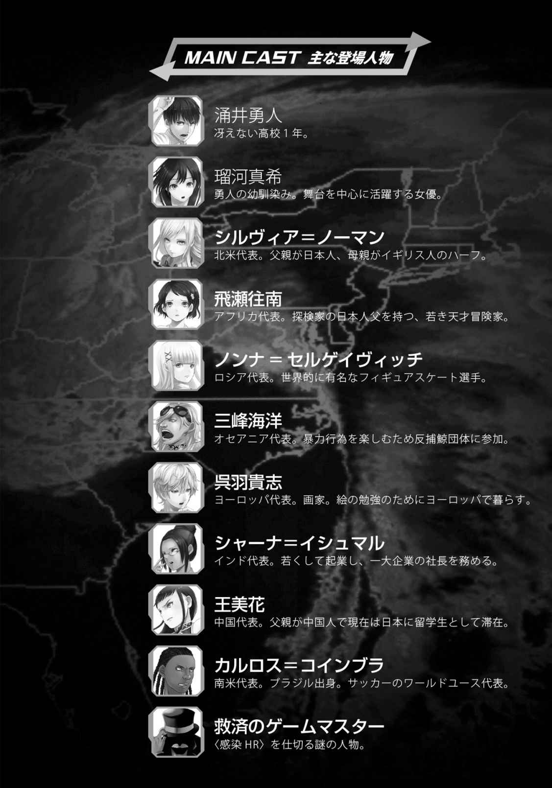
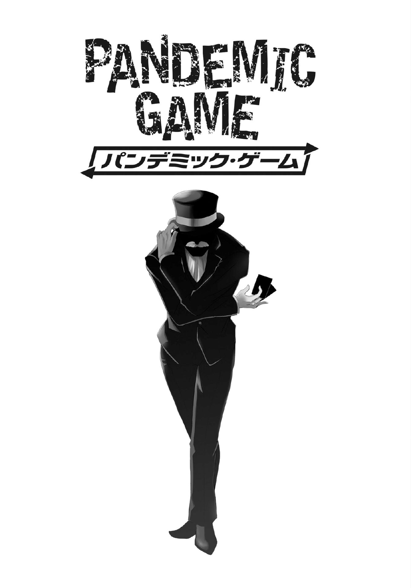
ＬＥＶＥＬ ０
女子学生専用のスクールバスでの自爆テロ。
民族紛争による寄宿舎襲撃から集団誘拐、虐殺。
ロケ中の映画撮影隊への犯罪組織による襲撃。
大学構内での無差別なライフル殺人事件。
突然入ってくるニュースは、いつだって血なまぐささを漂わせていた。その死臭をテレビ画面越しに嗅ぐたびに、人なんて簡単に死んでしまうのだと思い出し、少しだけ、ほんの少しだけ平和への想いをめぐらせ、そしてすぐに忘れる。
日本人とはそういう人種なのかもしれない。
そして、これらのニュースの中でも、いつもアメリカの事件だけは特別詳しく報道される。
最近、最も話題になったのがアメリカの研究施設が謎の武装集団の襲撃を受け、数十人もの施設職員が殺害された事件。
ネットで話題なのはもちろん、テレビや雑誌でも特集が組まれ、俺でも目にした。
テロ組織の犯行か？ 目的は何か？ 施設では何の研究がされていたのか？
憶測や好奇心がテレビのニュースやワイドショーを数日賑 わせ、そしてすぐに忘れ去られていった。
俺もまた、この事件に対しての関心を数日で失ってしまった。痛ましい事件とは思ったし、日本で起きたのならば大騒ぎになっていたのだろうけど、世界で見れば珍しい話でもない。
『犠牲者に日本人は、いませんでした』
そんなお決まりの言葉が、そのニュースを自分達からより遠いものとしていった。
世界が色々騒がしくても、日本には、何より自分には関わりの無い話なんだと、思っていたんだ。
それから２ヵ月後、このニュースが、全世界の人間にとって、どれ程大きな事件の始まり であったのか、俺達は思い知る事になる。
人を効率良く、確実に、そして大量かつ無差別に殺すためにばら撒くべきなのは、銃弾でも爆弾でもない。
そう、それは目には見えない──〝ウィルス〟なのだと。
ＬＥＶＥＬ １
お盆が終わり、高校生になって初めての夏休みも残り二週間ほどとなった頃。残暑とは名ばかりの灼熱の日差しに耐えつつ、俺は山道を歩いていた。
「暑い。いや、熱い。死ぬ、死んでしまう......」
山道とは言っても綺 麗 に舗装されており、両サイドは緑に囲まれた涼しげな道ではあるのだが、見ると行くとでは大違い。木々による防壁も、この殺人的な日差しをカバーするには足りていなかった。
「もう、だらしないな勇ちゃんは。オトコノコでしょ？ あと少しなんだから、頑張れ頑張れ」
声をかけてきたのはこの俺、涌 井 勇 人 の幼馴染みの瑠 河 真 希 だ。汗だくで息も絶え絶えな俺とは対照的に、息一つ切らさずに涼しげな顔で山道を歩いている。
「お前に持たされてる荷物が重いんだよ。つーか、何入ってんだコレ？ 着替えとかあるにしても、いくらなんでも重すぎんだろ」
「もう、勇ちゃんは女の子がわかってないな。中ではずっと制服でいるにしたって、替えは必要だし、下着なんて日数分必要なんだよ？」
当たり前のことを聞くんだねと言いたげな顔で答える真希。
そもそも、高校生にもなっていまだに〝勇ちゃん〟呼ばわりは恥ずかしいのだが、この暑さでそんな文句を言う気も起きてこなかった。
今まで何度も改善を求めては却下され続けてきた諦めもあるのだが。
「中でも洗濯は出来んだろ？ 一週間近く缶詰生活しようってんだから」
「それはそうだけど、備えあれば憂いなしって言うじゃない？ それともなーに？ オンナノコの服も持てない位に貧弱なのかな、勇ちゃんは？」
そう言って真希はくるりと踵 を返し、いたずらっぽく笑った。フワリと制服のミニスカートの裾が翻り、日差し以外の理由で体温が上がってしまう。
そう、夏休み中の外出なのだが、俺も真希も制服姿だった。俺は学校指定のＹシャツにズボン、真希はセーラー服といった具合である。俺が持たされている鞄の中には、おそらく替えのセーラー服に、その他着替えやら何やらがたくさん詰め込まれているのだろう。
旅行に行く際の母さんもそうだったが、こういう時に女ってのは荷物が兎に角多い。正直、そんなの使わねーだろってのも持って行こうとする。自分が持つなら勝手だが、持たされている側としてはたまったものではない。
「貧弱じゃないと言いたいけど、実際重いんだよ。少し休憩しないか？」
「こんな所で休んでも疲れなんて取れないよ？ それにほら、もう入り口見えてきた！」
そう言って真希が指差す方を見ると、そこには国立公園の入り口である事を示す立て札と、その隣に「グローバルユース討論会 会場」と書かれた看板が置かれていた。
「本当だ、もう少しなんだな。うし、頑張るか！」
「その意気、その意気♪」
嬉 しそうな真希の声に励まされ、足に力を入れ直す。
我ながら現金だけど、ゴールが見えてきたら歩く元気が湧いてきた。こういうの、よく聞く『次の電柱までは頑張ろう作戦』と同じなんだろうか。マラソンとか走ったことが無いから、実感湧かないけどね。
「にしても、今回のイベント、グローバルユース討論会だっけ？ それのためだけにこの公園を色々作り直したって聞いたけど、本当なのか？」
『文科省主催・国際貢献プログラム 第一回グローバルユース討論会』──今日これから開催されるイベントの正式名称であり、今俺達が到着した国立公園こそ、その開催地だ。
『世界で活躍する日本人、または日本社会・文化に貢献する若者を集めて、地球環境と人類の未来に向けて真剣な討論を繰り広げてもらう』
という目的の元、文科省・環境省などの肝入りで企画された。
より真剣かつ、深く入り込んだ討論をしてもらうため、参加者は会場となる施設で一週間の共同生活を行い、友好を深めつつ議論を交わす。
当然、誰でも気軽に参加出来るようなイベントではないし、少なくとも世界どころか日本、それ以前に高校ですら特に目立った成績を出していない俺なんかが、参加出来るはずもないのだが。
「うん。らしいね。元々この公園自体が昔の日本軍が使ってた施設の跡地に作ったらしくて、地下にもシェルター、昔だと防空壕？ みたいなのがあったんだって。今まではこの地域の緊急避難とか非常食の備蓄とかに使っていたらしいんだけど。討論会の為に改造して広い宿泊施設みたいにしたんだって」
「へぇ、さすが正式招待されてるだけあって詳しいな」
「招待状と一緒に届いた案内状に書いてあったことそのまんまだよ」
そう、俺の幼馴染みの真希が、このグローバルユース討論会の正式な招待生徒なのだ。俺は、一人で会場行くのが心細いなどと言い出し、その実は荷物持ちが欲しかっただけであろう真希の付き添いとしてここまでやってきたのである。
「でも討論なんて出来るかなぁ。ディベートの授業一回で、いきなり国際会議なんて」
「そりゃ、討論なんて普段からしてる奴の方が珍しいだろ？ 会議をお前の得意の演技力で切り抜けちまえば、後は交友を深めてればいいんだろ。それこそ、敏腕女弁護士なんてのはどうだ？ 他の参加者の意見に『異議アリ！』とか言ってさ」
俺がそう言うと、真希はクスっと笑い、そして急に顔つきを変えた。
「あなたの言う通りね、湧井くん。でも、討論というのはあくまでもお互いの考えや主張を語り合い、そして高め合うものなの。決して勝ち負けとか優劣を決める為に行うものではないのよ。裁判もまた本来そうあるべきなのでしょうけどね」
クールにそう言い放った真希は、掛けてもいないエア眼鏡を人差し指でクイッと押し上げた。その仕草はまさに、仕事のできる女、敏腕弁護士・瑠河真希と言ったところだ。
「すげーな、お前はホント。すぐそうやってなりきっちゃうんだもんな」
「なりきる 、だなんて物真似みたいに言わないでくれるかしら？ 私がしているのは演技。駆使しているのは演技力。なりきる のでも、見せかける のでもない。観客に信じ込ませる魅力を放つもの、それが女優なのよ」
クールな弁護士そのままに、演技について熱く静かに語る真希。
真希は、幼い頃から多くの演劇コンクールで数々の賞を受賞してきた、言わば天才女優なのだ。と言っても、芸能界で活躍しているとかそういうわけではなく、あくまでも舞台に拘っているらしい。
らしい、と言うのは本人からそうハッキリと聞いたわけではなく、どれだけ誘いの声がかかっても、テレビドラマはおろか映画にすら出演しないのを傍で見ていてそう感じただけなのだが。
まぁ、おかげで知名度の割には超多忙というわけではなく、こうして二人で出かける事は今でも決して珍しくない。
個人的には、この関係をずっと続けていきたいと思っているし、その意味では真希がいわゆる芸能界に何ら興味を示さないのには内心ほっとしていたりもする。
幼馴染みのアドバンテージがあったとしても、流石にテレビで見かける俳優や歌手、スポーツ選手がライバルでは分が悪すぎるというものだ。
真希の気持ちはどうなのだろう、と思うこともある。こうして頼りにされる（荷物持ちではあるが）だけでも、嫌われてはいないだろうし、良好な関係を続けられているとも思う。
あれだ。恋愛系の漫画やドラマでよく目にする〝友達以上、恋人未満〟というのが俺達の関係を最も的確に表現しているのではないだろうか。
「どうしたの、勇ちゃん？ 急に黙り込んじゃって」
我に帰ると、真希が前かがみになって下から俺の顔を覗 き込んでいた。弁護士モードが解除されて素に戻ったその仕草が可愛く、しかも前かがみからのぞく胸元にまたしても体温が急上昇してしまう。
「な、なんでもねーよ！」
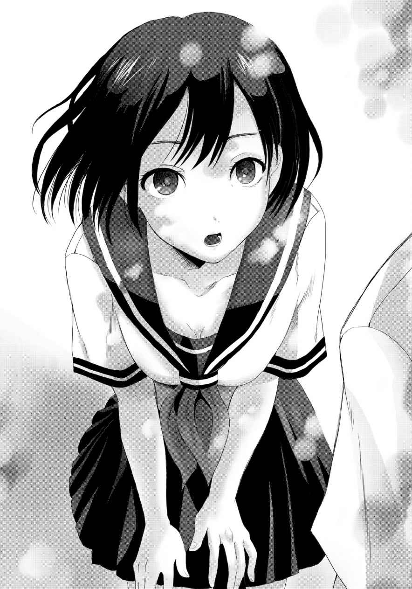
「ふーん？ 噓 でしょー。勇ちゃんがその顔する時って、やらしーことを考えてる時だよ？」
「は、はぁ!? 意味わかんねーし！ つーか、何でそんなことわかんだよ！」
「幼馴染みですからー。勇ちゃんが自分で気付いていない癖とか、私が知ってたりするもんなんだよ」
にひひ、と笑う真希に、ぐぬぬ、と言葉に詰まる俺。そういうもんなんだろうか？ 考えてみても、真希の癖とか特に思いつかないんだが......。
それにしても、クール弁護士からの切り替わりが凄い。一瞬にして役に入り込み、一瞬にして素に戻ってしまう。天才女優が幼馴染みのくせに演技に詳しくない俺だが、そんな俺でもまるで魔法にかけられたかのようにさえ感じてしまう事が何度もある。
「『演技』と『無演技』の振り幅はね、すごく重要なんだよ」
「へ？」
考えていたことを完全に見透かされた真希の言葉に、俺は間抜けな声を上げてしまった。
「その落差が大きいほど、人はより演技に引き込まれる。演技って、人を騙 すための技術だと思っている人が多いけど、それは間違い。
本当の演技は、人を演技の世界へと引き込むの。『観察者』だった観客を『参加者』にしてしまうのが、最高の演技だと私は思ってるんだ」
「どういう事だ？ あんまりピンと来ないけど」
「んー、そうだなぁ。教室でさ。人の会話がふと耳に入ってくることってあるよね？ それを黙って聞いている時」
「ああ」
「それは、まだ『観察者』の段階。それを演技でこっちに引き込んで、会話に参加させるの。輪の中に入っているけど、自分は発言せずに皆の話を聞いている『参加者』にね」
「でも、それってあんまり変わらなくないか？ どっちも自分から会話に参加しないわけだし、見てるだけってのは同じなような」
「変わるよ」
明確に否定する真希。その目は真剣そのもので、妥協の一つも許さないような真っ直ぐさがあった。
「自分たちの会話を横で聞いているだけの人の反応なんか気にならない。勝手に聞いて、勝手に笑ってるだけ。でも、輪に入って自分の話を聞いている人の反応はとても気になるよね。笑ってくれればもっと楽しませたいし、つまらなさそうな顔してたら楽しい話題を振らなきゃって焦る。
それは、舞台上での役者と観客の関係も同じ。観客は、演技に『参加』してくれているんだよ。役者の演技がより高みへと行けるように、時に笑い、時に冷たくしながらね。だからこそ、快く参加してもらうためにも『これは演技』という明確な世界が必要なの。その振り幅、差を明確にする事で、観客も安心して演技に『参加』出来るんだよ」
「うーん、わかるような、わからんような」
まだ首を傾げている俺に、真希は少しだけ苦笑しながら言葉を探しているようだった。
「勇ちゃんも、今いきなり百メートルを全力疾走しろって言われたら困るけど、運動会や体育の授業だったら走るでしょ？ それと同じだよ」
「あ、それならわかる」
ポン、と相 槌 を打ち、何やら納得する俺。
真希は同じと言っているが、おそらく俺に説明するために粉々に嚙 み砕いた話なのであって、多分同じじゃあないんだろうけど、とにかく今までの説明の中では一番腑 に落ちたのも事実なわけで。
「ふふ、勇ちゃんって聞き上手だね」
「そ、そうかな？」
「演技の事とか聞きたがる人は多いんだけど、大抵の人はすぐにわかんない、理解できないって投げちゃうんだよ。自分から聞いてきたくせにね。その点、勇ちゃんはたとえわかんなくても一生懸命考えてくれるから、話してて楽しいよ♪」
上目遣いににっこりほほ笑む真希。
予想していなかった褒め言葉に、ちょっと焦る。
「そ、それよりさ。お前、急に髪をバッサリ切ったじゃん」
「お、あからさまな話題変更だね。いいよ、乗ってあげよう。その通りでバッサリ切りました。けど、それがどうかしたの？」
夏休み前までは腰まで届くほど長く綺麗な髪をなびかせていた真希だったが、休みに入って一週間ぶりくらいに会った時にはセミショートとでも言うくらいに短くなっていて、その変身ぶりにとても驚いた。
男ならそれこそ夏に入って暑いから、って理由で短く刈り込むのもよくある話だろうが、女はそんな単純じゃないって事ぐらいは知っている。知っているからこそ、何で急に、と思ってしまったのだ。
「ほ、ほら。女ってよく失恋すると髪を切るって言うじゃないか。だから、お前も、その、失恋しちゃったのかなー、なんて」
「............」
「............」
沈黙。
あれ？ 俺、何かマズったかな？
「はぁ......」
深く深く深～い真希の溜 め息。
うっ、マズイ、怒らせてしまっただろうか。
「ねぇ、勇ちゃん？」
「は、はい！」
勇ちゃん、思わず直立不動。
「勇ちゃんって夏休みに入って彼女出来た？」
「で、出来てねーよ」
悲しい事に、大本命に目の前で盛大な溜息をつかれている他にはアテもございません。
「それじゃ、私のこと嫌いになった？」
「嫌いならこんな所いねーだろ」
全くもって本音である。
荷物持ちをやらされるのは予想範囲内だったが、それでも今日の誘いを真希から受けた時は嬉しかったくらいなのだ。
「じゃあ、私が失恋してるわけないじゃない」
「そ、そっか。いや、失恋してないならいいんだ。あははは」
「............」
「............？」
再び沈黙。
あれ、またマズりました？
「はぁ～～～～～～......」
肺の空気をカラッポにする位に深く長く重～い溜 め息。
どうやら、何かやらかしてしまったようだ。
「あ、あのさ、真希？ 俺、何か悪い事を言ってたんなら謝るよ。ゴメン！」
先手必勝、拝むように両手を合わせて真希に謝罪する俺自身に対して、客観的にこれだけは言える。
今の俺、すごくカッコ悪い。
だが、そんな情けない姿を哀れに思ってくれたのか、真希はぷっと小さく吹き出すと、しょうがないなぁと言いたげな笑顔を向けて許してくれた。
「ま、勇ちゃんだもんね。慣れてるよ、うん」
「う、何だか言葉にまだ棘 が......」
「そりゃあね。女優が珍しく口にした演技抜きの言葉をスルーされたら怒りたくもなるよね。てゆーか、怒るところだよ。やっぱり許さない」
そう言うと真希は立ち止まり、腕を組んで僕を睨 み付けた。
その本気モードの怒りに、俺はみるみると青ざめていく。
「ど、土下座すればよろしいのでしょうか？」
情けなさＭＡＸな、俺！
「......スしなさい」
「へ？」
よく聞き取れなかったけど、何をしろと言ったのだろう？ やっぱ土下座？
「私に、キスしなさい」
「うぇっ!? 」
今度はちゃんと聞こえた。その、謝罪要求としては唐突すぎる内容に、俺は思わず顔を上げ、真希の顔を凝視する。
真希の顔は、青ざめているであろう俺の顔とは対照的に、耳まで朱に染めあげられていた。俺の視線に目を逸らして恥らう姿は、敢えて言おう。
超可愛い。
「ほ、ほ、ほほほほほ、本気？」
嚙みまくりながらようやく口にした俺の確認に、うつむきながら小さくコクリと頷く真希。そして顔を上げ、俺と視線を合わせると、潤んだその瞳を静かに閉じた。
心臓が早鐘のように打ちつけ、もはや夏の暑さなど完全に凌 駕 する程に体温が急上昇していく。思わず周囲をキョロキョロと見渡したが、誰もいない。
俺は意を決し、真希の両肩を摑 む。その拍子に真希がピクリと全身を強張らせた。力を入れ過ぎてしまったかと思い、手を緩めると、安心したのか真希の体からも力が抜けていくのが伝わってきた。
（い、行くしか、行くしかないっ！）
俺は顔を少しずつ真希へと近づけ、そして二人の唇が重なり──
そうな所で、俺は真希に軽い頭突きを浴びせられた。
「へぶっ！」
「という、台詞のある女の子の役をやるの。その為の役作りとして髪を切ったんだよ」
「へ、へぇぇぇ......。そ、そうなんだぁぁぁぁぁ......」
鼻頭をさすりながら、俺は自分が思いっきりからかわれていた事に気が付いた。
真希は昔からその演技力を駆使して、俺をからかい、たぶらかしてきたのだ。
断言できる。世界的女優である瑠河真希の演技力を、最もよく知る者はこの俺、湧井勇人であると。
「ちなみに、外国映画の主役だったりして」
「へぇ......えぇぇぇ！？」
あっさりした真希の口調に一瞬、流してしまいそうになったが、それは俺にとってまさに青天の霹靂だった。
「なっなんで!? いつ!? どんな映画!? それに外国の映画って、こないだニュースでなんか襲撃事件とかあっただろ！ 大丈夫なのかよ!? 」
「ああ、あの事件。何かスタッフが皆殺されちゃって、どんな映画だったかもわからなくなっちゃったらしいよ。フィルムも奪われちゃったって」
「そんな危険な仕事受けたのかよ！」
「落ち着いてよ、勇ちゃん」
「これが落ち着いてられるかよ！」
「何も必ず襲われるわけじゃないんだよ？ それに変な映画じゃないよ？ 『世界を救う素敵なお話』なんだから」
そう言うと真希はにっこりと笑った。
そんな顔されたら何も言えなくなる。今まで断ってきた映画の話を受けた位だから、きっと本当に良いお話なんだろう。
「......まぁ、お前が決めた事だしな。がんばれよ」
「うん、ありがと。勇ちゃん」
とは言ってもやはり心配だ。共演者にはどんなイケメンが......。
「気になる？」
「ば、馬鹿言ってんじゃねーよ！ 勝手にしろだし！」
「ふーん」
俺の言葉に面白くなさそうな声を出す真希。俺の少し前を歩きながら、足下に転がっていた石を横の芝生へと蹴りこむ。
「ねぇ、勇ちゃん、一つだけお願いしていいかな？」
「ん？ 何だよ、改まって」
「これから先にね。演技じゃない、本当の私に気が付いたら、その時は勇ちゃんも全力で応えて欲しいな」
「演技じゃない時？」
「演技の『台詞』にはいつだって意味がある。一つだって無意味な言葉なんてない。だから、無意味な言葉こそ私の本当だって気付いて欲しい」
「ふーむ」
何だか少し難しい話だったけど、それって要するに普段の時なんじゃないのか？ そうならば、今さらお願いされる事でもない気がする。
でも、真希は妙に神妙な顔をしていた。
あるいは、コレも演技なのだろうか？ 真希は、本当にその辺の区別がつかない。だからこそ、天才女優なんて言われているのだろうけど。
兎に角、真希にお願いされた時の俺の返事は、基本的に一つしかない。
「ああ、任せろよ。俺とお前の仲だろ」
「うん、ありがとう勇ちゃん！」
弾けるような笑顔を見せる真希。
うん、この笑顔が見られるなら全力くらいいつでも出せるな。
そんなやり取りをしていた俺たちの耳に、やがて何やら喧 騒 らしき音が聞こえてきた。到着したそこは山の中の窪 地 のような空間で、たくさんの人たちで賑 わっている。国立公園内で車の乗り入れも規制されているというのに、大層な機材や脚立を並べ立てて取材に来ている報道陣、関係者と思しき背広の人たち、それに警備に当たっている警官の姿もあった。それこそ出店が出ていても不思議じゃない雰囲気だ。
「どうやら到着したみたいだね。お疲れ様、勇ちゃん」
「いやいや、久しぶりにハイキングしたみたいで結構楽しかったよ」
二人で笑い合い、坂道を会場へと下りていく。俺達の到着に気が付いたのか、人々の間から声が上がった。
「見ろ、瑠河真希が来たぞ！」
「隣の少年は誰だ？ 参加者じゃないな」
「まさか彼氏か!? スクープだ！」
そんな声があちこちから聞こえ、あっと言う間に俺達は報道陣に取り囲まれてしまった。職員や警官が何とか押し止めてくれていたが、これは俗に言う大混乱というやつである。
テレビ出演のオファーが後を絶たないと言われている真希のことだ。注目度が高いのはわかっていたが、これ程とは流石に思ってもみなかった。
「瑠河さーん！ 海外の主演映画のオファーを受けたという話ですが、本当ですか!? 」
「某芸能プロダクションが、あなたの為に年間数億円の条件を用意していると言われていますが、芸能界入りの意思は!? 」
「その横の冴 えない少年は誰ですか!? 彼氏ですか!? 」
「押さないで下さい！ 参加者への取材は後ほど個別に時間を用意しますので！ それと、参加者への本イベント以外の質問は控えてください！」
報道陣の取材と、イベントの広報担当の怒号が飛び交う。
つーか、冴えない少年とか言わなかったか？ さりげなく失礼だなオイ。
そんな事を考えていたら、真希がゆっくり一歩前へと進み出た。
「皆様」
静かだけれど、騒しさの中でも確かに響き渡る声。そして威厳に満ちたその立ち振る舞い。
（演技に入っているな）
俺にはすぐにわかった。多分、女王陛下とかそんな役なんだろうと思う。
その威厳ある姿に、これまで騒いでいた人たちが波が引くように一斉に静かになっていった。
「今回のイベントは私も大変楽しみにしていました。多才な参加者の中で私が討論するなど、不安もたくさんあります。参加する限りは全力を以って臨み、この討論会を実り多きものにしたいと思っております。その準備に集中する為に、クラスメートの涌井勇人くんにも会場まで一緒に来て頂きました」
真希がこちらに振り返り、まさに〝プリンセススマイル〟を俺へと向けた。
報道陣も一斉に俺を見たので、小さく頭を下げる。
「討論会を盛り上げるため、遠い所まで取材に来て下さった皆様にも大変感謝しております。ですが国際的な行事の前に、私事で御迷惑をお掛けするわけにはいきません。今回は、女優としてではなく一人の高校生として参加しますので、何卒、秩序ある行動をお願い致します」
言い終えると、真希は深々と頭を下げた。
あれほどうるさかった報道陣に一言も口を挟ませず、真希は言ってのけた。
もはや、ここにいる誰もが瑠河真希劇場の観客となり、真希の演技に魅了されてしまっていた。
（これが、さっき言っていた引きずり込むって事なのかな）
目の当たりにしてもなお、凄さがピンと来ないのは、逆に凄過ぎるからなのかもしれない。結局、凡人たる俺にはわからない世界ではあるのだ。
真希の対応のお陰で係員たちの制御も効き、俺達はそこから離れられた。
「会場入りする前の待合室などはありますか？」
「え？ あ、は、ハイ。こちらにどうぞ」
真希に見とれていたのだろう、急に話し掛けられた職員があたふたする。真希の側にいると起こるあるある の一つだ。
案内されたテント内で、俺と真希は設置されていたパイプ椅子に腰掛け、手渡された紙コップの麦茶で一息ついた。運動会の会場なんかでよく見かけるテントに一応囲いが張られ、大型送風機が唸 っている。これだけでもかなり涼しい場所だった。
その後、やってきた背広のおっさんに、真希だけが呼ばれて何やら説明を受けているのを俺はぼんやりと眺めていた。
どうせ参加資格の無い俺は、説明なんて聞く必要も無いのである。
目下の関心は、討論会終了後の帰り道にも迎えに来て欲しいと言われるか言われないかだった。面倒な気持ちも当然あるが、お願いされなかったらそれ以上にショックな気がする。
（そういえば、参加者に男もいるのか？）
いや、多分いるんだろうけど。
一週間も共同生活をしていたらソイツとすっかり仲良くなって、それに討論会の参加者って事はソイツもやっぱりスゲー奴なわけで、俺と違って真希とはお似合いで、迎えにきた俺は──
「彼と一緒に帰るから、勇ちゃんは先に帰っていいよ」
とか言われちゃうんじゃないだろうか？
（考えれば考えるほど落ち込んできた......）
はぁ、と溜め息を吐き、場違いな気持ちで俺は真希から視線を逸らした。ふとテントの囲いに透明ビニールの窓があるのに気付いた。そこから覗けば、他の参加者が来るのが見えるかもしれない。暇な俺は立ち上がって外気で熱くなっていたビニール製の窓から外を覗き、すぐに我が目を疑った。
（シャーロック・ホームズ？）
誰もがホームズにイメージするあの帽子とコートを着た女の子が、八月の日差しの下を顔色一つ変えずに歩いていたのだ。季節的にも場所的にもミスマッチな気がしてならないが、俺の第一印象はその一言に尽きる。
深くかぶられた帽子から流れる髪は以前の真希のように腰に届くほどの長い銀髪、白い肌は透き通るようで、まるで陶器のような無機質な感じさえ覚えてしまう。遠目からでもハッキリわかるスカイブルーの瞳が、彼女が純粋な日本人ではないことを如実に証明していた。
今まで見た事も無いくらいに綺麗な、本当に綺麗な女の子。
女の子は、俺の視線に気付いたのだろうか、足を止めてこちらに視線をチラリと向けた。その眉が一瞬、ほんの少しだけ動いたような気がした。
だけどそれ以上は何らリアクションを見せず、歩き去ってしまった。
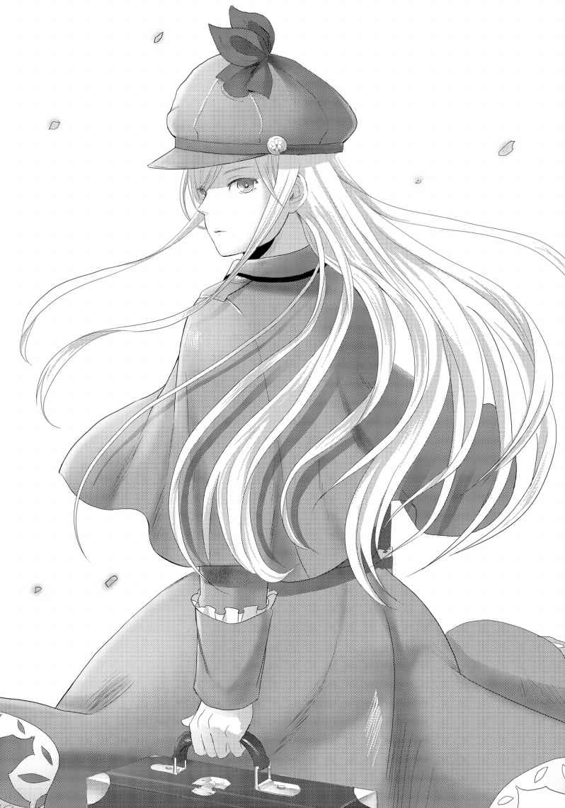
その後姿をずっと眺める。膝下まで覆った厚手のスカートが、実に暑そうだった。
「ゆ・う・ちゃーん？」
「へ？」
背後からの声に我に返り、視線を向けたそこには、腕を組み怒りのオーラを漲 らせて仁王立ちする真希の姿があった。
「な・に・を・見・て・い・る・の・か・なー？」
「あ、ああ。こんな暑い中、あんな服を着てて暑くないのかなーって」
「へぇーほぉーふーん。とっても綺麗な子だもんねー。お人形さんみたいだよねー」
「ち、違うって、そういうんじゃなくってさ！ 俺はただ！」
「ただ？」
ドスの利いた声で俺の返答を待つ真希。
これ、極道の妻の演技とか入ってないよね？ 超怖いんですけど！
「あのう」
「何？」
「そのう」
「だから何？」
「すいません。すっごい綺麗な女の子だなって見とれてました」
速攻、地面に土下座する卑屈ＭＡＸな、俺。
「正直でよろしい。それはそうと、やっぱり中まで勇ちゃんは一緒に入れないみたい」
怒り顔から一転、残念そうな表情を見せる真希。
「それどころか、中に入れるのは本当に参加者だけみたいなんだ。この招待状が無いと入り口が絶対開かない仕組みになっているんだって」
そう言って真希は鞄から一枚のカードを取り出し、俺に見せた。それは招待状と言うよりは、よくあるＩＣカードのようなモノで、表面には『ＭＡＫＩ ＲＵＫＡＷＡ』と刻印されている。
「へぇぇ、随分とまぁ厳重と言うか、徹底してるんだな」
「だよね。正直私もここまでとは思わなかったよ」
真希が呆 れた声を出す気持ちは俺にもよくわかった。そりゃ付いてきたぐらいで参加できるとまでは思っていなかったけど、討論会場内にすら入れてもらえないとは流石に予想外だ。俺はここで引き返すことになりそうだ。
「でさ、開始時間と言うか、入室時間にはまだ大分あるし、私はマスコミの個別取材も受けなきゃいけないんだって。だからさ。カードを貸してあげるから、こっちの荷物だけ置いてきてくれない？ ついでに、こっそり中を見学してきちゃいなよ」
「そんな事して良いのかよ？」
「会場はマスコミにも見せたって言うから、別に平気でしょ？ ダメなら引き返してくればいいし、それで怒られるのは私だし、参加資格剝奪されたら帰ればいいし」
あっけらかんと答える真希。
どうやら討論会への参加はそこまで積極的ではなかったらしい。
なる程、どうりで俺に荷物持ちでここまで付き合わせるわけだ。俺が断っていたら、ここに来なかったんじゃないか？
「まぁ、確かに会場に興味はあるけど......いいのか？」
「もちろん！ ここまで付き合ってくれたお礼だよ♪」
招待状を差し出しながらニッコリ笑う真希。
「お前が入らないといけない時間は？」
「えっと、一時間後だって言ってた。取材が終わったらメールするから、ゆっくりでいいよ。あ、他の荷物は私が自分で持って行くから」
「全部運んでおいてやるぞ？」
「いいよ。私が見てないところで荷物持たせたら、勇ちゃん私の下着を物色するでしょ？」
「するか！」
「あははっ、とにかくこっちのは大丈夫だから。中の探検ゆっくり楽しんできてよ」
「そうだな。じゃあお先」
差し出されたカードを受け取り、大事にポケットの中へとしまう。これを失くしてしまったら洒落にならないだけに、気を付けないとな。
「あ、荷物と言えば帰りはどうするんだ？」
「え？」
「帰りだよ、帰り。討論会終わった後の話」
「あ、ああ。うん。そうだね。そうか。一人で、帰れるよ」
妙に歯切れの悪い真希に、俺は少し違和感を覚えた。変に遠慮でもしているのだろうか。ここまで付き合わせておいて、今さら何を気にしてるのだろう、こいつは。
「迎えに来るよ」
「......いいの？」
「乗りかかった船って言うだろ。だから、一週間ちゃんと頑張れよ。ネットとかテレビ中継もあるって言うし、応援してっからさ」
「ありがとう、勇ちゃん」
「いいっていいって。じゃ、また後でな」
帰りの荷物持ちを確定させた所で、俺は真希に背を向けた。
確か、入り口はあっちだって説明がさっき聞こえてきてたよな。
「勇ちゃん！」
「へ？」
後ろから突然かけられた真希の声に振り返る。
ふわり、と良い匂いが鼻をくすぐり、唇に柔らかく、優しい感触を覚えた。
真希の顔が、俺の本当に目の前にある。
とても長い一瞬が終わると、真希は俺から離れ、うつむいた。
「ま、真希？ い、今のって......」
「勇ちゃん」
「は、はい！」
「迎えに来てね。私の事、きっと、きっと迎えに来てね！」
真っ赤になった顔を上げ、大きな声でそう告げると、真希は先ほど俺達を取り囲んでいた報道陣が待つ場所へと駆け出していった。
ファーストキス。
真希とキスしたんだ。
それは、凄く嬉しくて、凄く感動的で、凄く幸せな出来事のはずなのに。
（涙......？）
真希は、泣いているように見えた。
実際に涙が見えたわけじゃないのに、俺にはそう見えた。
この時、俺は真希を追いかけるべきだったんだ。何も考えず、ただそうすべきだった。
でも俺は、そうしなかった──。
＊
真希とのファーストキスで頭をぼんやりさせながら、俺は会場の入り口へと辿 り着いた。
入り口、と言っても別にウェルカム！ とか書かれた扉があるでもなく、エレベーターの昇降口みたいなドアが地面から突き出しているだけだった。
真希が受けていた説明で少しだけ聞こえていたが、どうやら会場、と言うかこの場合は共同生活所とでも言うべきだろうか。そこは大型シェルターの内部をリフォームしたもので、地上でそれこそ核爆発が起きても平気な作りだとかなんとか。
世界の宝とも言うべき優秀な若者を一堂に集めるのだから、それくらいの万全を施すのは当然！ とか言っていたけど、だったらそもそもこんなイベント開かないのが一番安全だと思ってしまうのは俺だけだろうか？
つか、そんな厳重な話なら、やっぱり借り物のカードなんかじゃ入れないんじゃないか？
一抹の不安と、ダメで元々という気持ちと共に、俺は端末にＩＣを重ねた。ピッという電子音が鳴り、続いて緑色のランプが灯る。
「ヨウコソ、ミス・マキ＝ルカワ」
無機質な声が響き、扉が開かれた。
中へと入ると、それはやはり完全にエレベーターであった。スイッチは二つしか無く、１ＦとＢ10 Ｆである。随分地下に会場があるのだなぁと感心しつつ、とりあえずＢ10 Ｆのスイッチを押す。
扉が閉まり、エレベーターが動き出す。
「つか、本当に入れちゃいそうだな。なんつーか、厳重なのかザルなのか......」
こんな所に真希を預けて大丈夫なのか？ まぁ、そのおかげで中に入れるんだから、何とも言えない気分だが。
少ししてエレベーターは停止し、ドアが開く。出ると、そこには俺が今まで抱いていたシェルターのイメージとはかけ離れた空間が広がっていた。
喩えるなら、高級ホテルのエントランス、とでも言うべきだろうか？ 学校の体育館と同じかそれ以上の広大な空間が広がり、電球による淡い間接照明、床にはカーペットが敷き詰められ、重厚な石壁にはクラシックな唐草彫刻が施されている。
地下の閉塞感とは無縁な高い天井、歩くにつれて照明もまるで昼間の太陽の下にいるかのように明るくなった。それこそ、今エレベーターを降りてきたのでなければ、ここが地下10 Ｆだとは信じられないくらいの雰囲気だった。
どうやらここが施設の中心部らしく、放射状に通路が延びていた。推測だが、それぞれ参加者個人の宿泊部屋などへと続いているのだろう。
「すっげえな......。幾らかかってんだろ、これ」
我ながら俗な発想だとは思ったけれど、やっぱり最初に抱いた感想はそれだった。
このイベントがどれだけの意味を持っているのかとか、そういう事はよくわからないけど、それにしたってこれは大げさ過ぎないか。
こういうの、なんて言うんだっけ。金持ちの考えることはよくわからん、だったか？ いや、主催しているのは政府なわけだから、税金の無駄遣い、だろうか。
そんな事を考えていると、背後からエレベーターが開く音が聞こえてきた。どうやら、他の参加者が降りてきたらしい。
自分と違って正規の参加者という事は、真希と同じように何かしら凄い能力とか特技とかを持ってて、その分野で活躍している奴なわけで。
思わずちょっと身構えたが、降りてきた相手に色んな意味で驚いてしまった。
「シャーロック・ホームズ？」
そう、先ほど地上で見かけた暑さ知らずの女の子だった。
驚くべきことに、汗一つかいていない。外から来た時、こちらは半そでＹシャツで汗だくだと言うのに、どんな体温調節能力の持ち主なんだ？ まさか、それで呼ばれたのか......。
「......何かしラ？」
「あれ？ 日本語......」
「日本に住んでいタのは十年位前だかラ」
片言の発音を気にしたのだと思ったらしい。
俺としては、どう見ても外国人にしか見えないホームズさん（仮）が日本語を話せる事に驚いたのだが。
そういえば討論会のコンセプトは日本に関係の深い、という条件が入っていた気がする。そう考えれば、日本語を話せる外国人が参加していても不思議は無いのかもしれない。
「アナタは......？」
俺の視線が気になったのか、ホームズは帽子を取ると、長い銀髪をかき上げながら俺に問いかけてきた。言葉の一つ一つが短いのは、日本語に慣れていないからか、それとも元々口数が多くない方なのか、あるいは両方か。
「俺は湧井勇人。本当は参加者じゃないんだけど、知り合いが参加者でさ。ちょっと施設を見学させてもらってるんだ。ホー......じゃない、君は？」
「............」
あれ？ 自分から聞いたのに無反応？ つか、何か視線が微妙に俺に向けられていないような......。
「My name is Yukina Tobise」
「おわっ！」
突然背後から聞こえた声に、俺は思わず驚いてしまった。
俺の反応に、声の主もビクッとなって後ずさる。そこには、小学生かと勘違いするくらいに背の小さな女の子が立っていた。どうやらホームズさんは、俺ではなく彼女に声をかけていたらしい。
女の子は、余程びっくりしたのか、半べそ状態だった。
「うわー！ ごめん！ ごめんなさい！ あ、アイムソーリー!? 」
仕事のミスを上司に謝罪するサラリーマンのように、ぺこぺこと頭を下げ続ける俺。何だか、今日は人に謝ってばかりな気がする。
「キニ......シテナイ......ヨ。ダイ。ジョウ、ブ？」
片言を通り越して、たどたどしい日本語が聞こえてきた。
頭を下げたまま、恐る恐る女の子の顔色を伺う。視線が合うと、少しだけ肩を震わせたが、すぐに笑顔になってくれた。どうやら本当に怒っていないらしい。ただ、こんな小さな女の子を怯えさせてしまったのは事実だし、申し訳ない気持ちで一杯だ。
「ん？ 小さい女の子？ ここにいるってことは、君も高校生なの？」
「ンー？」
チビ子ちゃん（仮）が、小首を傾げる。もしかして、日本語が上手く伝わってないのだろうか？ 参ったな、俺、英語なんて全然喋 れないぞ。
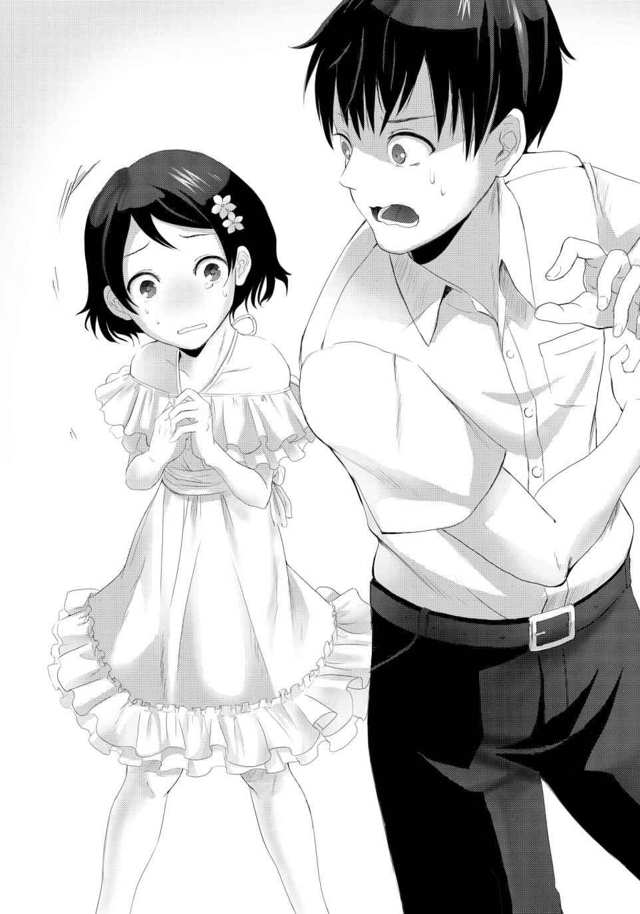
俺が困惑しているのが伝わったのか、チビ子ちゃんは少し慌てた様子で、両手をブンブン振って何か言っている。
英語だ。英語なのはわかる。だが、英語だという事以外は何もわからない。
「アナタの言う通り、自分は高校生デ、十七歳だと言っているワ」
「ホームズさん」
「......自己紹介がまだだったカシラ。ワタシには、シルヴィアという名前があるワ」
「ご、ごめん。えっと、シルヴィア、さん？ 英語も話せるんだね」
「当たり前ヨ。ワタシはアメリカから来ているのダカラ」
バカな質問しないでって顔をされてしまった。片言の日本語を話しているのだから、そもそも日本在住ではなさそうなわけで、英語が話せて何の不思議も無いわけで。
うん、確かにバカな質問でした。
俺が心の中で反省しているのを余所に、二人は何やら英語で話し始める。
ネイティブの英語ってもはや呪文にしか聞こえないよね！ 何を言っているのかさっぱりだ。取り残された気分で二人の会話を眺めていると、シルヴィアさんとチビ子ちゃんがこちらに向き直った。
「彼女はユキナ＝トビセ。この会にはアフリカ代表として参加しているそうヨ」
「へ？ アフリカ代表？」
俺は思わず素っ頓狂な声を出した。勝手なイメージかもしれないけど、アフリカと目の前の小さな女の子がどうにも結びつかない。日本語は得意ではないようだけれど、顔立ちは完全に日本人そのものだし。
俺の不思議そうな顔が伝わったのか、ユキナちゃんは隣のシルヴィアさんに何やらまた英語で話しかけた。聞き終えると、シルヴィアは小さく溜め息をつく。
「アフリカでお父様と一緒に探検をしているそうヨ。小さい頃からずっとそういう生活だから、日本語は聞き取りは出来ても会話ができないっテ」
少しぶっきらぼうに語るシルヴィアさん。どうやらユキナちゃんに通訳にされてしまったらしい。嫌なら断ればいいだろうに、それをしない辺り、冷たそうな印象とは裏腹に人が好いのかもしれない。
「そっかぁ。ん？ 父親とアフリカで探検？ トビセ......って、もしかしてあの探検家の飛瀬往 也 の娘なの!? 」
俺の反応にユキナちゃんは目を真ん丸くした後、少しだけ苦笑いしながら頷いた。
思わず大きな声を出してしまったが、飛瀬往也と言えば世界的に有名な探検家で、彼をモチーフにした冒険映画が何本も製作されているような有名人だ。俺も映画を何度も見ては、その冒険活劇に心を躍らせたものだ。
そんな有名人の娘さんが目の前にいるとは、さすがグローバルユース討論会とでも言うべきだろうか。改めてこの会の大きさと、自分の場違いを実感してしまう。
「はぁ～。って、でもテレビの特集とかで見たけど、飛瀬さんてスゲー大変な冒険とか探検してるだろ？ ユキナちゃん、あれに付いていってるって凄いな」
ましてこれまでのユキナちゃんの反応を見る限り、些 細 な事でも驚いたり怖がったりするタイプの女の子に思えた。そういう繊細さや臆病さこそ、実は冒険には必要なのかもしれないけれど、とてもアフリカの大自然を旅して回る事が出来るようには見えない。
そんな俺の素直な感想に、ユキナちゃんはこれまでで一番ビックリした顔を浮かべた。
「ホント、ウ？」
「ああ、本当本当。いくら親父さんが探検家だからって、それについていくなんて並じゃ出来ないよ。俺、自分の親父が探検家だったとしても、とても自分にはできる気しないもんな。ユキナちゃんは凄いよ、本当に。尊敬する」
俺の言葉にユキナちゃんは少しだけうつむき、そして顔を上げると今までで一番の笑顔を見せてくれた。
「アノ......May I ask your name ?」
「え？ あ、ああ。俺はユウト、ユウト＝ワクイ、って言えばいいのかな？」
さすがに今の英語は聞き取れたので、シルヴィアさんを介さずに答える。ユキナちゃんも、俺が聞き取れるようにゆっくり、そして簡単な表現で話してくれたようだった。
「ユウト」
ユキナちゃんが小さな手で小さく手招きする。誘われるまま、ユキナちゃんの近くまで寄ると、服の裾を引っ張られた。少しバランスを崩し、前かがみになるや、頰に何やら暖かくて柔らかい感触が。
「へ？」
「アリガ、トウ。ユウト」
にっこり笑顔のユキナちゃん。
今のって、キス、だよな？ いや、でもユキナちゃんは外国暮らしが長いわけだし、この位は朝飯前の挨拶代わりって可能性も高いわけで、あ、でもその意味では親愛の気持ちと言うか、仲良しになれたって事なのかな？
って、頭がぐちゃぐちゃだ！ さっきの真希と、今日だけで二回も女の子にキスされちゃったぞ、俺！ 一体何がどうなってるんだ!?
「下らない戯れ合いをしているのね」
「うぉう！」
背後から突如声をかけられ、ユキナちゃんのキスで跳ね上がっていた心臓が、さらに飛び出そうになった。どうやら今日は、背後から人に驚かされる日でもあるらしい。
ばっくんばっくん言う胸に手を当てながら振り返ると、そこには金髪碧 眼 、絵に書いたような外人女性、しかも超美人が腕を組んでこちらを睨み付けていた。どうやらたった今、エレベーターから降りてきた所らしい。
「き、君は？」
「世界で活躍する人間が集まるというから、わざわざこんな小さな島国まで足を運んだと言うのに、所詮日本人なんてこの程度という事ですわね」
決め付けがかった言葉にムッとなる。
「たったこれだけでそんな事わかるのかよ」
「わかるのではなくて、元から知っているのですわ。日本という国が矮 小 で、日本人は愚か者ばかりだというコトを、ね」
「その割には随分日本語が流 暢 なんだな」
日本人の俺でも普段使わないような単語が出てたぞ、今。てか、ワイショウって、どういう意味だ？
「ええ、この低俗な言語を口にしていると、祖国への誇りをより強く持つ事が出来るから」
一方的に日本を蔑み始める金髪女（仮）。その居丈高な物言いに反論してやろうとした時、シルヴィアさんの姿が目に入った。
無関心かつ無表情なその表情は、冷静になれ、と俺に伝えているようだった。その隣でユキナちゃんが心配そうな顔をしてこちらを見ている。
俺は大きく深呼吸して、血が昇った頭をクールダウンさせるように務めた。
そうだ。俺はもうすぐ地上に戻って真希と交代するわけだし、ここで揉 めても意味が無い。この後、ここに合流する真希の立場を悪くしてしまうことになりかねない。
金髪女に背を向け、会話を断ち切る。後ろから、フン、と小さく冷笑が聞こえてきたが、無視無視無視！
「ありがとう、シルヴィアさん」
「ワタシは何もしていないワ。それと......シルヴィア」
「ん？」
「シルヴィア、でイイ。さん、って付けられるの、慣れていないカラ」
少し照れくさそうに目を逸らすシルヴィアさん、じゃない、シルヴィア。隣のユキナちゃんも俺の裾を引っ張り、ミー・トゥー、と口にした。ちゃん付けしなくて良いって意味だろう。
「わかった、シルヴィア、ユキナ。俺の事も、勇人でいいから」
改めてよろしく、そう言うとシルヴィアは小さく、ユキナはにっこり笑ってくれた。
ああ、せっかくこんな可愛い子二人と仲良くなれたのに、もうすぐお別れなんだなぁ......。でも、二人には真希のことをよく頼んでおかないと。この二人なら、真希ともきっと仲良くしてくれるだろうし。
「っと、もうこんな時間なのか」
二人と話しているうちに結構な時間を食ってしまった。頼まれた荷物を置いてくるのもまだだった。どうやら内部を探検している暇はなさそうだ。
でもまぁ、二人と話せたことの方が、ずっと有意義だったかな。
見学せずに女の子と話してました、なんてことは真希には内緒にしておこう。
「あのさ、俺そろそろ......」
俺が言いかけたその瞬間、施設内に突如耳障りな警報音が鳴り響いた。
「な、何だ!? 」
『エントランスへ集合せよ。繰り返します。エントランスへ集合せよ』
機械音声のアナウンスが室内にこだまする。その音を聞いてか、奥に続いていた幾つかの通路から、既に到着していたのであろう参加者達が、次々とエントランスへと姿を現し始めた。
ガラの悪い長髪の男。タンクトップ姿の両腕には、タトゥーがびっしりと掘り込まれている。
さらに絵の具だらけのボロボロの白衣を着た俺と同じくらいの背格好の少年。
続いて眼鏡が知的な印象を与える、浅黒い肌が特長的なアジアンビューティーと言った雰囲気の女の子。
ぼんきゅっぼーんなナイスバディを、タイトなチャイナドレス姿で惜しげもなく見せ付ける女の子。
ドレッドヘアーに、まさにアスリートと言うべき肉体を持つ少年。
皆、それぞれが特徴的な外見だった。誰もが突然の出来事に驚いた顔をしている。
「フン。何が始まるのかしら？」
そんな中、全てを見下す傲慢な態度を崩さないさきほどの金髪美少女。
「ユウ、ト......」
ユキナが怯えた表情で俺の裾を摑む。
「............」
対照的に、何ら怯 えることなく真っ直ぐに虚空を見据えるシルヴィア。
「何が起きたんだ......」
そして、唯一、招かれざる客である俺。
九人が集まったエントランスで、それは始まった。
唐突に、そしてごく簡単に。アナウンスは、こう続けたんだ。
『これより全員に《人類絶滅感染ゲーム》を始めてもらいます』
思わず耳を疑った。
人類絶滅？ 感染？ 一体、何を言っているのだろう。ここにいる誰もが、状況を飲み込めないでいるまま、アナウンスは言葉を重ねる。
『それに伴ない出入り口を封鎖し、周辺にいる関係者の《殺処分》を開始します。これは完全なゲームの遂行のため、超法規的措置です』
「なっ！」
その言葉の意味に気付いた時には既に遅く、エレベーターの出入り口にシャッターが下ろされた。
「閉じ込められた!? 」
「さ、殺処分って、どういう......」
周囲から聞こえる困惑の声。
そうだ。今コイツは何て言った？ 外にいる人間を、殺処分する、と言わなかったか？
俺の疑問はすぐに答えが出た。天井が開き、巨大なモニターが姿を現す。何十もの画像に分割された画面には、まさに地獄絵図が映し出されていた。
喉を押さえ、悶 え苦しみながら倒れていく人。
目から、鼻から、口から血を吹き出して倒れる人。
まるで蟹のように大量の白い泡を吹き出し、やがてそれを赤い色に変色させて倒れる人。
先ほどまで地上で大会の準備をしていた職員や、取材陣たちが無残に《殺処分》される姿だった。
「な、なんだよ、これ......、何の冗談だよ......。真希は、真希は!? 真希っ！」
俺はモニター内のあらゆる画面を血眼になって探した。
何の根拠も理由も無いけど、それでも真希は逃げているはずだ、無事なはずだとそう自分に言い聞かせて。
だけど。
「ま......き......」
その画面には、見慣れた制服姿の女の子が横たわっていた。カメラに向けて背を向けていて顔は見えない。だけど、間違いなく真希が着ていた制服。役作りの為に切った真希と同じ髪型。
そして、横たわる体の下には、真っ赤な血溜 まり。
「ウわぁぁぁぁぁぁぁぁぁぁぁぁあぁぁぁ！！！！！！」
悲鳴なのか絶叫なのか、自分でもわからなかった。ただ、叫んだ。
閉ざされた出口に走り、ひたすらにシャッターを叩 いた。
「開けろ！ 開けろよ！ 真希が！ 真希がっ！ 真希っ！」
シャッターはビクともしない。わかりきったことだった。シェルターを改造して作られた会場なのだから。
それでも叩かずにはいられなかった。
「約束したんだよ、迎えに行くって、約束したんだよ！ 迎えに行かなきゃいけないんだよ！」
「およしなさい！」
なおシャッターを叩こうとする俺の手首を、金髪女が摑んでいた。
「もう、どうにもなりませんわ」
「離せよ！ 真希を助けに行くんだ！」
「あれをご覧なさい！」
金髪女がモニターを指差す。
その指し示した先には真希が、全く変わらない姿で倒れている。
周囲の映像も、先ほどまでの阿鼻叫喚は無い。
誰も叫ばす、もがいていない。動かない。
もう、誰も生きていない。
生 の気配が全て消えたリアルが、絶望的なまでに映し出されていた。
「う、うう、うぅぅう～～」
呻 き声を上げながら俺は膝をついて崩れ落ちた。
真希。真希。真希。
幼馴染みで、ずっと一緒で、友達以上恋人未満で、だけど今日初めてキスをした。
だからきっと良いことがある、と思った。
そして一週間したら、また迎えに来て、俺達はまた、いつものように──
その真希が、意味もわからないままに殺されてしまった。
絶望などという言葉だけでは言い表せない暗闇が、俺の心を覆っていく。
だが、そんな俺の絶望など意にも介さず、アナウンスは再び語り始めた。
『繰り返します。これより《人類絶滅感染ゲーム》を開始します』
機械音声の中に、死神の足音を響かせながら。
ＬＥＶＥＬ ２
まるで病室のような真っ白な天井を、俺はただぼんやりと眺めていた。
ここは割り当てられた居室。本来であれば、真の参加者である真希の部屋なのだ。預かった真希のカードにもここの番号があった。だが今、ここには真希ではなく俺がいる。
こうやってベッドに寝転んでどれだけの時間が経ったのだろうか。もう数時間もこうしているような気もすれば、また数分しか経っていないようにも思える。自分の体の中の感覚や感性が全て枯死してしまったかのようだった。
真希が死んだ。いや、殺された。
何が目的かもわからない奴らに、俺の大切な幼馴染みは殺されてしまったんだ。
その突きつけられた不条理な現実が、俺の理性を殺しているようでもあり、また保っているかのようでもあった。
そして、俺だけでなく、『俺達』全員を巻き込んだ絶望的な状況。
あの後、エントランスで告げられた、あまりにも過酷で残忍なゲームのルールが──。
＊
『《人類絶滅感染ゲーム》を開始します』
絶望に沈む俺の耳に、何度目かの同じ台詞が入ってきた。
何のゲームだか理解できないが、一つだけわかっていることがある。こいつが、この音声を出している奴が、真希を殺したのだ。
「......出て来いよ」
俺は静かに立ち上がる。
「出て来いよ！ 真希を殺した奴、出てきやがれ！ 俺が、お前の事も殺してやるよ！」
叫び声がエントランスに響き渡り、空しく消えていく。
反応は無い。
それでも俺は虚空へ向かって叫び続ける。
「何とか言えよクソ野郎！ 出て来いって言ってんだよ！」
「落ち着いテ」
声のした先へ視線を落とすと、シルヴィアが静かに俺を見つめていた。その顔はやはり少し青ざめているようであったが、瞳から冷静さは失われていない。
「シルヴィア......ッ！ 落ち着いてなんかいられるかよ！ 真希が、真希が殺されたんだぞ！」
「だからこソ、今は冷静にならなくてはいけないノ。アナタの、大切な人が奪われた真実に辿 り着く為にモ」
「ユート......」
懇願するようなシルヴィアの声、その横で祈るような瞳で見つめるユキナ。
そして、シルヴィアの肩が少しだけ震えているのが見えた。冷静を装っている彼女も本当は怯 えているのだ。
俺は、自分の脳と心にある理性を総動員させて気持ちを落ち着かせようとした。
「......わかったよ。ごめん、二人とも」
正直、全然まだ冷静じゃないのかもしれないけど、それでも叫び散らすのは抑えられた。
「イイエ。こちらこそゴメンナサイ。アナタの気持ちを考えない発言だっと思ウ」
「アイム・ソーリィ、ユート......」
「いや、そんなこ......」
慌ててフォローの言葉をかけようとした俺は、突然頰に痛みを感じ、気付いた時には床に突っ伏していた。
「るっせーんだよ、クソが！ 誰が死んだんだか知らねーが、わめいてんじゃねーよ、ウザってえ！」
顔を上げると、そこには長髪の男が俺を見下すように睨 み付けていた。どうやら俺は、コイツに殴られたらしい。
「な、何しやがるっ......！」
「ああん？ 何って、くだらねー奴が死んでメソメソ泣いてるクソに制裁入れてやっただけだっつーの。真希だったか？ テメーみてーなのが大事にしてる女なんざ、どうせクソみてーなブスなんだろうなぁ。死んで良かったんじゃね？」
プツン。
自分の頭の中で何かが切れた気がした。
ヤツは、俺よりもずっと背が高く、タンクトップから伸びたタトゥーだらけの両腕は力強く太い。喧 嘩 をふっかけたところで１００％敵わないだろう。
でも、こいつは許せない。絶対に殺してやる。
立ち上がろうとした時──。
「その辺にしときや、あんちゃん」
「ああん？ 何だテめっ......ごはっ！」
チャイナドレスの女の子が神速の当身を食らわせた。
「がはっ、てめっ、ぶっころ、ごほっ！」
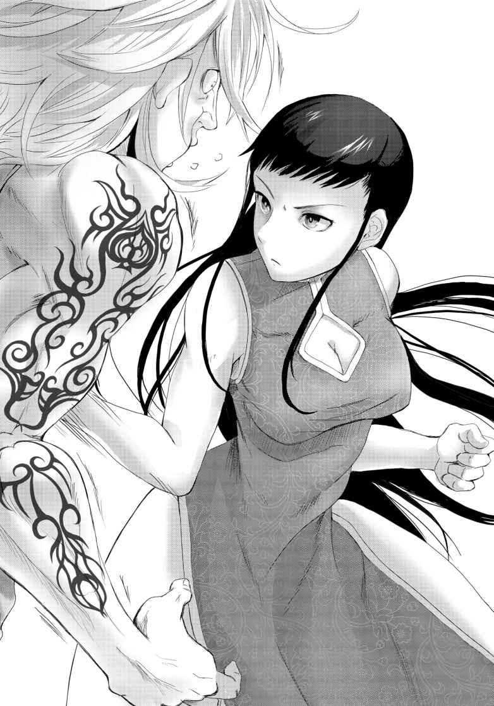
床を転げながらチャイナさん（仮）に悪態をつくロンゲ（仮）だったが、ハッキリ言って何の迫力も無かった。あまりに強烈な一撃で、呂律も回らない有様だ。
その姿に呆 然 としていると、チャイナさんはメリハリありすぎるボディを揺らしながら、人懐っこい笑顔を向けてきた。
「ああ、ホンマはあんさんがやりたかったやろうけど、堪忍な。ああいう男は、ウチもイケ好かんねや」
「あ、いや、その、ありが......」
「ぶっ殺すぞコラァ！」
お礼を言いかけると、立ち上がったロンゲがチャイナさんに飛び掛ってきた！
「危ないっ！」
「破ッ！」
俺の声など関係なしに、チャイナさんは冷静にロンゲの腕をいなし、何がどうなったのかよくわからないが、次の瞬間にはロンゲは床でチャイナさんに組み敷かれていた。
「ホンマ、つまらん男やな。さっきの一発でウチには敵わんとわからんかったんか？」
「ざけんなっ、女如きに俺が負けるわけがイデデデデデ！」
「じゃあ、女如きに腕ェへし折られるアンタは、それ以下のクズっちゅーことやな」
「折っ!? ま、待て！ 悪かった！ 俺が悪かった！」
「その気も無い謝罪なんざいらんわ」
「頼む、許してくれ！ 何でもする、あんたの言うことは何でも聞くからさ！ なっ、頼むよ！」
「フン」
一つ冷笑を投げてから、チャイナさんはロンゲから手を離した。両腕をさすりながら立ち上がったロンゲは、薄気味悪い愛想笑いをチャイナさんに向ける。
「へへ、アンタ強ぇんだな」
「まぁな。ウチ、太極拳の達人やもん」
自分で自分を達人って言う人を初めて見たが、さらりと言ってのける辺り、本当に達人なんだろう。その腕前は既に目の当たりにしたわけで。
「そういう事は先に言ってくれよな。へへ」
そしてコイツは、本当にクソ野郎のようだった。俺に対しては前触れもなく暴力を振るったくせに、自分より強いとわかった相手には媚びへつらう。
出会ったばかりなのに断言できるが、コイツとは一生仲良くなれそうもない。
『ゲームのルールを説明いたします』
この騒ぎを無視して再びエントランスにアナウンスが響き渡り、皆一様に押し黙る。
『皆さんが参加する《人類絶滅感染ゲーム》は、その名の通り、人類の存亡を懸けたゲームです。皆さんは、所属の地域代表として招 聘 されています。その地域全人口の命運と、自らの命を懸けてゲームに臨んでください。敗北者と、その所属地域は《殺処分》の対象となります』
淡々と、抑揚の無い声で告げられていく一つ一つが、俺達の心を戦慄させていった。
人類の存亡？
代表地域の人々の命運？
敗北したら《殺処分》？
ゲームとは名ばかりで、聞こえてくる言葉には遊びの要素は何も感じられなかった。
周囲の誰もが皆、言葉と顔色を失い呆然としていた。
ただ一人、手帳にペンを走らせる銀髪の少女を除いて。
「シルヴィア」
俺の声に、シルヴィアはペンを止める。
「どんな些 細 な事にもヒントはあるかもしれないカラ」
「怖くないのか？」
「......怖いワ。でも、恐怖に負けて真実を逃してしまうのはもっと怖いモノ」
そう言って、シルヴィアは再び手帳へと目を落とした。これからアナウンスされる言葉を、一字一句逃さずに書き留めるつもりなのだろう。
真希は女優だった。ユキナは冒険家。チャイナさんは太極拳の達人。ロンゲはクソ野郎。ならばきっと、シルヴィアはＦＢＩとか、探偵なのではないだろうか？ 服装からして、まさにそれっぽいし。
絶望的な状況だけど、隣の銀髪ホームズが何だか心強く思えてきた。
『ルールを説明します』
いよいよ、本題、最も大事な点を説明するようだった。俺も手帳こそ持っていないが、頭のノートにしっかり書き留めようと耳を澄ます。
『若き紳士、そして淑女諸君。はじめまして。そしてこんにちは。私の名前は《救済のゲームマスター》だ。親しみやすく、略してＧＭと呼んでくれて構わない』
「......は？」
身構えるこちらの意に反し、流れてきたのは何とも飄 々 とした男の声だった。ボイスチェンジャーのようなものを使用しているのか、肉声らしさは無かったが、先ほどまでの機械音とはまるで違う響きがある。
シルヴィアも意表を突かれたのか、目をぱちくりとさせている。
『これから諸君達に参加してもらう《人類絶滅感染ゲーム》のルール説明と進行をさせて頂く。以後、お見知りおきを。さて、モニターを見てくれたまえ』
その言葉と同時に、消えていた大型モニターが明るくなる。
俺もまた、真希の変わり果てた姿を見る事になるのかと内心は怖かったのだが、その心配は杞憂に終わり、画面には別のものが現れた。いかにもジェントルマンとでも表現すれば良いのだろうか、それらしい口ひげを蓄え、シルクハットを被った男が一人。
「ふざけてんのか、テメー！」
ロンゲが声を荒げる。
『どうやら私を気に入って頂けたようだね。改めてよろしく、諸君。私がこのゲームの管理、運営を取り仕切る。さて、どうやら君達はまだお互いの立場を知らないようだ。まずは自己紹介すべきではないのかね？』
「そんな必要は無いわ。早くゲームのルールとやらを説明しなさいな」
金髪の言葉に、ＭＧの反応は無い。
さらに二言三言悪態をついたが、結果は同じだった。
その様子を冷静に窺っていた参加者の一人が俺達の前に進み出た。眼鏡が知的な印象の......仮にアジアンビューティーさんとしておこう。
「どうやら、自己紹介をしないと話を進めてくれないようですね......。今は楽しい気分ではありませんが、ここはお互いを知り合う必要もあるのではないでしょうか？」
アジアンビューティーさんの意見に、周囲から反論の声は上がらなかった。金髪だけが「フン！」とそっぽを向いていしまったが、明確に反対しているわけでもない。
勿論、俺も反対する理由は無いし、シルヴィアとユキナも、それぞれ小さく頷いた。
「では、僭 越 ですがわたくしから。わたくしはシャーナ＝イシュマル。インドの出身です。年齢は17 歳、日本のハイスクールで言うならば高校二年生になります。討論会へは日本で起業している、という事で招待されました」
「あ、ウチ知ってるで。若き天才プログラマー、シャーナ＝イシュマル。ちっちゃい頃に作ったアプリがバカ売れして、今じゃ大企業の若き女社長！ って話やったな」
チャイナ服を着た女の子が興味津々といった目を向ける。彼女は自己紹介まで仮にチャイナさんとしておこう。
「天才とか、大企業、なんて言われるのは恐縮ですが......。概ねその通りです。日本はよきビジネスパートナーです」
チャイナさんの言葉に、シャーナさんはあくまで謙虚な姿勢を崩さない。とても17 歳とは思えない大人っぽさは、やっぱりビジネスの経験がそうさせるのかな。
俺なんかには雲の上みたいな人なんだけど、それでもこういう謙虚な人っているんだなぁと妙に感心した。
「ふぅーん。インドかぁ。僕はまだ足を運んだことは無いけれど、多くの日本人が足を踏み入れては大きなカルチャーショックを受けた、という話を聞くね。僕も、いつかは訪れてみたいな。得るものがあるかもしれない」
「うぉっ！」
真後ろから突然発せられた声に驚くと、そこには絵の具（だと思う）だらけの白衣を纏 い、視線を宙に漂わせながら何やら呟 いている男の姿があった。
頰にも絵の具がついているこの仮称・エノグくんは、悔しいが美少年だった。汚れた顔も衣服も、何ら問題ないイケてるメンズっぷりだった。
「あ、驚かせてしまったかい？ ごめんよ。悪気は無かったんだ」
本当に悪いとは思ってなさそうな笑顔を浮かべつつ、エノグくんは皆の前に進み出る。
「僕は呉 羽 貴 志 。高校一年生。と言っても、もう日本の学校には籍はないけどね」
「存じ上げています、ミスター呉羽。いえ、『一期一会の芸術家 』。貴方の描く素晴らしい絵画、わたくしのオフィスにも欲しいと常々思っておりましたから」
「あはは、会うと皆そんなこと言うんだよ。実際に買ってくれたら、その言葉信じるけどね」
「えっと、君は......画家なのか？」
俺も思わず声をかけてしまった。
正直、さっきからオフィスだの絵画だのとオン・ザ・スモッグ な話ばっかりなんだけど、同じ歳という所は親しみを覚えたのだ。
あのロンゲのクソ野郎を抜きにすると、これまたガラの悪そうな向こうのドレッドくんと比べれば仲良くなれそうな気がした、というのもある。
「うん、そうだよ。小学校を卒業してからもうずっとパリとかウィーンとか、向こうで暮らして絵を描き続けてる」
「〝わん・おふ・あーてぃすと〟ってのは？」
「ご存じありませんか？ 彼は今世界で最も注目されている画家の一人ですよ？ 一度描いた対象や、同じシュチェーションの絵は二度とは描かない事から『一期一会の芸術家』と呼ばれるのですよ」
「そうなんですか......」
代わりにシャーナさんが説明してくれたが、どうにも遠い世界の話過ぎてピンとこない。絵なんか学校の美術の時間でしか描いたこと無い身だし。
そんな俺の間抜けな顔が面白かったのか、貴志は少し笑うと、「君は、あまり僕のインスピレーションを刺激してくれなさそうだね」などと、のたまった。
「平凡で悪かったな」
「はは、ごめんよ。僕は絵に関係の無い事にはどうにも無頓着なんでね。悪い癖だとは思うんだけど」
直すつもりは無いし、君は絵に関係ない、と言っているのだろう。
実際、貴志は俺にも周囲にも興味なさそうに、再び何か呟き始めた。
どうやらこの会場に仲良くなれそうな男子はいないっぽいな......。
「んじゃー、次はウチかな。ウチは王美花 。父親が中国人の、ハーフやな。日本には留学っちゅー形で来てる。特技はさっきも見せた通りの......」
そこまで言うと、美花さんはフッ！ と一息、横に突っ立っていたロンゲに再び当て身をかまして吹き飛ばした。
情けなく吹き飛ばされるロンゲ。ざまーみろだ。
「太極拳の達人や。頼りにしてくれてええで。特に女子は、そこのアホウ含め、男どもが変な気ィ起こさんようにも、な」
「な、なにしやが......いや、なにするんすか、姐さん」
「はぁ？ アンタに姐さん呼ばわりされるスジは無いわ」
「まぁそう言わないで下さいよ。......っに見てんだコラァ!? 」
俺の視線に気付いたのか、声を荒げるロンゲだったが、直後に美花さんに睨まれて再び小さくなった。
とことん卑屈な野郎だな、オイ。
「それだけじゃないんじゃねーの？」
「なんや、藪 から棒に。何も喋 らんから、鳥の巣かと思ったわ」
「なっ！ お、俺の自慢のヘアスタイルをバカにすんのか!? 」
ずっと沈黙していたドレッドが、ここにきて始めて口を開いた。
そして早速美花さんにコケにされている。
確かに美花さんは素敵すぎるバストといい、俺も姐さんって呼びたくなってきた。仲良くなれたら心強そうだし。
「ふん、俺は知ってんぞ。あんた、中国の偉いさんの娘なんだろ？ それも、裏社会の......」
そこまで言いかけ、ドレッドは口をつぐんだ。
美花さんが先ほどまでの愛想良い笑顔が噓 だったかのように、凶暴そのものと言った形相でドレッドの首根っこを締め上げていたのだ。
「次、アンタが自己紹介。な？」
凄みのある声に、ドレッドは青ざめながら首をこれ以上ないほど早く縦に振った。
美花さんが力を緩め、ドレッドを放した時は既に元の人の好い笑顔に戻っていた。
前言撤回。やっぱり仲良くなれなくてもいいや。
「な、南米代表、ブラジル出身のカルロス＝コインブラだ......。18 歳は、日本の高校三年って事か。サッカーのワールドユース代表にも選ばれてる」
そこまで聞いて、俺も思い出していた。
サッカーに詳しくなくても、将来のブラジル代表の背番号10 を確実視されている天才選手がいる、というのはサッカー部のダチに聞いたことがある。ダチの部屋にはポスターも貼ってあったのだが、ユニフォーム姿と印象が違いすぎて気付かなかった。
黙って自己紹介を聞いていた金髪が、何かを思い出したのか口を開く。
「アナタの父親は確か......」
「ああ、そうさ。俺のパパはＪリーグに十年以上在籍していた。だから俺も日本で生まれて日本で育った。パパの引退と同時に、俺もブラジルへ戻ったのさ」
「フン。日本でプレイしていたなんて、レベルの低い選手だったようですわね」
「チッ、それは否定しねぇよ。だから俺はブラジル代表になる。こんな極東の島国でやるサッカーなんか、玉遊びでしかねぇよ」
何か言い返したいが、サッカーど素人の俺が口を挟める問題じゃない気がする。
次のＷ杯で是非、世界を驚かせてくれ日本代表。
「そういうアンタは、どうなんだ？ 《幻想の金ペア》の娘だろ。代表権利欲しさに弱小国に帰化して出たオリンピックで、他のペアの自滅で金メダル獲ったんだよな」
カルロスの見下した言い方に、金髪は驚くべき反応を見せた。
その白い肌を真っ赤に紅潮させるや、カルロスの頰を無言で張り倒したのだ。
つーか、なんかさっきから男性陣殴られてばっかりだな......。俺も気を付けよう。
「二度と口にしないで！ ワタシは、あんな卑怯者どもとは違うわ！」
「て、テメェ......！」
殺気走った目を金髪に向けるカルロスだったが、その勢いはすぐにトーンダウンした。
二人の間に入るように、美花さんが立ったからだ。
「......チッ！」
吐き捨てるような舌打ちをして、カルロスは下がった。
美花さんが金髪に向き直り、自己紹介を促す。金髪は「余計なことをしないでくださる？」とだけ言うと、長い金髪をかき上げて俺達の方へと向き直った。
「ロシア出身、ノンナ＝セルゲイヴィッチ。16 歳。高校一年生。以上ですわ」
「それだけ？」
俺は思わず口を挟んだ。
「......他に何があると言うのかしら？」
「い、いや、得意分野とか、日本との関わりとか」
「私を知らないなんて、そもそも常識に欠ける、と言わざるをえませんわ。それに、日本との関わりなんて吐き気がする質問しないでくださる？」
「吐き気って......そんなに日本が嫌いなのか？」
「大嫌いですわ」
断言しやがった。
日本が世界中から好かれている国だとは思ってないけど、こうまでハッキリと日本が嫌いだと言い切る外人に会うのは初めての経験だ。
何だか変えようも無い自分の根っこの部分を否定されているようで、胸の奥がモヤモヤする。
「......セルゲイヴィッチ、ではなく、星 城 原 なのではなくテ？」
発言したのはシルヴィアだった。
ペンを走らせる手帳から視線を変えないまま、ノンナに疑問を投げかける。
その態度がノンナの神経を逆撫 でしたのか、凄みのある声が反響する。
「......私の姓はセルゲイヴィッチ。そんな汚らわしい姓ではないわ」
「そウ。私が見たフィギュアスケートの選手権では、星城原と紹介されていたかラ」
ノンナに睨み付けられながら平然としているシルヴィアに、俺は浮かんだ疑問をなるべく小声で尋ねる。
「フィギュアスケート？」
「えエ。彼女はフィギュアスケート界の若き女王と呼ばれている天才スケーター。シニアの世界大会でも優勝を重ね、次のオリンピックでは金メダルを確実視されているワ。常識、とまでは言わないけれど、全く知らないというのは少し呆 れるわネ」
「そ、そうなのか？」
助け舟を求めてユキナを見ると、苦笑いしている。馬鹿にしたような薄笑いの男達の中で、貴志だけは興味が無い様子だった。
「そうなのか......」
そういえば真希にも、少しは新聞とか読めと言われてたっけかな......。
今さらだけど、ここを出たらそうするよ、真希。
黙った俺に、ノンナは「フン」と鼻息荒くそっぽを向いてしまった。
どちらにせよ、これ以上は話すつもりもないらしい。
「さぁ、じゃあ次はこの馬鹿に自己紹介させよか」
「へへ、了解っす」
完全に姉御と舎弟の関係と化している美花さんとロンゲ。
ロンゲは美花さんを背に俺達へと向き直ると、急に顔を変えて高圧的な態度を取り始めた。
自己紹介されるまでも無い。コイツは、本当にクソ野郎だ。
「俺様は三 峰 海 洋 。18 歳だ。高三だと言いたいトコだが、ま、高校なんてつまんねーとこ、入学してソッコー教師をボコって辞めてやったけどな」
聞かれてもいない武勇伝を語り始める三峰。
本人的には腕っぷしの強さをアピールしているつもりなんだろうが、さっきから美花さんに吹っ飛ばされている姿しか見ていないせいか、滑稽という他無い。
周囲の反応も俺と似たり寄ったりで、ノンナ、シャーナさんなどはあからさまな嫌悪感を表情に出していた。
俺の隣で手帳にペンを走らせているシルヴィアも、心なしか筆の動きが鈍い。こんな奴の発言に書き留めることなどないんだろう。
「この討論会に俺様が呼ばれた功績は、やっぱあれだな。反捕鯨活動家としての活躍だな。名前の通り、海のために日夜戦ってんのよ、俺様は」
（はんほげー？）
三峰に質問したくない俺は、シルヴィアに極力小さな声で尋ねた。俺の中でシルヴィアは既に、色んな事を知っていて、疑問に答えてくれる正に姿通りの探偵さんとなっている。
（反捕鯨活動。アナタ、捕鯨国の人なのニ知らないノ？ クジラやイルカなど海洋性哺乳類への漁を妨害する活動ヨ。それも、かなり過激な方法デ）
軽く馬鹿扱いされた気がするけど、答えてくれたんだから流そう。
（過激って？）
（船に攻撃して沈めたりネ）
（それって犯罪じゃないのか？）
（思想や理想があれば、賛同者が出ル。そして、賛同者の中に権力者がいたラ？）
シルヴィアの答えは、あくまでも俺向けの解説だった。口ぶりからも、その活動そのものには興味が無いらしい。
（はぁ......。じゃあ何か？ アイツは鯨やイルカを守ってるってのか？ そんな奴には見えないけど）
（人を見かけだけで判断するのは、最も初歩的なミスに繫 がル。けど、正直、同感ネ）
心の底から意外な気持ちで三峰を見つめていると、同じ感想を抱いていたのか美花さんが率直な疑問をぶつけた。
「アンタ、海の生き物を大事にしようってタマじゃないやろ。何でそんな活動してるん？」
「こっちにいりゃあ、銃ぶっ放そうが、船沈めようが、人間を半殺しにしようが、罪にならねーんだぜ？ 何の研究になんだか知らねーけどよ。偉そうにホゲーだなんだ言ってるボケどもの船に風穴開けてよ。んで、殺しても『海の生き物を無駄に殺す悪党どもを駆除しました』って言っとけば罪にならねーっつーんだから、良いとこだぜ、南の島はよ♪」
ギャハハハ、と笑い始めた三峰の姿に、俺は本気で吐き気を催した。
こんな奴と討論させられることになっていたなんて、真希が可哀想だ。
真希が殺されて、こんな奴が今生きている理不尽さに、俺は目眩 すら覚えた。
「アンタ、ほんまにクズやな」
呆れ返った美花さんの言葉に、三峰はへらへらと薄気味悪い愛想笑いを浮かべていた。
三峰の自己紹介で場の空気が最悪になった中、ユキナが進み出た。
「My name is Yukina Tobide」
ぺこりとお辞儀をすると、俺にしたのと同じように英語で名乗り、そのまま英語で何かを話し終えると、シルヴィアに向かって申し訳なさそうに小さく頭を下げた。
シルヴィアは一つ溜 め息をつくと手帳を閉じてコートの内ポケットへしまい、ユキナの横へ移動した。
「彼女の通訳をする前に一つ確認しておきたいけれド、この中でＥｎｇｌｉｓｈがわかる人は何人かしラ？」
シルヴィアの質問に、シャーナさんが「少しなら」と（おそらく）謙遜して返し、ノンナが「当然のスキルですわ」と偉そうに応えた。他は、俺を含めて全員が沈黙。
三峰は兎に角、意外に思った貴志に素朴な疑問をぶつけてみる。
「貴志はヨーロッパで活動してるんだろ？ 英語話せないと困るんじゃないのか？」
「んー。英語話せなくても絵は描けるよ？」
全くもって、期待通りと言うか、予想通りの返答だった。
でも、それでいいんだろうか？ 芸術家ってのはわからない。
「把握したワ」
再び、今度はあからさまに溜め息をつく。
通訳する羽目になった事と、周囲の英語力の低さのどちらにより落胆したのかは、その表情からは読み取れないが。
「彼女の名前は飛瀬往南。17 歳の高校二年生だそうヨ。アフリカ代表ネ。お父様の活動拠点がアフリカ大陸の探検みたいだかラ」
おそらく先ほど往南が話していたことを伝えているのだろう。
周囲からは「飛瀬往也の娘？」などと、さっき俺がしていたのと同じような反応が聞こえてきた。
それらに往南は、少し苦笑いしながら頷いている。親の話を持ち出されるのが苦手なのかな？ ノンナみたいに。
「フン、つまりは偉大な父親の七光りで呼ばれた、ということかしら？」
発言者は確認するまでもなく、ノンナだった。
何が気に入らないのか、明らかに不愉快そうな顔つきで往南を見下している。
その高圧的な態度と言葉に、往南は明らかにショックを受けて、うつむいてしまった。
そんな往南に、ノンナは暴言を続ける。
「若き冒険家だなんて、実際は父親にくっついているだけなのではなくて？ いつでも親に守って貰 って、それで活躍していると思われるなんて、幸せですわね」
「おい、そんな言い方しなくてもいいだろ！ つーか、それお前の勝手な妄想だろうが！ 往南が何もしてないみたいな......」
「......何故あなたが彼女を庇 うのかしら？ 今さっき出会ったばかりでしょう？ あなたこそ、彼女の何がわかっていると言うの？」
「そ、それは......」
黙っていられずに口を挟んだ俺に対し、ノンナは怒りの矛先を変えてきた。腕を組み、まさに仁王立ちの様子で俺を睨みつける。
ここで退くわけにはいかないと俺が応戦しようとすると、往南に腕を強く引っ張られた。うつむいたまま激しく首を左右に振る。
「でもよ！ こんな言われたままで......」
「イイ、カラ。ナレ......テル、カラ」
そう囁 く往南の見え見えの作り笑顔。
きっと、こんな経験が何度もあったのかもしれない。
「アナタのご両親へのコンプレックスを人にぶつけないでくれるかしラ、星城原さン？」
シルヴィアだった。
「なん......ですって？」
「アナタがご両親の《幻想の金ペア》に対してどのような感情を抱いていようと勝手だけれど、それを闇雲に発散させるのは、非常識だと言っているのヨ」
「その名を口にするなっ！」
激 昂 したノンナの平手打ちが、今度もシルヴィアの頰にヒット──はしなかった。
すんでのところでシルヴィアは左手でガードし、そのままノンナの手首を摑 む。
「次は、ワタシの自己紹介をしていいかしラ？」
「......フン！ 勝手にすればいいわ！」
乱暴に手を振りほどくと、ノンナは俺達から離れた所に立った。まさに人を殺しそうな目線で睨むその先は......往南？
「往南の何がそんなに気に食わないんだ、あいつは......」
俺は、腕にしがみついて、ますます怯えている往南の頭を撫でていた。
って、あれ？ 背が小さいから思わずこんなことしちゃったけど、往南って俺より年上だったような......。
恐る恐る目をやると、小さく「アリガトウ」と言ってくれた。
そんな俺達を、ノンナはますます険しい表情で見つめていた。
少しざわついた中を、シルヴィアが進み出る。
「ワタシの名前はシルヴィア＝ノーマン、16 歳、アメリカから来ているから北米代表、という事になるワ」
「アメリカ？ イギリスやなくて？」
美花さんが率直な疑問を口にした。
シルヴィアの全身を包むのは季節はずれを通り越したシャーローック・ホームズ・スタイル、もはやコスプレの域、なのだ。
イギリス代表と言われた方がしっくりくるし、誰もがそう思っていたのだろう。
「父の仕事の関係でずっとアメリカにいたかラ。でも、父は日本人で、母はイギリス人、生まれは日本だから国籍も日本。その意味では、確かに北米代表と呼ばれてもあまり実感はないワ。でも、同じような立場の人は他にもいると思うケド」
「僕もそうですからね」
珍しく興味を示して話を聞いていたのか、応えたのは貴志だった。確かに、貴志はパリに留学しているから欧州代表なだけで、中身は純粋な日本人なのだ。
「それもそっか。で、何で呼ばれたん？」
納得した様子の美花さんがもう一つ質問を重ねると、今度はシルヴィアが少し戸惑った表情をしたように見えた。
「それは......見ての通りヨ」
「ふーん、探偵ってことかぁ。それとも、世界有数のシャーロック・ホームズ・ファンやったり？」
「そう、母が重度のシャーロキアンだったノ。ワタシもその影響をとても受けていル。そういうコト」
（何か、奥歯にモノが挟まったような言い方なんだよな......）
噓はついてない。けど、大事なことは話していないような、シルヴィアの言葉から俺はそんな印象を受けた。何が大事なのかはわからないけれど。
「アナタで最後ヨ」
「へっ？ 俺？」
「そウ。アナタも参加者なのヨ」
「......そうか」
言われて改めて気が付いた。
本来、俺はここにいるべきで無い人間で、ここには真希がいるはずだった。
だけど、真希は既に......。
そして、俺は今、ここにいる。
真希の代わりに《人類絶滅感染ゲーム》とやらに参加しなくちゃいけないんだ。
「わかった」
俺は、全員を見渡せる場所へと進み出た。
「俺は涌井勇人。16 歳の高校一年生。今、話しておかないといけない事がある」
そう告げると、俺はポケットから招待状、真希の名前が記されたＩＤカードを取り出し、頭上に掲げた。
「この招待状は俺のものじゃない。俺の幼馴染み、瑠河真希に送られてきたものなんだ」
俺の言葉に場が少しどよめく。シャーナさんが挙手して発言を求めた。
「では、あなたは正規の参加者ではない、ということなのですね？」
「そうです。当然、皆のような特技とか活躍した分野とか、そういうのは全く無いです......」
「あなたの幼馴染みの、本来の参加者であった真希さんと言うのは、女優の瑠河真希さんのことかしら？」
「はい......」
シャーナさんの口から真希の名前が出た事に、ふと涙が出そうになった。
アイツ、やっぱり凄い奴だったんだな。こんな風に、会ったことも無い人でも真希のことを知っているのだから。
「その、真希さんはどうしたのでしょうか？」
「......上まで一緒に来たけど、まだ外に......」
それ以上は口に出来なかったし、したくなかった。
シャーナさんも察してくれたのか「ごめんなさい」と一言謝ると、改めて話の内容を切り変えた。
「経緯はともかく、ここにいるのは本来の参加者ではない涌井くんなのは事実。でも、ここにいる。参加資格は持っていると見なされるのでしょうか」
「俺も気になってました。このまま、居て良いのかって」
「その辺りはどうなるのかしら、ＧＭさん？」
シャーナさんが天井へと声をかける。
俺も固唾を呑 んで反応を待った。
実際の参加者じゃないので無条件で失格、と言われてしまう可能性はゼロではないし、そうなった場合、国や地域の生存を賭けてということだから、ろくな事になりそうもない。
隠したとしてもＧＭは既に承知だろうし、それより後でみんなにバレた時が気持ち悪い。美花さんなどには絶対にしばかれる。
それでも、内心はやはり冷や冷やものだった。背中を冷たい汗が伝っていくのがよくわかる。
が、待っていてもＧＭからは何の反応も無かった。
長い沈黙に耐えられないらしいカルロスが口を開いた。
「まぁ、何も言わないって事は、参加ＯＫなんじゃないのか？ ファウルもレフェリーが見てなきゃＯＫなのと同じでよ」
「それは論点がずれていますが、実際にＧＭが何も言わない以上、涌井くんが参加者なんでしょう。日本代表の代理としてね」
「シャーナさん、ありがとうございます」
「いーや、俺は賛成できねぇな！」
ホッとして頭を下げたところに横 槍 が入る。
「......三峰」
「ああん？ 三峰さん、だろ、三峰さん！ 年長者様に向かってナメた口利いてんじゃねぇぞ、コラ」
そういえばコイツ、俺より年上だったな。全く敬う気になれねーけど。
そんな俺達のやり取りに、シャーナさんが口を挟む。
「信用できない、とは？」
「あーん？ ちょっと考えりゃわかんだろ、メガネちゃんよ。こんな場所に『本当の参加者じゃない』奴が紛れ込んでるだけでも超怪しいじゃねーか。それに、その真希っつーたか？ その女と一緒に来たなんて誰が証明すんだよ。大方、外でその女をヤッちまって、カード盗んでここに逃げ込んできたとか、そんなんじゃねーのか？」
「てめぇっ！」
今度こそ、限界だった。
俺は我を忘れて殴りかかった。
が、その手はあっさりと三峰に阻止され、逆にねじり上げられる。
「図星突かれて逆ギレか？ その真希ちゃんてのは美味かったのかよ？ んで、証拠隠滅に外の連中皆殺しにして、ここでわけわかんねーゲーム始めたのかよ？ キモいんだよ、クソが」
ギャハハと下品な笑いを俺に浴びせかける。
俺は悔しくて悔しくて頭がどうにかなりそうだった。
「ほら、吐けよ。あ？ このまま腕へし折ってやろうか？ それとも、殺してやろうか？ 今ならテメーをぶっ殺した所で罪にもなんねーだろうしなぁ。罪にならない人殺しできるなんざ、楽しすぎてイッちまいそうだわ」
「ぐ、はな、せ......」
「あ、やっぱ死刑だな。犯人確定だわ。まずはこのまま腕へし折ってやんよ！」
「あぐ、あっ」
『やぁ、自己紹介は済んだようだね。では、改めてゲームの説明に入ろう。準備はいいかい？ とても大事なことだけれど、二度は言わないからよーく聞いてくれたまえよ』
突如、《救済のゲームマスター》の声がモニターから響き渡った。
俺を締め上げている三峰の顔に困惑が混じる。
「おい、なんだよ、お前がゲームマスターじゃねーのかよ！ おいコラ、この胸くそワリィ声を止めやがれ！」
俺は必死に首を振った。
止められるものなら止めている。だが俺は、《救済のゲームマスター》ではない。
「三峰、離したれや」
「でも、姐さん！ 姐さんがコイツを怪しいって......」
そこまで言いかけた三峰が美花さんに殴られて吹っ飛んだ。
「余計なこと言うなや、このボケ」
「す、すんません......」
三峰に毒づくと美花さんはチャイナ服を翻して俺に向き直った。
「ごめんなぁ、涌井くん。あのバカが乱暴してたんに、すぐに止めんで」
「......いえ。最初に殴りかかったのは俺ですから」
「堪忍なぁ」
人の良さそうな笑顔を浮かべながら美花さんが差し伸べてくれた手を、俺は摑まずに立ち上がった。
「ダイ、ジョウブ？」
「ああ、うん。大丈夫だよ」
心配そうに声をかけてくれた往南に、俺は精一杯強がって返事をする。
腕の痛み以上に、真希を侮辱されたままなのがたまらなかった。
「無理はしないデ。そのアナタの幼馴染みのためにモ」
シルヴィアの遠慮がちな声に俺は小さく頷き、一つ呼吸を置いて、モニターへと目を向けた。
濡 れ衣を晴らすためにも、一言一句でも聞き逃すものかと。
『では、ルールを発表するよ──このゲームの名称は《人類絶滅感染ゲーム》。目的は読んで字の如く、人類を絶滅させることだ。そして君達はそれを阻止する為にゲームに参加する、いわば人類の救世主とでも言うべき存在といったところかな』
淡々と語られ始めた内容は、衝撃的で、ろくでもないものだった。目的が人類の絶滅っていう時点でどうかしている。
『ゲームが楽しみで言葉も出ないかな？ さて、肝心のゲームにはタブレットを使用する。君達のうち、何人かは既に持っているかもしれないね』
そう言って、モニターの映像がタブレットに切り替る。
シャーナさんと美花さんが、同じものを取り出していた。
「割り当てられていた部屋に置いてありました。名前も書かれていたので、討論会で使用するものだと思って持ってました」
「ウチも同じく、や」
そう言ってタブレットの裏面を二人は見せてくれた。確かに、それぞれに二人のイニシャルが書き込まれている。
おそらく、他のメンバーのものも用意されているのだろう。
『そして、タブレットとは別に、この《ウィルスカード》と《ワクチンカード》を５枚ずつ配布する。ゲームでは必ずカードとタブレットを使用するから、決して無くさないように』
今度はモニターにそれぞれ、〝ウィルス〟、〝ワクチン〟と書かれたカードが映し出された。どちらも、サイズはトランプと同じようなもので、割と普通の紙のように見える。
『君達はこの二種類のカードを駆使して、戦う事になる。戦い、と言っても至って簡単。ウィルスは他人に、ワクチンは自分または他人にセットするだけだ。ウィルスをセットされると、その枚数分はウィルスが増える。ただし、ワクチンをセットすると、セットされたのと同数のウィルスは相殺されて消滅する。簡単なゲームだろう？ ただ、注意して欲しいのはワクチンはセットしないと効果は発揮しない。たとえ十枚持っていても、セットしなければウィルスは相殺されずに全て自分の手持ちになってしまうから気をつけてくれたまえ』
「へっ、くだらねー。んだそのクソつまらなさそうなゲームは。やってられっかよ」
『気に入って頂けたようで、何よりだよ』
三峰が毒づいても、ＧＭが意に介す様子はない。
『さて、肝心の勝敗の決し方だが、君たち、もしくは僕にとっての勝利条件には、ウィルスカードの枚数がとても重要になる。何故かって？ まず、ウィルスカードが10 枚になったプレイヤーは、《発病者》となって《殺処分》されてしまうからね。忘れないでくれたまえ』
「......は？」
今の声は、誰があげたのだろうか？
俺ではない、と言いたいが、もしかしたら無意識に声を出していたのかもしれない。
それくらいに、ＧＭの言葉はまさに爆弾のような衝撃を俺達に与えた。
横でルールを書き留めていたシルヴィアの手もピタリと止まっている。
往南は恐怖で体を震わせていた。
シャーナさんは青ざめて絶句し、あの美花さんでさえ同じような状態になっている。
カルロスは聞こえた言葉が信じられないのか耳を叩 き、三峰は口をパクパクさせ今にも泡を吹き出しそうだ。
そんな中でも貴志は興味なさげに視線を泳がせ、ノンナは不敵な笑みを浮かべていた。
『つまり、全員が命懸けのゲームだ。スリル満点だろう？ だが、これはあくまでも《人類絶滅感染ゲーム》だ。君達が単に殺し合いを演じるだけの、つまらないサバイバルゲームに成り下がっては何の意味も面白味もない。何より人類の絶滅か、生存かを賭けることで、これ以上真剣になれるゲームはないはずだ。そこで、だ。君達は世界各地域の代表と言うべき学生たちだ。その代表が敗北したということは、その地域そのものが生存を賭けたゲームに敗北したと見なす。よって、《殺処分》された敗者の代表地域には、新型の殺人ウィルスが散布され、殺処分が実行される。つまり、君達が全滅してしまったら、地球上全てに殺人ウィルスがバラ撒かれてしまうわけだ。まさしく《人類絶滅感染ゲーム》だろう？』
今度こそ、俺達はどれほど追い込まれ、どれほどに絶望的なのかを思い知った。
たった二種類のカードを使って行われる、簡単極まりないゲームの結果によって、何百万、いや下手をしたら何千万、何億という人間の命が危険にさらされてしまうのだ。
もはや誰一人として言葉を発さず、微動だしない。
俺にもシルヴィアや往南を気遣う余裕など、全く無かった。ただただ戦慄することしかできなかった。
『明日から毎朝九時、《感染ＨＲ 》を行う。ＨＲと言えば朝だからね。場所はエントランスの隣にある討論会会場となるはずだった部屋を《ＨＲ教室》とする。ただし、会場には時間にならないと入れないから、注意したまえ。元々の討論会用のシステムだ。その会場を利用して、君達はゲームを行う。勿論、協力して皆で生き残る道を模索するのも、気に食わない奴と国を蹴落として自分が生き残る確率を上げるのも自由だ。当然、敗北した参加者が持っていたウィルスカードは使われなくなる。その分、生存率は上がると言っても良い』
それは悪魔の囁きのようだった。
誰かを殺せば、どこかの国を滅ぼせば、自分と自分の国が守りやすくなると、ＧＭはそう言っているのだ。
『参加拒否は不可能。出席しなかった参加者は、ゲームに敗北したものとみなされるので、くれぐれも開始時間には注意して欲しい。ゲームは討論会が予定されていた六日間に、計五回行う。その期間が終わると出口のロックは解除され、勝者は地上へ帰る事が出来るようになる』
「ちょ、ちょっと待ちや。外の連中もその新型殺人ウィルスとかで殺したんやろ。それやったら地上に出たってすぐ死ぬやないか！」
声を荒げた美花さんの問いかけに、少しだけ間を置いてＧＭの声が返ってきた。
『いや、外の連中はウィルスではなく毒ガスによる《殺処分》だ。保健所による犬猫の《殺処分》と同じだ。だから、心配ご無用。もし、日本代表が敗北してこの辺りにもウィルスが散布された時は、しばらくシェルターで時間を潰すといい。今回使用される新型ウィルスは感染力と致死率は凄まじいが、半月もすれば空気感染が起こらない量になっている。なぜなら、感染者は皆死んでしまっているだろうからね』
心配無用、という言葉とは裏腹な内容をＧＭは淡々と語る。質問した美花さんも、どう反応したら良いのかわからないと言った顔をしていた。
俺には一つ事実だけが特別重い。
（真希は、毒ガスで殺されたのか......）
どれだけ苦しかったのだろうか。
どれ程怖かったのだろうか。
考えるだけで胸が締め付けられる。
『さて、細かいルールの説明に入ろう。《感染ＨＲ》が開始されたら席に着き、規定の時間まで何を話してもＯＫだ。協力を呼びかけるもよし、相手を騙 して陥れるのもよし。そして時間になったら、それぞれが持っているウィルスカードとワクチンカードをタブレットを使って他の参加者、もしくは自分にセットする。注意点だが、ワクチンカードはセットした先にウィルスが０の場合も、セット先で残らずに消滅してしまう。ウィルスがセットされる先を確実に読まないと、無駄打ちになってしまうからね。よーく考えて使うように』
映像に再びタブレットが現れた。タブレットの液晶にウィルスカードを当てると、セット完了、の文字が浮かび上がる。
『使ったカードはその時の席に回収用の差込口があるから、必ず入れること。また、ゲーム中、ウィルスカードは自分以外の誰かに必ず一枚以上をセットしないといけない。ワクチンカードは使わなくともかまわない。また、一度の操作でセットできる枚数制限はウィルス、ワクチン共にないが、一回にセットできる相手は一人だ。二人にセットする時は、お手数だが二回タブレットを操作してくれたまえ。なお、ルールの違反者も《殺処分》されるから十分に注意して欲しい。参加者には毎回の《感染ＨＲ》開始時にウィルスカードが３枚、ワクチンカードが２枚ずつ配布される。この配布時点でウィルスカードが10 枚を超えても負けにはならない。あくまでも、《感染ＨＲ》が終了した時点でのウィルスカードの枚数が勝敗を決する。そして《感染ＨＲ》終了時、もし、一人のプレイヤーのウィルスカードが20 枚を突破していた場合《パンデミック》が発生する。これは、厄介だよ。そこでもう一人ランダムに選択されて共に《殺処分》され、さらに残りのプレイヤーには一律５枚のウィルスカードが配布される事になっている。つまりね、一人を生贄に、他の全員が一斉にウィルスカードを注ぎ込んで、全部清算してしまうなんてことは出来ない仕組みになっている訳だ。実にスリリングなゲームだろう？』
画面のＧＭは紳士的に笑う。
これをゲームなどと、一体どの口が言うのやら、だ。
『大体こんなものかな。二度は言わなくとも、才能ある者は理解できたと思うよ。タブレットにもルールは記載されているから、各自ルールを把握しておくように。それでは若者たちよ、人類を滅亡させないようにせいぜい頑張ってくれ』
本性を現したかのようなせせら笑いがモニターから部屋中に響き渡り、ＧＭは画面から姿を消した。
エントランスには既に真っ暗な画面のモニターと、与えられた状況に絶望している九人の参加者だけが取り残される。
誰も、何もしゃべらず、一人、また一人とふらふらとエントランスを出ていく。俺もそれらに続いてエントランスを出た。
その後、どうやって部屋を見つけたのか思い出せない。真希が使うはずだった部屋を自分で探したのか、それとも誰かが案内してくれたのか、それすらわからない。
真希を殺され、人類の絶滅を懸けたゲームに参加する羽目になった。
これより下など存在しようもない最悪な状況に、ただただ絶望しながら。
＊
寝ころんだベッドから見える天井は白い。そういえば真希も白が好きだった。女優なんて煌びやかな世界に生きていながら、反面実生活はとても素朴で質素な女の子だった。
「いろんな役に染まるから、普段の自分は真っ白な無垢でいたいじゃない？」
そんなことを言っていた気がするが、ハッキリと思い出せなかった。少し違っていたような気もする。
（今度、会ったら聞いて......）
そこまで考えて、俺はその思いを頭の奥底に引っ込めた。代わりに熱いものがこみ上げてくる。
もう、真希はいない。
今でも信じられないし、信じたくない。でも、見せられた映像には真希の姿が映し出されていた。あの血だまり、そしてＧＭの言う毒ガスの散布。
何故、こんなことになってしまったんだろう？
俺が、真希のそばを離れなければ良かったのだろうか？
真希は、この討論会への参加にそんなに乗り気じゃないように見えた。
しかも会場はこんな遠くの山奥。せめてもの気晴らしに、と俺に道中の道連れを頼んだのかもしれない。その時、俺が断っていたら、真希も来なかったのではないだろうか？
そうすれば、あんな無残な死に方をすることも、こんな意味のわからないゲームに参加させられることも無かったんじゃないか。
（......ダメ、か）
ＧＭは言っていた。敗者が所属している国に、殺人ウィルスが散布される、と。
ならば、真希が来なかった時点でおそらく日本代表は敗北扱いになり、日本には殺人ウィルスが撒き散らされる。
もちろん、そんなことが本当に可能なのかって思う。
思うけど、外で殺された人たち、そしてシェルターに閉じ込められた俺たちの現状を考えれば、否定する方が難しい。
──負ければ日本が滅ぶ。
本当にそうなるかはわからない。だけど、そうなってしまうと覚悟してゲームに臨まなければならない。少なくとも、負けた本人は間違いなく殺されてしまうのだろうから。
（......でも、不思議と自分が殺されるかも、って方は思ったより怖くねぇんだよな）
こんな状況に陥ったのは、当たり前だが、生まれて初めてなので自分の気持ちすら推測するしかない。憂鬱は憂鬱だが、不思議と恐怖、というものはさほど感じていないようだった。
真希が殺されてしまったからかもしれない。
どこか捨て鉢になってるんだろうか。生きていても意味はない、なんて俺の心の奥底は考えているのかもしれない。
もちろん、父さんも母さんも妹も、俺が今こんなことに巻き込まれているなんて知らずに俺の帰りを待っているはずだ。ゲームで負ければ、家族も死ぬ。
生きる理由も、ゲームに負けられない理由もわかっている。わかってても、心と体はベッドに縫い付けられたかのように動けない。
ピーッ、ピーッ──短く鋭い音が聞こえた。
何だろうと思ったが、すぐにやんだ。
ピーッ、ともう一度。
俺はその音を梃 子 の代わりにして、重い体を無理やり持ち上げた。ベッドから立ち上がると、思っていたよりもしっかりと立つことができた。ドアの横の小さなランプが光って、また鳴った。ああ、ドアチャイムの代わりなのか。ドアの前まで行き、少しだけ警戒しながら開けた。
そこには女の子が二人、立っていた。
「シルヴィア？ それに往南も」
「ごめんなさイ、休んでいたかしラ？」
「ソーリー、ユート」
「いや、大丈夫だけど。声かけてくれれば良かったのに」
「ここのドア、防音になっているノ。さすがはシェルターということかしらネ」
「防音？ マジで？」
俺の質問に、シルヴィアよりも往南が大きくうなずいた。
「さっき、ユキナがワタシの部屋を訪ねてきたノ。その時、ノックしながら外から呼んだらしいのだけど、ワタシには何も聞こえなかったワ。今もアナタの名を呼んでみたけれど、聞こえなかったでしょウ？」
「ああ、ピーっていう音以外は何も」
外から音が聞こえてこない、という事はおそらく中の音も外には何も聞こえないのだろう。中で何か起きても外部に気付いてもらえない可能性が高いという事だ。
そんなことは無いと思いたいが、今はちょっとしたことが不安になる。
こっちの不安を察したのか、シルヴィアが話を続ける。
「部屋を順守しろというルールは無いようだから、ワタシと往南は部屋をシェアすることにしたワ」
俺が気付いたようなことを、このホームズさんが考えないわけがない。おそらくそれを察して、往南に同室を申し出たのだろう。
「シルヴィアって、本当にイイ奴だよな」
「なっ、何を言っテ......」
「ＹＥＳ！ ユート、イウトオリ！」
嬉 しそうに大きく頷く往南。
「アナタまで......。そ、そんなことよりも、涌井くん。アナタ、部屋でタブレットは確認したのかしラ？」
顔を真っ赤にしたシルヴィアが、照れ隠しに切り替えた話題は割と大事なことだった。
「いや、ゴメンまだだ。ちょっと待っててくれ、取ってくる......つか、二人とも部屋に入ってくれ。立ち話も疲れるだろ」
「お邪魔するワ」
「ゴメ、クダ、サ」
俺は二人を部屋に通した。
部屋は広めのワンルームで、ユニットバス付き。着替えや小物を入れるための最低限の家具に、ゆったりとしたセミダブルのベッドが一つ置かれている。
正直、こんな状況下でなければ、初めての一人暮らし気分を満喫していたかもしれない。
「えっと、タブレットはタブレットは......あった、これか」
最初に部屋に入った時は、そのまま倒れるようにベッドへ直行してしまったので、タブレットの確認なんかすっかり忘れていた。
いざ探してみると、それはベッド脇に置かれた小棚に置かれていた。手に取って起動する。
「俺、こういうのあんまり使ったこと無いんだよな。携帯もガラケーだし」
「ガラ、ケ？」
往南が首をかしげる。そか、海外暮らしにはピンと来ない言葉なのかもしれないな。
「ガラケーってのは......」
「そんな説明よりも、今はそのタブレットの事ヲ......」
シルヴィアが真剣な眼差しで俺のタブレットを覗 きこむ。
確かに、今はそんな場合じゃなかったな。
電源が入り起動したタブレットに、制作メーカーのロゴが写り、そのすぐ下には小さく、
「討論会参加の皆様へ、わが社の最新鋭技術を──」
などと文字が流れる。
「もしかして、これって今回のためだけに作られたのか？」
「推測でしかないけれど、これを見る限りはそうなのでしょうネ」
「はー。このシェルターといい、金かかってるんだな......」
「こんな状況になってしまっては、台無しだけれド」
「全くだな」
苦笑交じりにシルヴィアに同意した俺は、タブレットのメニュー画面に目を向けた。現在時刻がPM01:00と表示される。どうやら、数時間に感じたベッドでの惰眠は、実際には一時間ほどだったようだ。
時間を意識したせいか、グゥ、と腹が鳴る。
「悪い。こんな時でも腹って減るんだな」
「こんな時だからこそ、食べなくてはいけないワ。ユキナと食堂は見つけてきたから、後で案内すル」
「ワタシ、ゴハン、ツクル、ヨ？」
「ありがとうな」
「それより、今はここを見て欲しいノ」
シルヴィアが指を差した先には《ルール》と銘打たれたフォルダがあった。
「これ、討論会のか？」
「......開いてみればわかるワ」
少し歯切れの悪いシルヴィアの言葉は、すでに答えを言っているようなものだった。
俺は慣れない指操作でフォルダを開く。一瞬画面が暗くなって「Japanese［日本語］・English［英語］」の選択ボックスが出た。選ぶまでもない日本語。
そこには、やはり討論会のルールではなく、《救済のゲームマスター》が妙なテンションで紹介していた《人類絶滅感染ゲーム》の詳細なルールが記載されていた。
「やっぱ、こっちか......」
「ＧＭの説明をせっかくメモに取ったのだけれど、これがあるならば無駄な手間だったわネ。あんなふざけた喋りと違って、こちらはちゃんとした箇条書きだかラ。......その分、ルールの不愉快さがより際だって伝わってくるけれド」
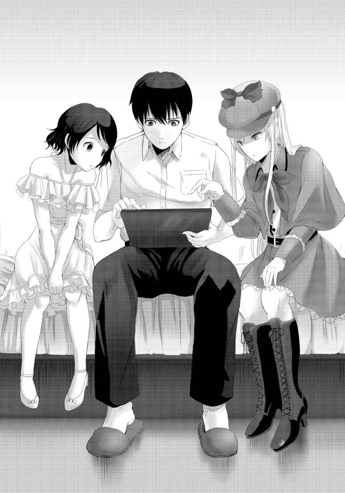
既に読み終えているのだろうシルヴィアが自嘲気味に語る。横で往南も沈んだ表情を浮かべていた。
俺もまた、タブレットへと目を落とした。
《人類絶滅感染ゲーム・ルール》
・ゲームは《感染ＨＲ》内でのみ行われる。生存者は必ず参加すること。
・ゲーム開始時の持ち札は『ウィルスカード』『ワクチンカード』が各５枚。以降、新たなゲーム開始ごとにウィルスが３枚、ワクチンが２枚配布される。手持ちのカードを他の参加者に公開してもよいが、参加者間での貸し借り及び強奪は禁止。
・ウィルスカードは、終了時刻までに他の参加者へ必ず１枚以上『セット』しなければならない。ワクチンカードの『セット』は自分、他人、枚数、全て自由。
・一回の『セット』でウィルス、ワクチン共に『セット』する枚数の上限はないが、一度の操作で『セット』できるのは一名。
・《感染ＨＲ》終了時、ウィルスカードが10 枚を超えた参加者は『発病者』となる。さらに『発病者』のウィルスカードが20 枚を超えた場合、『パンデミック』が発生。ランダムにもう一名の参加者も『発病者』となる。さらに、残りのプレイヤーにウィルスカードが５枚配布される。
・『発病者』となった時点でプレイヤーはゲーム敗退、『殺処分』される。ゲーム敗者が代表する国家・地域にはウィルスが散布される。
・ワクチンカードは『セット』することでウィルスカードを相殺する。ワクチンカードはウィルスとの相殺枚数を超えた場合でも『セット』された分は消失する。
・六日目の《感染ＨＲ》を生きて終了した者は、ゲーム勝者として解放される。
読み終えた俺は、曖昧だったゲームとルールを正確に理解し、そして再び絶望的な気分になった。
「......本当にこんなゲームやんのかよ」
「やる、と考えるしかないわネ」
「手の込んだドッキリだった、なんてないかな？」
自分でも信じていないようなことを俺は口にした。
全て冗談で、本当は真希も生きていて、こんな悪趣味なゲームもなにかのイベントで、そうだ、真希に仕掛けたドッキリかもしれない！
こうやってマジで落ち込んでいると、ハイ、ドッキリでしたー！ と、討論会中継スタッフが入ってくる──。
それは、願望と言うよりも、空想に近い。
「......残念だけど、もしそうならここにいるのはアナタではなくて真希さんのはずヨ」
「......そうだよな」
その通りだ。
真希に仕掛けるから番組になる。ドッキリならば、こちらの様子をどこかでモニターしているはずだ。本来のゲストである真希がいない状態で、開始するわけがない。
......ん？ モニター？
「そうだよ！ ＧＭってやつ、このシェルターのどっかに隠れて俺たちのこと見張っているんじゃないか!? さっきの説明だって、俺たちを見ながら喋ってたんだろうし！」
「残念だけど、それは違うワ」
興奮気味に話した俺に冷や水をかけるように、シルヴィアは静かに、だけど明確に否定した。
「先ほどのＧＭの説明、あれはライブで話されたものではなくて、予定のプログラムだワ」
「へ？」
思わず変な声を出してしまったが、シルヴィアの隣にいる往南も変な顔をしていた。
「どうして、わかるんだ？」
「こちらからの質問に不自然な時があったカラ」
「そうだったか？ ちゃんと会話していたようにも見えたけど」
「それは会話誘導。あれを聞くこちらの反応を予測してあらかじめ録音しておくノ。そんなに難しいことでもないワ」
「そうか？」
言うほど簡単な事ではない気がする。少なくとも、俺には無理だ。
「そうネ。アナタみたいな人は、こんなこと思いつきもしないでしょうネ」
「なっ！ なんだよ、その言い方！」
「ほら、怒ったでしょウ？」
「あ......」
クスリ、と口元にいたずらな笑みを浮かべるシルヴィア。
どうやら、俺は完全に引っかかってしまったらしい。
「やられたけど......なるほどって思った」
「ましてや、あんなゲームのルールを説明している時だもノ。ワタシ達の反応を予測するなんてよほど簡単な事だったハズ」
確かに、あんな話なら、みんな絶望的な表情をするだろう。俺も、皆もそうだった。
「あとは、タイミングよく再生するダケ」
「じゃあ、やっぱりＧＭはシェルターの外にいるのか？」
「イイエ」
シルヴィアはいまいましげに首を振った。
「考えてみテ。ここは、シェルター、部屋のドア一つにさえ厳重なロックと防音が施され、外部で大爆発が起きてもビクともしないような、強化構造物。もし、本格的な軍事施設として作られていれば外部からの電波干渉も受けない構造になっているハズ。事実、ワタシたちが持っている携帯端末も、外部とは連絡が取れなイ」
言われて俺は、自分が携帯電話を持っていることを思い出した。ズボンのポケットから取り出してみると確かに『圏外』と表示されている。
「じゃ、じゃあＧＭはこのシェルターの中に？」
「エエ。そして、この施設に入るためには、招待状が必要......」
そこまで言った所で、俺はシルヴィアが何を言おうとしているのか理解した。
往南もわかっているのだろう、言葉より先に小さく頷く。
俺は、自分から切り出した。
「参加者の中に、《救済のゲームマスター》がいる......？」
「......その可能性は、限りなく高いワ。そして」
シルヴィアは、一息つくと思いがけぬ言葉を言い放った。
「最も怪しいのは、アナタ。涌井くんヨ」
「なっ!? 」
「シルヴィッ！」
往南も非難の声を上げてくれたが、シルヴィアには撤回するつもりが無いようだった。冷たく、射抜くような視線で見つめてくる。
「アナタは本来の参加者ではナイ。瑠河真希さんから招待状を借りた、という話だったけれど、それを証明できるモノも無イ」
「だ、だけど、真希が殺されてるんだ！ あいつを、自分の幼馴染みを俺が殺したって言うのか!? 」
「幼馴染みというのを証明するコトできる？ 信じられなイ」
「なっ......」
「アナタの話は信 憑 性が無いものばかリ。アナタ自身を誰も証明しない。誰もアナタを知らないし、どう考えてもアナタが疑わしいノ」
「信憑性が無いってなんだよ！ 真希は間違いなく俺の幼馴染みだ！ 俺はあいつの荷物を持って...... あ！ そうだ、見てくれ。真希の荷物を先に持ってきたんだ」
「荷物？ どこニ？」
「えっと、それは...」
これで自分の証明が出来ると思ったのに、肝心の荷物がない。そうだ、エントランスでモニターを見せられた時、手を離してそのまま置いてきちまったんだ。
「最初に会った時、俺が持ってた荷物覚えているだろ？ ごたごたしてエントランスに忘れてきちまったけど。あれを見てくれれば、俺が真希に付いて来ただけだってわかる」
「どうしてそれが証明になるノ？」
「俺が女子のモノ持ち込む訳ないだろ」
「用意しておけばどうにでもなるワ」
シルヴィアは容赦ない。
自分がもどかしくて、俺は拳を握って自分の膝を叩いた。
「本当なんだ。一緒に今日、ここまで来た！ 会場を見たがった俺に、あいつは招待状を貸してくれたんだ。そのせいで、あいつは......」
「本当に、あのモニターの中に真希さんがいたノ？ それすら証明できる人はいないワ」
「そんな噓 をついて何になるんだよ！」
「そもそも、アナタは外で真希さんから招待状を借りたのではなくて、奪ったのではないノ？ その際に彼女ヲ......」
「このっ......」
「ダメッ！ シルヴィ！ ユートッ！」
「！」
「......」
往南が目に涙を浮かべながら叫び、その声で俺は我に返った。
「アヤマッテ！」
「エ？」
「ユートニ、アヤマッテ！ シルヴィ！」
「......」
「シルヴィ！」
「......ごめんなさイ。少し言い過ぎてしまったワ」
往南の涙に負けたのか、シルヴィアは静かに頭を下げた。
往南が止めてくれなかったら俺はシルヴィアを殴っていたかもしれない。だがそんなことをしても疑いは晴れない。そう思うと、これ以上の怒りをぶつけることは出来なかった。
「どうあっても俺はＧＭなんかじゃない。それだけは信じて欲しい」
俺は真っ直ぐにシルヴィアと往南を見た。
往南は嬉しそうに、シルヴィアは小さく頷いてくれた。
「......でも、アナタが疑わしいのは事実」
「まだ言うのかよ」
「条件が揃 っている、と言っているノ。アナタのことを知らない人ばかりだカラ、ワタシが話したことを、他の誰かも考える可能性は十分にありえル。そうなったら、標的にされてしまいかねナイ」
「そっか、そうだな......」
真希を殺されているのに疑われるなんてふざけた話だ。ふざけた話だけど、シルヴィアの言う通りだった。
それを証明できるものを、俺は何も持っていないのだ。事実は一つだけ。
本当のゲストではない。そして本当のゲストの代わりにここにいる、という事。
俺が他の連中だったら、真っ先に疑っていただろう。
ん？ もしかして......。
「それを、俺に忠告しようとしてくれたのか？」
「......深読みする人は、好きじゃないワ」
素っ気ない返事をしながら、シルヴィアはそっぽを向いてしまった。少しだけ頰が赤らんでいるような。
先ほどまでと変わって、往南はにこにこしながらシルヴィアを見ている。変に脱線したから慌てて止めに入ってくれたのだろう。
今度は、俺がシルヴィアに頭を下げる番だった。
「助かったよ。疑われるような行動は気を付けるようにする」
「だから違うと言っているノニ......」
一つ溜め息。
そして長い銀髪をなびかせながら、シルヴィアは俺へと向き直る。
「どういたしましテ、と言っておくワ」
横で往南がパチパチと拍手している。
問題は山積みだけど、とりあえずシルヴィアとの仲直りは出来たようだった。
＊
三人で部屋を出て、食堂に向かう。エントランスのエレベーターホール寄りの壁際に真希の荷物がぽつんと転がっていた。俺は駆け寄って拾い上げた。
「見てくれ、これが真希の......」
シルヴィアと往南に見えるように差し出しながらファスナーを開ける。二人が同時に溜め息をつく。
「これは真希さんノ、何かしラ？」
「え？」
ツナ缶に梅干、ハチミツの瓶に景虎屋の羊 羹 、久助せんべいの大袋。
入っていたのは食べ物ばかりだった。
「あ、あのさ、この景虎屋の羊羹、真希の大好物なんだ。真希のプロフィールにも書いてあるはずだ」
「公式のプロフィールなら誰でも知ることができるワ。いつでも用意できるものネ」
「......そうか」
うなだれた俺の背中を、往南がそっと撫でてくれていた。
複雑な気分も、食堂での軽めの食事を終える頃にはかなり落ち着いた。往南が気遣ってくれるのがありがたかった。
食後、俺はシルヴィア、往南の二人と共にシェルター内の探索をしていた。
エントランスはかなり大きな空間だったが、そこから延びる数本の通路は学校の廊下ほどのものだった。天井も男子が思いっきり垂直跳びして、かつ手を伸ばせばタッチできそうな高さである。いや、やらないけど。
廊下は全部で四本あり、その内の二本に各参加者たちの居室がある作りになっている。勝手ながら通路Ａ、Ｂ、Ｃ、Ｄと俺たちは名付けた。
俺（本当だったら真希）、シルヴィア、往南、ノンナ、貴志の部屋がＡ通路。
美花さん、シャーナさん、カルロス、三峰の部屋がＢ通路。
という形になる。
残るＣ、Ｄ通路には、娯楽室や談話室のような部屋があった。ちなみに食堂はＤ通路にある。
「にしても食堂にはホント凄い量の食材があったよな。元々の討論会だって一週間足らずのイベントだったんだろ？ あれ、一ヵ月分以上はありそうだったけど」
「期間中、何人かの文科省委員が参加する予定があったらしいカラ、その人たちのかもしれないわネ」
「へ？ 完全隔離するんじゃなかったのか？」
「中間報告には立ち会うト。少なくとも、ここに入る前にワタシはそう説明されたワ」
シルヴィアの言葉に往南が頷いている。
真希が説明を受けていた時に、もう少し聞いておくんだった。あんなに近くに居たんだから。
「でも、それなら外の人たちが、その、みんな死んじまってさ。連絡が取れなくなったらおかしいって気が付いて助けに来てくれるんじゃないか？」
「そうネ。でも、難しいと思ウ」
「どうして？」
シルヴィアは、さっきから俺の意見をことごとく否定しやがる。
が、訳を聞くと、やっぱり探偵はすごいんだなと感心する。ワトソンくんの気分だ。
「ＧＭは『毒ガスを撒いた』と言っていたけど、一緒にウィルスも散布しているワ。モニターに映っていた人たちの症状を見ると、ガスだけとは思えないカラ、間違いなイ。だから、何も知らずに来た救助の人たちも感染してしまウ。それでは、ただ犠牲者が増えるダケ。それなら、数日間来ない方がイイ」
「それもまたどうして？」
「ウィルスは得てしテ、宿主となって繁殖する対象がいなくなれば三日間ほどで空気感染できなくなる程度には死滅するワ。こんな山奥の会場、来る時は面倒に感じたけれど、今となってはありがたいかもしれなイ」
「ウィルスか......モニターに映ってたことだけで、そんな事までわかのか？ やっぱりスゴイんだな、代表になるのは」
「っ......」
俺の率直な感心を皮肉と取ったのか、シルヴィアはぷいっと顔を逸らした。
俺は自分が、少しでも役に立てることはないか考え始めた。協力することでしか、ＧＭでないことを証明できないからだ。
「兎に角、自分たちでも何とか脱出の方法は探してみないとな。ウィルスの話が本当なら、出口が見つかった所ですぐには出られないってことになるけど」
「ＹＥＳ。ガンバ、ロ」
雰囲気が気まずくなる前に、少し強引に話を切り替えた俺の言葉に、往南がぐっと握りこぶしで答えてくれた。
冒険家の往南にとって脱出口を求めての探索は、自分のフィールドのように感じられるかもしれない。
まぁ、あまりにも閉鎖的で狭い空間ではあるけれども。
「それぞれの部屋は、対応する招待状のＩＤカードを使わないと開かないんだったよな」
「ＹＥＳ。アンド、イッツ・セルフ・ロッキング・ドア」
往南は俺にもわかるようにゆっくりと、かつ簡単な単語の羅列で話してくれた。ようするにオートロックってことか。
「シルヴィ」
押し黙ったままのシルヴィに声をかけ、そのまま今度は流暢な英語で何かを話し始めた。
そういえば、シルヴィアのことをシルヴィと愛称っぽく呼んでいるんだな。何だかすっかり仲良しだ。
英語の会話は横で聞いていてもサッパリだが、二人には何かお互いに通じ合う所があったのかもしれない。
シルヴィアもまた、気を取り直したのか往南の言葉に耳を傾けている。
「......。そうなのネ。涌井くん。どうやら、居室以外の部屋はどのＩＤでも開くようになっているらしいワ」
「え？ あ、ああ。そうなのか。そういえば食堂も開け放しじゃなくてちゃんと扉閉まっていたもんな」
往南が招待状を当てているのを俺も見ていたし。
「でも、らしいってのは？」
「ユキナが調べてくれたノ」
「え？ 往南が？」
「ワタシの部屋を訪ねる前に、シェルター内を既に探索したらしいノ」
「一人で!? 」
実は年上の往南は少し照れくさそうに舌を出して笑った。
「危ないとは思わなかったのかよ！」
「危ない場所だからこそ、細心の注意を払ってきちんと調べる必要があル、だそうヨ。忘れてはダメ。彼女は、ワタシ達よりもずっとすぐれた危機管理能力を持っているのダカラ」
確かにそうだった。往南はアフリカのジャングルを、それこそ身一つで生き抜くような探検家なのだ。多分、往南はサバンナの猛獣の対処法だって知っている。
ハッキリ言って、俺が一人でうろつくよりも遙 かに安全だ。
「はー。改めて感心しちゃうよな。往南の冒険心とか、シルヴィアの推理とか」
「......それで、一つだけ開かない部屋があったらしいノ」
「え？ もしかして感染ＨＲの会場とかか？」
往南がブンブンと首を横に振る。
「メイビー、イッツ・ゲストルーム」
「へ？ ゲストルームって、あれだよな。俺たちがあてがわれている部屋のことだろ？」
「ＹＥＳ」
「どうしてそう思うノ？」
シルヴィアの問いに英語で返す往南。そして通訳待ちの俺。うーん、我ながら実に非効率だなぁ。
「そウ。ユキナが言うには......」
「あの、さ」
「？」
「俺のことは抜きで話進めちゃっていいぜ？ 二人と違って何ができるわけじゃないし、聞いたって役に立てないだろうし......。いちいち俺に通訳するの、面倒だろ？」
情けない発言だとはわかっているのだが、どうにもならない事実なのだ。
正直、二人の会話の腰をいちいち折っている状況だし、それなら二人で情報交換や推理をどんどん進めてもらったほうがいい。それで、良ければ最後に俺に教えてくれれば、と思う。
そんなことを提案すると、シルヴィアも往南もあからさまに不機嫌そうな顔をした。
あれ？ 俺、また何かマズった？
「今さら何を言っているのカシラ？ 涌井くん」
「は、はい」
「ワタシはアナタが疑わしいと言っタ。でも、アナタを本当に疑っていたら、あんなことを教えたりしなイ」
「あ......」
「こんな状況、ましてワタシの推測が正しいならＧＭはメンバーの中にいる。誰も信じられなくなりそうだけど、ワタシはアナタとユキナは信じることに決めたノ」
「シルヴィア......」
「シルヴィ」
「一つの賭けみたいなモノ。万が一、アナタ達のどちらかがＧＭだったらワタシはきっとゲームオーバー。でも、そんなことは無いと思っていル」
「それも、探偵の推理か？」
「イイエ」
銀の髪をふわりと揺らして、レディ・ホームズは不敵な笑みを浮かべた。
「女の勘ヨ」
思いがけない答えに、俺は一瞬啞 然 とし、そして──
〝ぷっ〟
俺と往南は同時に吹き出した。
「ナッ、何で笑うのかしラ？」
「だってよ、こんな状況でそんなセリフ吐くなんて考えられないだろ」
腹を抱えながら俺はようやく答える。
往南も必死に笑いを押し殺そうとしているようだったが、どうにも失敗に終わっていた。
「も、もうイイワ！ とにかく、アナタとユキナを信頼すると決めた以上、情報はきちんと共有スル。それは大前提。イイ？」
「ああ、俺の方こそ改めてよろしく」
俺は拳を突き出した。
二人は少しきょとんとしていたが、俺の意図を察してくれたのか、手のひらを拳へと重ねてくれた。
「シルヴィア、往南。必ず、ここを一緒に脱出しよう」
「エエ、必ズ」
「オフコース」
「よしじゃあ、まずはその開かずの部屋ってのに行ってみようぜ」
「コッチ」
往南に先導され、俺とシルヴィアは歩く。その足取りはどことなく軽やかだ。
こんな絶望的な場所だけど、仲間が出来た。
それが俺たちの心を温めていたのだと思う。
必ず三人揃って、いや、他の連中も全員このシェルターを脱出する。
俺は、それが可能だと信じて疑わなかった。
＊
「ココ」
往南が指さしたドアは、通路としては自分分類のＣ通路の一番手前にあった。
扉は確かに俺たちが使っている部屋のドアと大差ない。
試しに俺は、真希の、今は自分のＩＤをカードリーダーへ差し込んでみる。ビーッとエラー音が鳴る中、ダメ元でドアノブを回してみた。
「ダメか。他の奴らがやってもダメなのか？」
シルヴィアも同じように試みたが、やはり開かない。
「おそらくハ。一応、声はかけてみル。試してくれるかどうかは怪しいけれド」
「ああ、三峰とかは絶対やらなさそうだな」
苦々しげにあの野郎のことを罵りつつ、俺は疑問に思っていたことを口にした。
「で、これでどうしてここが客室だってわかったんだ？」
俺の問いかけに往南は通路を少し進むと、一つ先の部屋にＩＤを差し込んだ。ピーという反応音が響き、ガチャ、と鍵が開く。
「あ、そっちは開くんだな。中は......あれ？ ここ、客室じゃないか」
「なるほど、それであの部屋も客室だと思ったのネ」
シルヴィアが納得して頷き、往南もまたその通りだと頷いている。
俺一人、わからない。
「あの、どうしてそうなるんだ？」
「その前に確認したいけれド」
一つだけ前置きしてからシルヴィアは話を続けた。
「この部屋より奥にある部屋は、客室、または違う用途の部屋ということネ？」
「Ｅｘａｃｔｌｙ」
その後の英会話を頑張ってリスニングすると、先の部屋はすべて客室ではないらしい。
何の部屋かはわからなかったけど。
「それならほぼ間違いないと思ウ」
「だから、どうして？」
「アナタがこのシェルターのリフォームをするとしたら、他の部屋に挟まれて一つだけ客室を置くかしラ？」
「あー。うん、置かないかな。何となく不便そうだし」
「エントランスから延びる通路に一部屋だけ客室を作るとしたら、ふつうは一番手前に作るはずヨ。避難経路からしても当然のことだと思うワ。まぁ、シェルター自体が本来避難してくる場所なのだけれド」
「そうか、一つ奥のこの部屋が客室なら、一つ手前も客室になってるって考えるのが当然だよな」
思わずポンと手を打った。
「でも、じゃあ何でここは開いて、あの部屋は開かないんだ？ それぞれの部屋以外は招待状で開くんだろ？」
「それがわかったら苦労しないワ」
最もだ。うん。
「あ、もしかして、ＧＭがここに隠れてるんじゃないのか!? 」
「それはないワ」
「あれ？」
速攻で否定され......いや、そりゃ俺だってそんな単純な話じゃないとは思ったけどね。
「もしそうなら、ここに逆に閉じ込められル。交代で見張りでもすれば、ＧＭは一生ここからでられないワ」
「いや、あらかじめ食糧を運んでおいたとか」
「そんな手間より、他の部屋の扉をすべて開かないように細工したほうが早いと思うケド」
これまたご最も。うん。
「他に可能性は一つあル。この部屋が、『参加者の部屋』であるということヨ」
「は？」
「Ｗｈａｔ？」
それは当たり前のようで、不思議な話だった。
「参加者って、誰かのＩＤで開くってことか？」
「半分正解で、半分不正解。おそらく、ワタシたちの誰のＩＤを使ってもこの部屋は開かないと思うワ」
「じゃあ、参加者の部屋じゃないじゃないか」
「イイエ。ワタシたちのＩＤでは開かない、と言ったのヨ。今、ココにいない参加者のＩＤを使えば、開くのではないカシラ」
「ここにいないって......真希の招待状ならもう試したぞ」
念のため、俺は元のドアへと戻り再びカードを通してみる。結果は同じ。
「ほら、やっぱり開かない」
「いないのは真希さんだけでは無い、ということかしら？」
エントランスの方から聞こえた声の主は、ノンナだった。
金髪の髪を優雅に揺らしながら、こちらへと歩いてくる。
「盗み聞きかよ」
「フン、勝手に耳に入ってきただけですわ」
悪びれもせずに語るノンナは、そのまま扉の前に立つと自分のＩＤカードをリーダーへ差し込む。
扉はやはり開かなかった。
「イレギュラーが二人もいる、ということね。本当に不愉快な話だわ」
「二人？」
一人は多分、俺のことを言っているんだろうけど、そうなるともう一人は誰なんだ？
「......ここにいない、もう一人の参加者は、おそらくは中東、もしくは中央アジアの代表だと推測されるワ」
「言われてみれば、その地域の代表っていなかったな」
シルヴィアの指摘に俺は頷いた。
本気で人類絶滅なんて狙っているのだとしたら、ウィルスをばら撒く地域に穴があるのはおかしい。全滅させてこその、絶滅のはずだ。
「推理、じゃなくて、推測、ね」
「......！」
「あなた、そんな恰 好 しているけど探偵ではなくて、博士の方が正しいのではなくて？」
「......それ以上言うと、ワタシはアナタにウィルスカードをセットすることにナル」
「お、おいシルヴィア！」
ぎょっとしてシルヴィアを止めようとしたが、押しのけられてしまった。
我を忘れて言っているのではないらしい。が、逆に考えれば冷静にあんなことが言える子なんだ。
それほど、ノンナの発言がシルヴィアにとってまずいものだったのだろうか。
「怖い怖い。涌井くん、と言ったかしら？ 貴方も、そんな女たちを信用していると後で痛い目に遭いますわよ。こんなモノを着て人をあざむいているのだから」
「何のことだよ」
「見かけに騙されて......フフ、アナタたちは本当に愚かですわね」
アハハ、と高笑いしながらノンナは去っていった。
やるせない気分で、俺はシルヴィアと往南へと向き直る。
シルヴィアはうつむき、苦虫を嚙 み潰したような顔を浮かべていた。
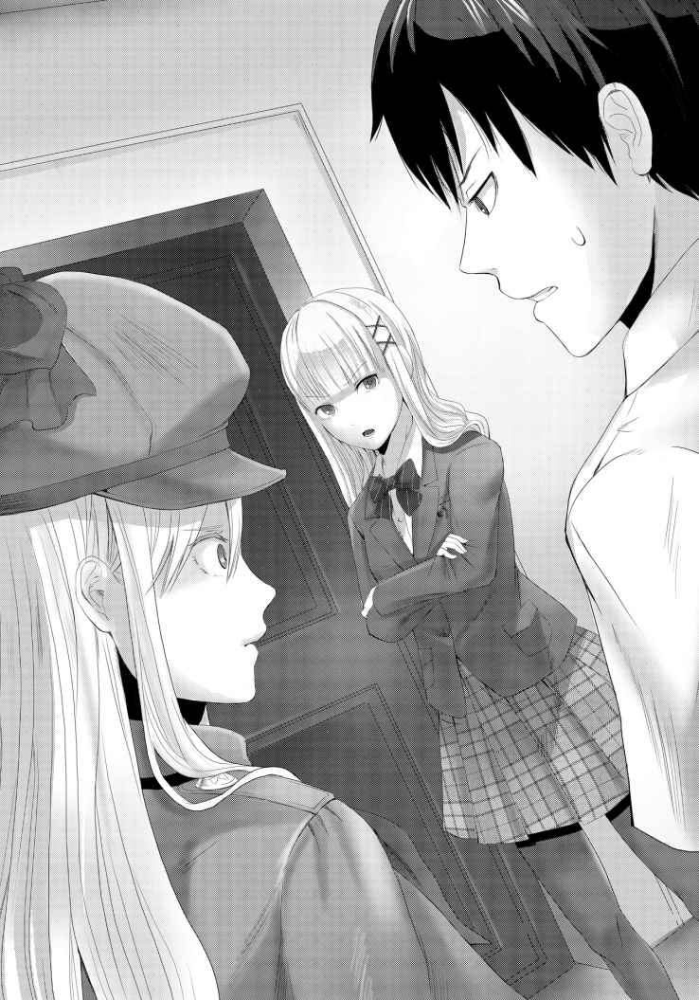
「シルヴィア......」
「ごめんなさイ」
シルヴィアも踵 を返してエントランスに向かう。
その背中に声をかけようとしたが、うまく言葉にならなかった。ノンナの言った、見かけに騙されている、という言葉がどうにも引っかかっていた。
「シルヴィ！」
往南がシルヴィアを追いかけていく。俺の方を振り向き、すまなそうに一度だけ頭を下げた。
二人が去って行った後に残された俺は、改めて扉に目を向ける。
相変わらず閉ざされたままのドア。
先ほどの自己紹介の場にいなかった、もう一人の参加者の存在。
そいつは、今どうしているのだろうか。ここへ降りてくる前に、外の虐殺に巻き込まれてしまったのか。それとも、今日ここへ来ていないのか。
そもそも、本当にそんな奴がいるのか？ シルヴィアの推理が絶対に正しいと断言できるのか？
見かけに騙されるな、という言葉が俺の頭から離れなくなってしまっていた。
＊
翌日の朝。ほとんど一睡もできないままに迎えた、二日目の、そして《感染ＨＲ》初日の朝。
俺はこれまでの人生で今最も緊張し、そして恐怖していると思う。
タブレットを持つ手が震え、汗ばんでいる。これが死を意識するってことなのか。
既に時間は開始時間の十分前となっていた。
ゲームに負けたものは、代表地域の人たちと一緒に殺される。そんな恐ろしいことが本当に起きてしまうのだろうか。
何とか気持ちを奮い立たせて、俺はエントランスへと足を踏み入れた。すでに俺以外の全員が集まっていたが、誰もが強張った表情だった。
壁に寄りかかって立つシルヴィアと目が合った。
視線を逸らさず、真っ直ぐぶつけ合ったその瞳は、ワタシを信じて欲しい、というシルヴィアのメッセージが込められているような気がした。
昨日、シルヴィアと往南と別れた後、俺は一人で他のメンバーたちの部屋を回った。
ゲームで協力し合い、全員で生き残ろうと提案したのだが、正直反応は芳しいとは言えなかった。
「これは、自分の命だけでなく、祖国を守るための戦いです。他者と協力するよりも、何よりもまず自分を守ることが大事だと考えています。ただ、貴方が私と敵対しない限り、私もまた貴方へウィルスを使う理由はありません。日本は、第二の祖国ですから」
シャーナさんは、冷静にゲームを分析していた。
「僕は絵が描ければそれでいい。日本も、今いる欧州も、正直どうだっていい。でも、命がけのゲームというのは、今までにないイマジネーションを与えてくれるかもしれない。負けた時に絵を描く時間を与えてもらえるかどうか、それが僕の唯一の関心事だね」
貴志は、カンバスに筆を走らせながら呟いた。
「俺は世界一のサッカー選手になるんだ。日本なんかで終わった親父とは違う！ 世界で一番稼ぐプレイヤーになる！ だから俺を助けろ！ お前なんかと違って、俺は生きなきゃいけないんだ！ 俺には生きる価値がある！ お前のワクチンを全部俺に使えよ！ そうだ、お前みたいな奴は、俺のように選ばれた人間にそうすべきなんだ！」
カルロスは、完全に俺を見下した目でそう命じた。
「どう考えたってチャンスやろ。ＧＭかなんや知らんけど、このゲームで落とした奴の国はキレイさっぱり掃除してくれるんやで。うまく立ち回れば、母国を世界一の強国にできるんや。どうや、アンタも乗らんか？ 第一属国として面倒見たってええで」
美花さんは、秘めていた野心を剝 き出しにした。
「ああん？ 誰が死のうが、何人死のうが知らねーよっ。十億でも百億でも勝手に死ね！ 俺が生き残ればそれでいいっつーの。人類なんざ、俺が再び繁栄させてやらぁ。あ、そのためにはいい女は生き残っててくれないとなぁ。そのウィルス、野郎とブスだけ殺してくんねーかなギャハハ！」
三峰は、クズっぷりを披露するだけで何も考えてはいなかった。
（正直、協調も協力も何も無い。それぞれが生き残ることに精いっぱいなんだ）
当然と言えば当然なのかもしれない。
だが、このゲームには国単位の人々の命が懸かっている。
絶対に、これ以上の犠牲者を出すわけにはいかない。
「ユート」
「往南。俺、皆でここを出られるように頑張ってみるよ。真希を守れなかったから、だから、ここで友達になった往南とシルヴィアを守りたい。他のみんなも、その後ろにたくさんの人たちの命が懸かっている。誰も死なせるわけにはいかないんだ」
声をかけてきた往南に俺は決意を告げた。
この中で一番取り柄の無い俺なんかが抱くには大それた決意かもしれないけど、偽りのない本心だった。
「ユート......コレ」
「ん？」
手渡されたのは手紙を入れるような封筒だった。と言うか、実際手紙が入ってるようだ。
宛名の部分には綺 麗 な字で「涌井 勇人くんへ」と書かれている。
「もしかして往南って、日本語の読み書きは出来るのか？」
俺の問いかけに往南はコクリと頷くと、タブレットに重ねて持っていたボロボロの文庫本を見せてくれた。俺は読まなかったが、小学生の読書感想文で課題図書の一つだった。
これを何度も何度も読み返しては日本語を覚えたのだろう。
「なら筆談は出来たんだな。もっと早く教えてくれれば良かったのに。部屋にメモ帳とかあったかな？ それ使えばシルヴィアに通訳してもらわなくても話せそうだな」
はにかむ往南は、小さく手招きする。
何かと思い近づくと、思いっきり腕を伸ばして俺の首をぐっと引き寄せる。いきなりのことにされるがままになっているうちに、人生二回目となる暖かな感触を唇に覚えた。
驚きに目を見開いた俺と違い、ゼロ距離の往南は静かに目を閉じている。ほんの一瞬だけそうしていた後、往南はゆっくりと俺から離れた。
「ゆ、往南......？」
「ユート、シナナイ、デ、ネ」
懇願するような、祈るような。
往南の気持ちが伝わってくるようだった。
「......ああ、わかった。だから往南も絶対に死ぬなよ！」
「ウン！」
「こんな時に余裕ネ」
「うわっ！ し、シルヴィア！ ......もしかして、見てた？」
「エエ、もちろン」
俺を睨むシルヴィアの目は、静かなようで明らかに怒っていた。昨日は自分からさっさと探索を切り上げていったのに、そりゃないんじゃないかなーと思う。
当然、怖いからそんなことは言えないが。
「アナタは昨日、大切な人を失ったばかりなのではなかっタ？」
「......ああ、そうだ。だから、これ以上誰も死なせたくない。カッコつけてるみたいなセリフだけど、本心だ」
「そウ」
シルヴィアは俺に背を向け、ＨＲが行われる部屋の扉へと目を向ける。
「期待してル」
「......ああ。俺もだ」
「時間ヨ」
ピーと機械音が鳴り、ガチャリと鍵の開く音が響く。
『お待たせしたね、諸君』
ついに〈ＨＲ教室〉の扉が開かれた。
人類の存亡を賭けた、破滅への入り口が──
《感染ＨＲ》が、開幕する。
ＬＥＶＥＬ ３
会場は円形広場にドームをかぶせたような天井、真ん中の床をそのまませり上げたような大きな円卓が一つあるだけで、その円卓は、シルバーの色調がＳＦ映画の会議シーンを連想させた。周囲には円卓に合わせたデザインの椅子が九脚。
どこに座れば良いのか迷ったが、ＧＭが「それぞれ好きな所に座ってくれたまえ」と言うので俺は、早々と席に着いたシルヴィアの左隣に座った。往南は、俺の隣へ着席する。
座ってみると円卓はかなり大きく、向かい合わせで手を目いっぱい伸ばしても握手は出来そうにない。
「ん？ あそこ、カメラがあんぞ。もしかしてここからＧＭが覗 いてやがんのか？」
幸い俺とは離れた位置に座った三峰が、天井の一角を指さした。
カメラは円卓の中心に向かっている。その反対側にも一つ、結局、計四台のカメラに監視されていることがわかった。三峯は自分が見つけたカメラに中指を立てて罵声を浴びせた。
「出てこいや、コラァ！」
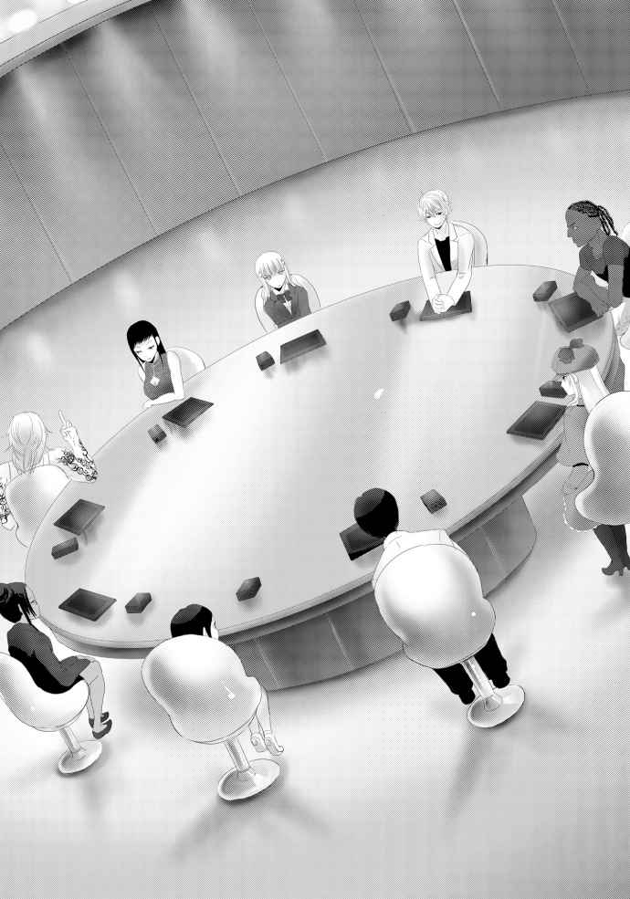
「やめや。どうせＧＭはカメラの向こうにはおらん」
「へ？」
「アホにはわからんでええ事や。とにかく、ウルサイからやめ」
「わ、わかりました姐さん」
三峰の隣に座り、奴を叱る美花さん。
（この人もシルヴィアと同じ考えなのか......？）
監視カメラに気付けば、普通はＧＭが俺たちを見ていると考えるだろう。だけど美花さんは即座に否定した。ＧＭがこの中にいると気付いているのだ。
だとすると、用心しなくてはならない。
（美花さんにも疑われている可能性があるんだ......）
ＧＭが自分たちの中に紛れ込んでいるという可能性を考えた時、一番怪しいのは俺なのだ。何せ、元々からの招待客ではないのだから。
（でも、昨日は、むしろ協力しろって言われたんだよな）
彼女は俺に、他を蹴落とすために協力しろ、と言っていたはずだ。
もしかしたら、俺をＧＭだと予測して、その上で協力しろと言っていたのかもしれない。
（このゲームを本気で利用しようとしているのか？ やっぱり、この人は要注意だ。くそ、あの後シルヴィアと全然打ち合わせが出来なかったのが痛いな......）
ノンナと言い争って部屋へ戻ってしまったシルヴィアとは、そのまま今朝まで顔を合わせることができなかった。
何度か部屋へは訪ねたのだが、出てきてくれなかったのだ。
今は隣に座っているが、細かい打ち合わせをしている時間はもはや無さそうだ。
その原因となったノンナは両腕を組んだまま、不機嫌そうに俺の正面に座っていた。
どの参加者とも打ち解けていないらしく、穏やかに会話をしている所を見たことが無い。絡まれているようなものだが、単純に言えば俺が一番話してるんじゃないだろうか。
今でも、誰にも話しかけようとしないし、その逆もない。
美花さんは隣に座る三峰は手下扱いだが、シャーナさんとカルロスの二人とは普通に口をきく。
自己紹介の時も言っていたが、芸術家にだけは興味があるのか、シャーナさんは貴志へは積極的に話しかけているようだ。が、当の貴志は完全にマイペースと言った所だった。
ただ、孤立、というのとは違う気がする。
貴志は好きで一人でいるが、ノンナは完全に孤立しているように見えた。
「ノンナ」
俺は、ノンナに声をかけてみた。
予測外のことだったのか、ノンナはビクッと体を震わせると、驚いた目で俺を見た。
円卓である以上、真向いに座る人間は一番遠い距離にいるわけで、そんな俺から声をかけられるとは全く考えてなかったんだろうな。
不機嫌そうな顔はそのままに、組んでいた両手を解いてノンナは頰杖をついた。
「......何かしら」
「あー、いや、その」
「......」
実は話す事なんか実際何もなかったりする。全員に対する声掛けをノンナだけしなかったのは、シルヴィアに対する発言から協力は望めないと思ったからだ。
（なのに、今になって声かけるとか何やってんだろ、俺）
両サイドから往南とシルヴィアに注目されているのがわかる。
二人も、まさか俺からノンナに話しかけるとは思ってなかったのだろう。俺だって考えあってのことじゃない。
「その、お前はゲームどうするんだ？」
「どうするって？ 参加する意外に方法があるのかしら？」
「いや、そうじゃなくて、誰か蹴落とすとか、そういう事を考えてるのかって」
「興味ないわ」
即答。
「自分が生き残ることに全力を尽くす。そのために結果、誰かを蹴落とす事になるかもしれないけれど、それは勝負の世界ならば当然ですわ。今回は命がかかっているという違いがあるだけ。負ければワタシも殺される。条件は同じでしょう」
ノンナは、本当にゲームだと捉えているようだった。
「そうか」
「そんな事を聞きたかったの？ 意味がわかりませんわ」
ノンナは吐き捨てるように言うと、頰杖をついたままそっぽを向いてしまった。もう俺と会話を続けるつもりはないらしい。
いや、今のを会話と言って良いのかわからんけど。
（涌井くン、どういうつもりなのかしラ？）
（どうって......何か気付いたら話しかけてた）
（......お前 、なんてずいぶん馴 れ馴れしいのネ）
（へ？）
言われてみれば、何の違和感もなくお前呼ばわりしていた気がする。
俺が目をパチクリさせると、シルヴィアにも同じようにそっぽを向かれてしまった。
うう、これからゲームが始まるってのに幸先悪い。
（ユート）
（......ん？）
円卓の下で往南が、指を絡めてきた。伝わる手の温もりが俺の心を落ち着かせてくれる。
（生き残ろう、必ず）
（ウン）
俺は決意を新たにする。
シルヴィアは隣で目を閉じて静かに時を待っている。
往南は俺を信じてくれている。
美花さんはまるで観察するような目で他の参加者を見ている。
三峰は美花さんの顔色を窺 うばかり。
シャーナさんは眼鏡を外してレンズを拭いていた。
カルロスは落ち着きなく貧乏ゆすりを繰り返している。
貴志は相変わらずぶつぶつ言いながら持ち込んでいたクロッキー帳に筆を走らせている。
ノンナは腕を組んで俺を、そして周囲の人間を睨 みつけていた。
それぞれがそれぞれの想いを、恐怖を、欲望を胸に。
『さぁ、《感染ＨＲ》を始めるとしよう』
ＧＭが《感染ＨＲ》の開幕を宣言した。
『いよいよ本番だ。まずは各自、目の前にカードリーダーがあるだろう？ そこへ自分の招待状ＩＤを差し込んでくれたまえ』
俺は真希のＩＤをリーダーへと差し込む。と、カードリーダー前がハッチのように開き、ＩＤとは別のカードが出てきた。何だかＳＦ映画みたいだが、出てきたカードはトランプを一回り大きくしたぐらいの、紙製だった。
《ウィルス》と書かれたカードが五枚、《ワクチン》と書かれたカードが五枚の全部で十枚。
『その十枚が君たちの初期手札、という事になる』
続けて、カードが排出される。
今度は《ウィルス》が三枚、《ワクチン》が二枚。
『次に出たカードは、ゲームごとに配布されるもの。第一回目の分だ。相手に見えるように持っていてもいいし、隠しても構わない。着席した時点で、君たちのタブレットとカードリーダーはリンクしている。新たなフォルダが出現しているはずだ』
ＧＭの言葉にタブレットを確認すると、先ほどまでは存在していなかったフォルダ『感染ＨＲ』が新たに表示されていた。
開いてみると、ここにいる参加者全員の名前がリストアップされている。
俺がその中から『瑠河真希』を選択すると《ウィルス》《ワクチン》の項目が現れた。すぐ下には数字を入力するようになっている。
（通販サイトの個数入力みたいだな......）
俺はフトそんなことを思った。
ここに数字を入力する。
そしてその枚数だけ、リーダーにカードを差し込むのだろう。後は結果次第で、ウィルスカードが戻ってきたり戻ってこなかったりする。
ただそれだけ、本当にそれだけのゲームなのだ。
こんな大げさな機械も施設も必要ない。それこそトランプに《ウィルス》《ワクチン》と書いて必要な枚数だけ用意すれば、すぐ遊べてしまうような、そんなゲーム。
こんなゲームで、俺たちはお互いの命を賭け、そして何千万という人たちの命を背負わなければならないのだ。
『カードの《セット》方法はわかったかな？ さぁ、今から早速《セット》タイムだ。制限時間は三十分。その間ならいつ《セット》しても構わない。もちろん、会話は自由だ。騙 すもよし。裏切るもよし。命がけの《討論会》を楽しんでくれたまえ。最後に。既にカメラの存在には気付いていると思う。これは監視カメラではなく、中継用のカメラなんだ』
「中継用？」
そういえば、討論会の様子はテレビ中継もあると聞いていたけど、そのスタッフは全て外で殺害されてしまったはずだ。
続けてＧＭが語った言葉はまさに衝撃だった。
『このゲームの模様は、ある意味予定通り──いや、やはり想定外か──世界に生中継される。君たちが疑心暗鬼に陥っていく姿を人々が見て笑い、やがてその結果が自分に降りかかると気付いて絶望するのさ。どうだい？ 実に愉快だろう？』
それは言葉の爆弾とでも言えば良かったのだろうか。
俺は自分の耳を疑ったが、皆一様に豆鉄砲を食らったような顔をしていた。聞き間違いじゃないらしい。
俺たちがゲームする様子が、世界に中継される？ どうして？ 何のために？
もう何もかもわけがわからない。
「っざけんな！ いつまでドッキリやってるつもりだコラ！ 中継とかしてるっつーならあれだろ？ テレビの企画ってやつだろうが！ とっとと出てこいや！ リアクションしてやるからよぉォ！」
卓を叩 いて三峰がキレた。
俺もそうだったらどれだけ良いだろうと思ったが、コイツも同じこと考えてたんだな。
だが、ＧＭからの反応は無かった。
「だんまりかコラァ！ カメラ全部、ブチ壊すぞ！」
三峰は叫ぶやカメラに駆け寄った。その拳を振り上げた瞬間。
「ゴフッ！」
三峰の口から大量の血が吐き出された。
喉を抑え、もがき、呻 き声をあげる。
助けを求めるようにフラつき、そのままシャーナさんの所へ倒れ込んだ。
「きゃぁぁぁぁぁぁ！」
「シャーナさん！ 三峰！」
「動かないデ！」
「シルヴィア!? 」
「シャーナ、席は立たないデ」
「ヒィィ......」
シルヴィアの声が耳に届いてるのかわからないが、シャーナさんは座ったまま倒れ込んだ三峰を押しのけた。
奴の大きな体が床へと投げ出され、そしてピクリとも動かなくなる。
その目は大きく見開いたまま、もう瞬きすらしない。
俺でもわかる。
三峰は、死んだ。
殺されたんだ。
「も、も、もうダメだ！」
カルロスが恐怖に引き攣った表情を浮かべて叫んだ。
「俺たちも、殺されちまうんだ！ 見ろよ、何もしてないのに、コイツ死んだぞ！ ゲームなんてウソだろ！ この部屋にいる人間は、もう感染しちまってるんだ！」
取り乱したカルロスが席を立とうとした瞬間、シルヴィアが鋭く制した。
「席は立たないでと言ったでしょウ!? 」
「お、お前なんかに命令される筋合いはねーぞ！」
「死にたくなければ、動かないほうがいいと言っているノ。それとも、アナタも彼のようになりたいノ？」
「お、お、俺は......冗談じゃない！ こんな奴と同じ死に方なんて、まっぴらごめんだ！」
「なら動かないデ。彼はウィルスで死んだのではなイ。ワタシ達は感染などしていないワ」
「ウチもそう思うで」
シルヴィアに続いて美花さんも同調の声を上げた。
「もしそうなら、皆一斉に死んでるやろうし、そもそも自分からゲームしろ言っておいて、始める前に皆殺し～なんて話あるかいな。こいつは、勝手に動いて勝手に死んだんや。自業自得やろ」
「ず、随分冷たいじゃねぇかよ。奴とアンタはつるんでたんじゃねぇのか!? 」
「ほ。そう見えとったかい？ あんなん、道具にすらならんゴミや。どんな人間だったかは、皆もわかっとるやろ？ 会って数時間の人間全員に、クズ判定される奴なんざ、生きてた所でロクなことも無いやろ」
「そ、それは......クソッ！」
平然と三峰を切り捨てた美花さんの言葉にカルロスは絶句し、自慢だったドレッドヘアーを抱え込んだ。
「何でだよ、どうしてこんな目に遭わなきゃならねーんだよ」
カルロスの言葉に、皆押し黙る。
誰もがそう思っているに違いない。
『ゲームの敗者に、粛清を』
突如ＧＭの声が響き、天井から巨大なモニターが降りてきた。
映像はいくつもの画面に分割され、それぞれにどこかはわからない街や海、草原の姿が映し出されている。その中に俺も知っているモノがあった。
オーストラリアのオペラハウス。周囲には何も知らない人々の姿も映っていた。
「マジかよ、おい、マジかよ......」
「やめて、やめてよ......」
カルロスとシャーナさんの呻き声が聞こえてきたが、俺は言葉を発することが出来ない。
二人と同じく、これから映し出される映像を、予測してしまったから。
それは、きっと真希が殺された時の拡大生産版。
『オセアニア地域《感染開始》』
その後の姿は見ていられなかった。
オセアニア全土へ急速に拡大していく感染。
苦しみもがき、倒れていく人々。
一体どれほどの人がウィルスに侵されてしまったのだろう。
広がったウィルスは、どれだけの人の命を奪うのだろう。
「シルヴィア......。俺さ、心のどこかでまだ、ほんの少しだけ期待してたんだ」
「......」
「三峰の奴が言ったみたいにドッキリでさ。俺たちを騙して、その姿を見てるんじゃないかって」
だが......全て、現実だった。
「そうネ」
シルヴィアは、それでもポーカーフェイスだった。
ほんの少しだけ、ほんの一瞬だけ肩を震わせただけで。
「ワタシも、ヨ」
モニターの映像が切り替わり、南太平洋を映し出した一枚の大きな地図が映し出される。そこに無数の赤い点が現れ、広がり、陸地の大半を赤く染め上げた。
「おしまいよ。もう、おしまいだわ......」
シャーナさんは嗚 咽 を漏らしていた。三峰の吐き出した血が彼女のシャツにベットリと付着していた。
『ゲームを続けようか。制限時間は三十分。未来ある若者たちの、実りある議論を期待しているよ』
ＧＭに促されても、誰も口を開こうとはしなかった。
それもそのはずだった。
この状況で何を話すというんだ。
だが──。
（このままじゃダメだ！）
俺はなけなしの勇気と理性を動員し、生まれて初めて声を出す意識をした。声を出すなんて、喋 るなんて一番簡単なことだったはずなのに。
「残りの俺たちが、全員で生き残る方法を見つけよう」
「全員で生き残る、口で言うのは簡単ですわ。でも、このゲームは他人を蹴落とした方が生存率が上がる、という事は理解していらして？」
俺の言葉に真っ先に反応したのはノンナだった。
シルヴィアほどではないが、彼女もまた、かなりのポーカーフェイスだ。少なくとも今の惨劇を見て恐怖している様子は見てとれない。
「いや、どういう事なんだ？」
「はぁ、そんなことでよく率先して発言しましたわね」
ノンナが呆 れた声を出す。
「いいこと？ このゲーム、誰もが自分の持っているウィルスとワクチンの枚数だけに目が行ってしまいがちですけど、本当に大事なのは場にあるカードの総枚数、ということですわ」
「ほ。それはどういう事や？ 自分のカードだけ見てればええやん。自分が生き残るのが目的のゲームなんやし」
「わかっていないフリをしても無駄ですわ。それとも、本気でそう思っているのかしら？ もしそうなら、私の話を聞く必要は無いわ。どちらにせよ、黙ってなさいな」
チッ、と美花さんが舌打ちしたが、ノンナはそれを無視する。
「カードはそれぞれウィルス８枚、ワクチン７枚でスタートされる。そしてゲームは最大で五回開催されるのだから、最終的にはウィルスは20 枚、ワクチンは15 枚が手元に来ることになりまわすわね」
「うん。それはわかる」
「全員が《発病者》となってしまうには、一人減ったから、ウィルスカードが80 枚あればいいですわ。全員のカードを総計すると、最終的に１６０枚のウィルスが配られ、ワクチンは１２０枚。40 枚がオーバーしてしまう。これは、４人が《発病者》としてゲームオーバーになる枚数ですわね」
「それじゃ、全員でのクリアは無理なのか......？」
「いえ、そうではないワ」
今度は隣のシルヴィアが口を開き始めた。
ノンナが突っかかるかと思ったが、何も言わずに聞いている。お手並み拝見のつもりなのかもしれない。
「ゲーム終了時、40 枚のウィルスカードが参加者に均等になっていればイイ。単純に計算して、５枚ずつネ。そうなるように行動すれば全員が生き残ることが出来るワ」
「それって、単純に手に入るワクチンカードで増えてくウィルスを全部相殺していけばいいだけだろ？ 何だ、思っていたよりも楽勝じゃないか！」
二人の説明を聞いていた俺は、少しだけ光明が開けてきた気持ちになった。
が、それもすぐ打ち消されてしまうことになる。
「そのためには、示し合わせてウィルスとワクチンをセットし合わないといかんやろ？ ウチはお断りやで。せっかく自分の手ぇも汚さんと『国益』に貢献できるんや。こんなチャンス逃すわけない」
「美花さん！ アンタ、何を言ってるんだ！」
俺の言葉を美花さんは嘲笑った。
その笑顔は、まさに凄惨な、という表現がぴったりだ。
「何って、ウチは中国人なんやで？ ロシアもインドもアメリカも欧州もぶっ殺して世界を制覇するチャンスが目の前に転がっとるんや。日本が中華思想知らんとは言わんといてや。数千年の昔から、世界の中心は中国やった。世界っちゅーのは、元々からそういう風に出来てる。正しい世界に戻すんやから、むしろ正義や」
「そ、そんな、そんなことを言っていると、あなたにウィルスカードが殺到しますよ!? 」
体の震えを止められないまま、シャーナさんが美花さんに嚙 みついた。
だが、美花さんはそんな彼女の言葉を軽く笑い飛ばす。
「やればいいやん」
「な、なんですって......」
シャーナさんはタブレットを操作し、美花さんへカードをセットしようしたが、手が震えてうまくいかなかった。今にもタブレットを落としてしまいそうだ。
そんなシャーナさんの姿を見て、美花さんはますます邪悪な笑みを浮かべる。
「アンタ、自分の手で十三億人も殺す覚悟があるならやればいいやん。ウチを今殺すっちゅーことは、そういう事や。出来るもんならやってみい。真っ先に殺人者になるって覚悟がアンタらみたいな甘ちゃんにあるもんならな」
俺はまさしく、絶句した。
死んだ三峰のことをクズ野郎だと思っていたが、アイツは理解できるクズ野郎だった。
だが、今目の前にいるのは、一生理解できない相手だ。
自分は自身と自国の利益のために数億の人々を平然と殺すと言っているのに、他人に対しては命の大切さを盾にして身を守ろうとしている。
俺は心底ゾッとした。
「あんまり調子に乗らない方が良いですわよ」
「なんや、金髪の。アンタは出来るっちゅうんかい？ 十数億人も殺したら、地獄に落ちるどころじゃ済まんで」
「フン」
美花さんの挑発を無視したノンナは手際よくタブレットを操作すると、手元のリーダーにカードを差し込んだ。
「シベリアの向こう側でうじゃうじゃ繁殖しているサルにはうんざりしていた所ですの。いい機会だから、ワタシが数を減らしてさしあげるわ」
「......アンタ、十数億人殺せるっちゅーんかい!? 」
「十数億人？ 十数億匹、の間違いではなくて？」
今度はノンナがせせら笑う。
美花さんと同じ、凄惨な笑みを浮かべて。
「牛や豚がいなくなったらディナーの質が落ちてしまうけど、サルが絶滅しても何も困らないわ。それに、経済国とは名ばかりで口減らしをしている位なのでしょう？ 十数億ほど《殺処分》して整理した方が、よほど国益になるのではない？」
「な、何やと......」
「〝一人殺すは殺人でも、多く殺せば英雄〟という名言をご存じなくて？ やはり足りないお猿さんですわ」
ノンナの平然とした差別発言に、今度は美花さんが焦りの表情を浮かべる番だった。
しかも、ノンナは確かにカードをセットしていた。ただ何のカードを誰にセットしたかはわからない。自分にワクチンをセットしただけかもしれないのだ。
円卓のお互いの席からは、他の参加者の手元は見えない。
確かに制限時間内であればいつどのタイミングでセットして良い、というルールだった。
（ノンナの心理作戦だったら......）
ゲームは始まったばかりなのに、早くも熱を帯び始めている。
「ワタシ達もどうするか、決めなくてはいけないワ」
「ミンファ、ニ、ウィルス？」
「それも含めて、ヨ」
ユキナの問いかけに、シルヴィは意識して大きめの声で返事をしたようだった。
美花さんは大きく舌打ちを鳴らし、その姿にシルヴィアは冷笑を浮かべる。
──女性陣の駆け引きに全く付いていけてないな、俺。
何より、女って怖い。
「美花は嫌だと言っていたけど、一応、全員が生存するための方法は提案させてもらうワ。今ハッキリさせておかないと、本当に全滅してしまいかねなイ」
「それぞれが相互にウィルスとワクチン持ってる枚数全部セットしていけばいいんじゃないか？ 二人一組になってさ」
俺は思い浮かべていた方法をシルヴィアに提案してみた。
この手段なら、セットしたウィルスが同じ枚数だけ消えていくので、最終的に感染者は出ないはずだ。
「基本はソウ。でも、だた、それは完全ではなイ」
シルヴィアの言葉に俺は、黙って意見を聞く事にする。
「ワクチンは全てを確実に使い切らなくてはならないノ」
「どういう事？」
「ルールを忘れたノ？ ワクチンは、セットしなければ効果を発揮しなイ。その上、セットしたワクチンはウィルスを相殺しなくても消失してしまウ。つまり、この作戦はとても裏切り行為をしやすい、という事ヨ」
裏切り、という言葉に俺の心は瞬間冷却された。
「裏切るって......どんな？ そんなことできるのか？」
「さっき涌井くんが言った通り、二人一組になってウィルスとワクチンをお互いにセットする。これをゲーム全５回繰り返すだけでこのゲームはクリアできるワ。終わった時には全員の手元に５枚のウィルスが均等に残る事になる。でも......」
「誰か一人でも、持っているウィルスカードを全て隣の人にセットしなかったらそれまで、という事ですわね」
ノンナが会話に入ってきた。
「ちょっと待てよ。ウィルスを使わないで残すなんて自殺行為じゃないのか？ そんな事に何の意味があるんだ？」
「意味ならあるワ」
「意味ならありますわ」
銀髪と金髪、二人のブロンド少女が異口同音に返事をした。
「自分は約束を反故にするけれど、周囲は予定通り決め事を行っていたら？ 自分にセットされるウィルスはペアの人間が相殺してくれる。最低でも１枚はウィルスをセットしなければならないから、その１枚だけをセットすれば、相手からは『ウィルス８枚とワクチン７枚をセットした』結果と同じようにしか見えないですもの。そうすれば、次回のゲームでウィルス11 枚、ワクチン９枚という圧倒的な手札を握ることが出来るようになりますわね」
「このゲーム、ワクチンを多く握ってることが有利なんじゃないのか？ ウィルスたくさん持ってたって。危険なだけな気がするんだけど......」
「ルールを思い出しテ。自分の持っているカードを人に見せるのは自由、と書かれていたはずヨ。ウィルス11 枚、ワクチン９枚もの手札を見せて、『このカードをお前に使われたくなれけば、言うことを聞け』とでも言われたら、アナタはどうするかしラ？」
「それは......」
俺が言われた立場になった姿を想像してみたが、確かに言うことを聞くしかなくなってしまうだろう。
自分が予定通り遂行していた場合、手元には１枚のウィルスカードが残る。次のゲーム開始時にウィルスが４枚、ワクチンが２枚になるのだから、11 枚のウィルスカードから身を守る方法は無い。
「そうやって一人、言わば奴隷を確保できれば手札は実質上で15 枚と13 枚になりますわ。もはやゲーム内の生殺与奪はそのプレイヤーの思うがまま......と言った所ですわね」
ノンナは吐き捨てるように言葉を切った。
「この方法は、先に種を明かされてしまうと使いづらいワ。前提となる作戦が、誰が誰にカードをセットするかを予め決める必要がある以上、裏切りを起こしそうな人物は、警戒されてしまうカラ」
シルヴィアの視線の先には、美花さんが座っていた。
もはや不愉快な表情を隠そうともせず、床に唾を吐いてそっぽを向く。
本性をどうこう言うほど、俺はこの人のことを知らない。だけど、見抜くことが出来てい無かったのは間違いない。
（表向きの行動、言動だけで人を判断してはいけないって事だよな。まして、こんな状況では......）
疑心暗鬼にとらわれそうになる所を、頭を振って追い払う。
警戒はしなきゃいけない。だけど、疑い始めたらおしまいな気がする。それこそ、底なし沼にハマっていくかのように、どこまでも人も信用できなくなってしまう。そうなる前に俺は、全員が生き残るための作戦に望みを賭けたいんだ。
「でもさ。この方法を否決しちまったら俺たちは本当に殺し合いをしなきゃいけなくなっちまう。それも、お互いに騙し合って疑い合って闇雲にカードをセットし合うだけの大乱戦だ。それじゃ、誰が殺されて、どの国が滅ぶかも全くわからない。そんなのは、美花さんもノンナも不本意だろ？ 他の国をどうこうするより、まずは自分の国を守るのが先のはずだ」
俺は必死に皆へと訴えかけた。積極的に発言していたシルヴィア達だけでなく、発言の無かった他の四人も俺へと目を向けている。
本来の代表でもないのに少し恥ずかしかったが、今は気にしている場合じゃない。
「ノンナ、さっきカードをセットしてたよな。あれ、誰に何をセットしたんだ？」
「......そんなことを教えるとでも思って？」
「頼む」
俺は円卓に頭をこすりつけんばかりに頭を下げた。この作戦を俺が提案する以上、俺が信用されることがまず第一条件なんだ。
俺は、誰も殺す気なんかないし、どの国も陥れたくなんかない。この中にＧＭが紛れ込んでいるなら、そいつは確かに殺してやりたい位に憎いが、ゲームの中でそれを狙うのはお門違いだ。ＧＭがどこかの代表のフリをしている以上、無差別虐殺に加担してしまう事になる。
ここを無事出ることが出来たら、改めてぶっ殺してやる。そのために生きて出るんだ。
だが、そのことを口で言った所で信用して貰 えないだろう。
だからこそ涌井勇人という人間を信じて貰う事が出来たら、きっと生き残るための強い力になるはずなんだ。
「......アナタに、ウィルスを１枚セットしましたわ」
「お、俺に!? 何で!? 」
俺の抗議をノンナは軽く受け流した。
「あら、アナタは作戦の立案者でしょう？ 皆をこの作戦に乗せることが出来るかどうか、見極めようと思っただけですわ。どうせ後でワクチンもセットできますものね」
「......それはつまり、お前は俺の作戦に乗ってくれた、と考えていいのか？」
「ええ」
「信用していいんだな？」
「シベリアの大地に誓って」
俺に向けられたノンナの目は、前までの軽蔑し見下すような視線ではなく、真っ直ぐ突き通すような目だった。
この視線は、噓 じゃない──。
ノンナは俺を信用してくれたと思った。いや、信用する道を選んだ、という方が正解かもしれないな。
生存率が高い方に賭けただけ、と言うかもしれない。
でも、差し当たってはそれで十分だった。
「じゃあ、ノンナは俺に残りのウィルスとワクチンを全部セットしてくれ。で、あとは......」
「ちょっと待てよ！ 何でお前が勝手に仕切ってんだよ！ 誰もやるなんか言ってねーぞ！」
カルロスが唾を飛ばすような勢いで声を上げた。
「てめえらなんか信用できるかよ！ つーか勝手に死ねばいいだろ!? 俺はなぁ、世界一のサッカー選手なんだよ！ てめぇらとは格が違うんだ！ 俺は生き残る！ てめぇらは勝手に死ね！」
「お前、さっきまでずっとだんまりだったくせに、ようやく喋ったと思ったら今さら何を言ってんだ!? 」
あまりにも幼稚で勝手な言い分に、さすがの俺も頭に血が上ってしまった。席を立つ事への恐怖が無ければ殴りかかっていた。
これまでの人生でも中々出したことが無いようなドスの効いた声で、俺はカルロスへの非難を続けた。
「サッカー選手がそんなに偉いのか？ 天才プレイヤーだからどうしたってんだ。そんなので人間の価値が決まるとでも本気で思ってんのかよ」
「ああ、そうだね！ てめぇらが百万人死んだって、俺一人生きてる方が喜ばれるのさ！ それが選ばれた人間だ！」
プツン。
頭の何かが切れた瞬間、俺の腕をシルヴィアがきつく引っ張っていた。静かに首を振り、無言のうちに冷静になれ、と告げていた。
俺は握り拳の爪を手のひらに食い込ませながら、カルロスに飛びかかりたい衝動を必死にこらえる。
「カルロスくん、だったかしラ？」
「な、何だよ、てめぇ、変な恰 好 しやがって薄気味悪いんだよ！」
「そウ」
シルヴィアはおもむろにタブレットを皆から見えるように操作すると、カードをリーダーへと差し込んだ。カードを《セット》したのだ。
「て、てめぇ、まさか！」
「エエ。アナタにウィルスを８枚《セット》させてもらったワ。ワクチンはまだ《セット》していなイ」
「ふざけんな！ は、早くワクチンを《セット》しろ！ ぶっ殺すぞ！」
「やれるものなラ。ゲーム中に席を立てば三峰くんと同じ結果になりかねなイ。その覚悟があるなら、ワタシを殺しにくればイイ」
「～～～～～～○△×※■！」
カルロスが全く理解できない言語で声を荒げ始めた。
多分、これポルトガル語の罵りなんだろうな。推測でしかないけど。
興奮状態のままのカルロスはタブレットを操作すると、シルヴィアに侮蔑の指を立てて喚き散らす。
（あ、まさか......）
俺はシルヴィアの考えが読めた気がした。
シルヴィアは眉一つ動かさず改めて自分のタブレットを操作し、カードを差し込む。
「ありがとう。アナタからの８枚のウィルスに対して、自分のワクチンを７枚《セット》したワ。アナタも早く、自分のワクチンを《セット》した方がイイ」
まさしく、してやったりという微笑を浮かべてカルロスに余裕の忠告をする。
カルロスは口をぱくぱくさせるだけで、もはや声を出す事が出来ないような状態だった。まるで酸欠を起こした観賞魚状態である。
「なぁ、もしかしてポルトガル語もわかるのか？」
「少しなラ」
しれっと言ったぞ、この才女め。
「日本語に直すと『てめぇぶっ殺す！ ぜってーぶっ殺す！ てめぇにもウィルス全部《セット》してやったぜ！ どうだ、怖いだろ！ 今さら謝っても遅ぇぞクソアマ！ 俺に●×△※したら許してやってもいいぞ、この※△×！』と言っていたワ」
放送禁止用語混じりのカルロスの罵声をシルヴィアが解説してくれた。
努めて冷静に、淡々と語っていたが、その横顔は明らかに怒っている。気がする。
「ま、まぁおかげで助かったよ」
カルロスはもう、言われた通りにするしかないだろう。たった今手持ちのウィルスを使い切って、脅しの手札がないのを宣言したも同じだった。
このゲームは誰に何を《セット》したかはわからないが、《セット》をする作業そのものは周囲に筒抜けだ。カルロスが以後何もしなければ、美花さんやノンナ辺りは間違いなくウィルスをカルロスへ《セット》するだろう。
作戦に乗らないと公言した上で、攻撃力であるウィルスを残そうとしている人間を生かしておくほど、あの二人は甘くない。
ようやくカルロスも自分の立場をわかったらしく、真っ赤な顔が一瞬にして青ざめた。そして意気消沈したままカードを《セット》した。
「自分にワクチンを７枚《セット》した......。これでいいんだろ？」
シルヴィアの見事な作戦、と言うか、あっさり引っ掛かったカルロスの間抜けさに助けられた感はあるが、どうにか軌道は修正できそうだった。
──後は二人一組をどうするか、だけど。
そんな事を考えた時、俺の袖を往南が引っ張った。
「どうした、往南？」
「ジカ、ン」
左手に着けていた腕時計を俺に見せる。時刻は九時二十分、一時限目終了の時が迫っていた。
「時間がないから、残りは俺を起点に時計周りで《セット》を回していこう。俺は往南に、往南はシャーナさんに、そこから美花さんへ。美花さんはノンナを飛ばして貴志へ。ノンナは残りを俺に《セット》頼む」
「ウン」
「わ、わかりました」
「チッ、しゃーない。今回は乗ったるわ」
「わかりましたわ」
四人がそれぞれに返事をする。
「それと、貴志はカルロスじゃなくてノンナにセットしてくれ」
話を聞いていたのか怪しいが、俺は貴志にそう話しかけた。
貴志はクロッキー帳に走らせていたペンを止めると、俺に向き直ってイケメンスマイルを向ける。
「ああ、そうする。......君は、この状況下で余り絶望していないんだね。昨日、興味が無いなんて言ったけど撤回させてもらうよ。君という人間に、少し興味が湧いてきた。まだ、僕の創作意欲を搔 き立てる程ではないけれどね」
「何だよ、いきなり。絶望してない、なんて他の皆もそうだろ？」
「いや、そんな事は無いさ。僕も何だかんだ言って割と絶望していたし、他の皆もね。顔には出さなくても、見える雰囲気が違う」
あまり表情を変えないまま貴志がそんなことを言った。
芸術家で人とあまり関わらない生き方をしているように思っていたけど、それは逆で、普通の人よりもずっと深く人間観察しているのかもしれない。
人をモデルに絵を描く事だってあるんだろうし、意外と敏感なのかもな。
「元々、見えている顔とイメージが全く重ならない人もいたけどね」
「ん？ それはどういう......」
「イソガ、ナイ、ト」
往南が急かしてきた。確かに時間はいよいよまずい所にきている。
「よし、じゃあカードを《セット》していこう。シャーナさんも、美花さんもいいですね？」
二人とも無言のまま頷いた。
あんな事を言ってた美花さんがすんなり頷いた事に多少の疑念は感じたけど、今この流れに逆らう意味も無いと判断したのかもしれない。
顔を見る限りでは、何か悪巧みしているようにしか見えないが、とりあえず今回は信じよう。
「それじゃ、俺から操作する。往南、いいか？」
「ウン。シンジ、テル」
「ああ」
言われなくとも、その信頼には応えるつもりだ。
俺はタブレットを操作し、往南の項を拡大してウィルスを８枚、ワクチンを７枚と入力した。すると自分が座っている円卓のカードリーダーがカチャリと音を立てて開く。そこに手持ちのカードを全て差し込んだ。
「完了したぜ。次は往南だ」
コクリ、と小さく頷くと、往南は俺と同じようにカードを《セット》していく。
「デキタ」
次のシャーナさんへ促すと、往南は俺の方を向いて優しく微笑んだ。
シャーナさんは危なっかしい手つきで、美花さんは手際よく、それぞれの《セット》を完了させる。
「で、できました」
「ウチも終わったで。一時限目はアンタの勝ちや。安心せぇ、ウチは悪巧みはするが、約束は守るクチでな。けど、二時限目はウチが主導権握るで。覚悟しときや」
美花さんが不敵な笑みを向けてきた。
「タカシより先にワタシが残りをセットさせていただくわ」
ノンナがカードを残っていたカードを《セット》する。
対象は、俺だ。
信頼しなきゃいけないとはわかっているのだが、やはり多少の緊張は隠せない。
だが、そんな俺の感情など意に介する様子もなく、ノンナはサッサと操作を終えると隣に座る貴志に操作を促した。
（信じるって決めたんだ。腹は括らなきゃな）
貴志も操作を終え、参加者全員が《セット》を完了させた。
「ＧＭ！ 《セット》が終わったぞ！」
俺は何も映っていないモニターに向かって叫んだ。
少しの沈黙の後、モニターにエントランスで見たのと同じ、ふざけた紳士の絵が映し出された。
『ＨＲ終了の時間だね。運命の選択は済ませたかい？ さぁ、では一時限目の《感染ＨＲ》の発表といこう』
ゴクリと、誰かが唾を呑 み込む音が聞こえた。
（大丈夫なはず。絶対に大丈夫なはずだ......）
俺は全員が揃 っての一時限目クリアを願い、
そして、絶望が姿を現した。
『一時限目の《発病者》は、飛瀬往南、です』
「......え？」
今、なんて言った？
《発病者》は、飛瀬往南って、言わなかったか？
何かの聞き間違いじゃないのか？
『繰り返します──一時限目の《発病者》は、飛瀬往南、です』
聞き間違いではなかった。
「なんでだよ！ 待てよ、おかしいだろ!? どうして往南が《発病者》になるんだよ！」
俺はモニターに向かってあらん限りの声で叫ぶ。
だが、ＧＭは何の反応も示さなかった。
「ゆ、往南......」
俺だけでなく、全員の視線が往南へと注がれる。
往南は、恐怖に引き攣った顔を浮かべ、全身を震わせていた。
俺が声をかけようとした瞬間、往南の全てが決壊した。
「ドウシテ......どうしてよ！ なんで私が《発病者》になるの!? 誰よ、裏切ったのは誰なの!? 言いなさいよ！ 殺してやる！」
取り乱した往南が喚き散らしたのは、まぎれもなく流暢な日本語だった。
「往南、日本語を......」
「あんたでしょ!? あんたが私にセットしたわよね!? 私を守るって、言ってたくせに、裏切ったのね！ クソ野郎！」
「待てよ、俺は......」
「うるさい！ 殺してやる！」
「無様ですわね。化けの皮が剝 がれた挙句、醜態をさらして」
「ノンナ！」
言葉の先で悠然と腕を組み、侮蔑の表情を浮かべるノンナ。
往南も殺気を漲 らせた目でノンナを睨 みつけたが、彼女は顔色一つ変えずに平然としている。それはもはや、ポーカーフェイスなどというレベルではなかった。
「だから言ったでしょう？ 見た目で判断しない方が身のためだ、と。それにしても、アナタもやりますわね。皆を助けるようなことを言っておいて、一人脱落させるなんて」
「違う！ 俺はそんな事していない！」
「隠さなくてもよろしくてよ。それに《発病者》になるという事は、その女も裏切り者という事ですしね」
「な、何を言ってるんだ......？」
「フン。そういう事だからユキナさん、だったかしら？ 潔く死になさい。三峰もアナタも、自業自得ですわ」
「ふざけないでよ！ なんで私が死ななきゃいけないの!? アンタ達が死になさいよ！ 殺してやる！ ころ......し......」
俺とノンナを口汚く罵っていた往南に異変が起き始めた。
顔面を抑え、もがき苦しみながら椅子から転げ落ちる。
その顔がみるみると真紅に染まっていく。目から、鼻から、口から、耳から、顔中の全てから往南は血を噴き出していた。
「い、や......死にたくない。死にたくない死にたくないしにたくないしにたくないしにたくないしにたくないしにたくないしにたくないしにたくないしにたくないしにたくないしにたくないしにたくないしにたくないしにたくないしにたくないしにたくな......い......」
取り憑かれたように同じ言葉を繰り返しながら床をのたうち回る往南を、俺は茫 然 として見つめる。
最期の力を振り絞ったように、俺へと往南は手を伸ばした。
「たす、けて。たすけ......て......た......す......」
そして、自らが作り出した血溜 まりの中で、往南は動かなくなった。
往南は、たった今、死んだ。
「うわぁぁぁぁぁぁぁぁぁぁぁぁぁぁぁぁぁぁ！」
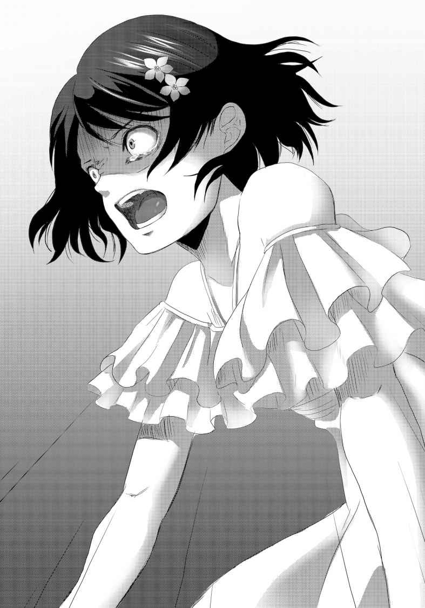
俺は叫び、その場に跪 いた。
どうして？ どうしてこんな結果になったんだ？
全員が助かる方法を選んだはずなのに、どうして？
何で往南なんだ？
何も、何一つもわからない。
『ゲームの敗者に粛清を』
モニターが切り替わる。人々の暮らしが営まれる町、広大な自然、ピラミッドも映っていた。映像に現れた人々は、一様に恐怖の顔を浮かべていた。
この映像は世界に流れている。オセアニアがどうなったかも目の当たりにしたはずだ。そして、アフリカ代表が敗北した。わかっているのだ。これから自分たちに何が起きるのか。
必死に逃げまどう人々の姿。走ればウィルスから逃れられると信じているかのように。
無駄とわかっていても祈らずにはいられなかった。
──どうか、逃げてくれと。
『アフリカ大陸《感染開始》』
逃げ惑っていた人たちが、一人、また一人と倒れていく。オセアニアの時と同じように、誰もが苦悶の表情を浮かべながら。
サバンナの動物たちにもウィルスは感染してしまうのだろうか。人間たちの勝手なゲームに付き合わされて、数えきれないくらいの野生の動物たちも死滅してしまうのだろうか。
映し出されたアフリカ大陸の地図に、赤い点が生じてどんどんと拡大していき、やがて全土を覆い尽くした。
そして、アフリカも滅亡した。
『一時限目は終了だ。初めてのゲームで疲れただろう？ これからの一日は自由に過ごし、明日に備えたまえ。明日は、二時限目を開催する。お楽しみに、だ。それでは《感染ＨＲ》を終了する。皆さん、さようなら。また明日』
言うだけ言ってＧＭはモニターから姿を消した。
「ちくしょう。ちくしょう。ちくしょう......！」
俺は膝をついたまま、あふれる涙を止められなかった。
悔しかった。往南を守れなかったことも、思いもしない犠牲者を出してしまったことも。
メンバーたちが一人、また一人と部屋を退出していく。出ていく際に、カルロスと美花さん、シャーナさんが俺に何か言っていた気がするが、全然耳に入らなかった。
多分、裏切り者とかそういう風に言われたんだろうけど、正直どうでもいい。
（どうでもいい......もう何もかも）
そんな風に思った時、肩にそっと手が置かれた。
「シルヴィア......」
振り返ると、そこにはシルヴィアが静かに立っていた。
「部屋に、戻りましょウ。ここにいても、仕方ないワ」
「何も言わないのか？ 俺のこと、裏切り者って言わないのかよ」
「アナタは自分が提案した通りの行動をしたとワタシは確信していル。ユキナを殺したのは、他の誰か......おそらくは、あの中に潜むＧＭヨ」
「そんな事、どうしてわかるんだよ」
自分が往南を殺していないのは、俺自身が一番よくわかっている。なのに、俺はシルヴィアに対しての攻撃的な気持ちを抑えられなかった。
俺を信じていると言われるのも、重荷に感じる。
殺気走った目を向けていたはずの俺に、シルヴィアは何ら怯 むことも無く言葉を続けていく。聞き分けのない子供を諭すように。
「アナタの手元には１枚のウィルスしか残っていないはズ。別に見せてくれとは言わないワ。間違いないでしょうカラ」
「......」
シルヴィアの言う通り、俺の手元にカードは１枚だけ、ノンナから送られてきたウィルスがある。ワクチンは０。ちゃんと予定されていた通りの残り方だ。
「そうなれば、アナタはユキナに８枚のウィルスと、７枚のワクチンをセットした事になる。つまり、どうやってもアナタではユキナを『発病者』には出来なイ。ユキナの手には、ウィルスが８枚しかなかったのダカラ」
「往南に、他の誰かが８枚全部、ワクチン抜きで送ったって言うのか？」
「それも無いワ」
「どうして？」
断言した物言いが、何だか癪に触ってしまい、またキツイ口調で問い返してしまう。
「アナタからの１枚を加えてウィルスを10 枚にするなら、手持ちの８枚を全て往南に送らなければならなイ。でも、そんな事をすれば、本来送るずだった相手にはウィルスが来ない事になル。自分がやったと教えているようなものヨ」
「ウィルスが送られて来なかった奴が、わざと黙っている可能性があるんじゃないか？ 犯人、ＧＭに恩を売ろうとして」
「殺した事を黙っててあげるから、自分は殺さないでくれ、とでも言うノ？ ＧＭは既に、アフリカとオセアニア、少なくても数億人の人をウィルスで死の淵へと陥れタ。そんな相手に、あまり賢い交渉とは思えないけれド」
「......それもそうか」
既に何億人も殺して、これからも殺そうってやつに、自分は殺さないで！ なんて交渉が通じるわけがない。
「......なら、どうやって往南は《発病者》にされたんだ？ あの作戦の中では、どうしたって不可能じゃないのか？」
俺の質問に、シルヴィアは少し迷った顔を見せた。
答えがわからないのではなく、答えを言って良いのか迷っている。そんな顔だった。
だが、シルヴィアは答えるほうを選んだ。
「......ユキナがウィルスを所持したままだったラ？」
「......やっぱり、か」
大体予想は付いていた。
《発病者》になった時の豹変ぶりからも、その可能性はすぐに思いついた。けど、やはり認めたくなかったのかもしれない。
「往南は、日本語が話せたんだな。しかもあんなに完璧に。最初から、俺たちを騙していた、って事なのか？」
「ワタシも、気付いたのは扉の前でノンナが話しかけてきた時ヨ」
「見た目に騙されてるとか、あれか？ でも、あれって、てっきりシルヴィアの事を言っているのかと」
「エエ。ワタシのことも言っていたのでしょうネ。でも、ユキナのことも差していタ。あの言葉は、あの場所にいた全員に言っていたノ」
「じゃあ、シルヴィアもその恰好で俺たちを騙してたのか？」
全員に向けられた言葉だったとしたら、往南は俺とシルヴィアを騙し、シルヴィアは俺と往南を騙していた。つまり、三人とも騙されていたから、ノンナは俺たち全員を嘲笑った、という事になる。
シルヴィアはホームズ帽を取ると、申し訳なさそうな顔を浮かべた。
「......ゴメンナサイ。詳しい事はまだ言えなイ。アナタもＧＭからの攻撃対象になってしまう可能性があル。ただ、そこは認めル。ワタシは、探偵とかシャーロキアンである事を理由に、この討論会へ呼ばれたのではないワ。母がシャーロキアンなのは本当だけれド」
「ＧＭからの攻撃対象？ 本当は何もかも知っているんじゃないのか？ このゲームがなんなのか、一体だれがこんな事してるのか」
「............」
「答えろよ！」
「......ゴメンナサイ。やはり今は言えなイ。とにかく、一つ言えることは往南は最初からワタシ達を騙していタ。まるで小動物のように保護欲を抱かせる事で、自分の身を守ろうとしたのでしょうネ。そして、アナタが提案した作戦の時、彼女はきっとこう思ったハズ──〝自分に《セット》をする相手をユートに出来れば、カードを温存できる〟。ワタシには猫を被っているのが見抜かれてしまった事を感じていたのでしょうネ。その証拠に、この部屋の前で扉が開くのを待っていた時、アナタがやってくるまで彼女はワタシに話かけてこなかっタ。通訳をしていたワタシの隣にも座らなかったワ。アナタを間に挟んだ席に彼女は座っタ。普通に考えれば、非効率極まりない席順ヨ」
「確かに、言われてみればそうだな......」
「全員があの作戦に賛成すれば、誰が誰にセットするかはそれほど問題ではないワ。お互いを信用することが大前提なのだかラ。でも、それでも彼女は危険性を可能な限り減らすために、アナタからセットされる側になりたかっタ」
「でも、そんな言動は特に無かったぞ。あの時はまだ、日本語を話せないフリをしていたわけだし」
「だから、アナタに時計を見せたのヨ」
「......え？」
「言ったでしょウ？ この作戦において、誰が誰にセットするかは大した問題ではなイ。まして時間も差し迫ってるなら、簡単かつ説明の不要な方法を選ぶのが当然。あの場面で、時計を見せられたアナタは、彼女の思惑通り『時計周り』でのセットを提案しタ。こうして安全を確保できた、と思った彼女はウィルスを大量に手元に残しタ。そしテ──」
「『発病者』になっちまった、ってわけか......」
守ろうと誓った相手が、キスされてドキドキした相手が、実は自分を利用しようとしていた、なんて認めたくない悲しい事実だった。
だけど、シルヴィアの推理以外の答えは考えられないだろう。往南は、自分の死によって俺たちを騙し、利用していたことを証明してしまったのだ。
「でも、そうなると往南を殺したのは誰なんだ？ まさかＧＭには、誰がどこに何枚セットしたか筒抜けになっているのか？ それじゃ、本当にどうにもならないじゃないか」
言ってみれば、ババ抜きでどのカードがジョーカーか見えているようなものだ。必要最小限の枚数で相手を感染者にし、自分の身を守ることが出来る、いくらなんでもそれじゃあまりにもチート過ぎるというものだ。
「イエ、それはおそらく大丈夫だと思うワ。席にはランダムで座ったから細工があるとは考えにくいし、始まってから確認しようと思ったらタブレットでという事になル。でも、見ていた限りではタブレットを何度も覗き込んでいる人はいなかったワ」
「じゃあ、往南が企んでいたことを見抜いていた奴って事か......」
「ワタシが一番怪しい、という事になるわネ」
自嘲気味にシルヴィアが言った。
だが、ここまでの会話で多少冷静さを取り戻していた俺は、その言葉を明確に否定する。
「往南が猫被ってたのには気付いていたとしても、カードの抱え込みを狙っていた事は、あいつが殺されてからしか気付けないだろ？ もし最初から気付いてたなら、時計周りでのセットを反対してたはずだ。それこそ、『逆時計周りにしよう』とでも言えば済むことだからな。往南の左隣はシャーナさんだった。精神的に大分参っていた彼女を、往南が信用できたとは思えない」
「......そうネ。ありがとう、信頼してくれテ」
「お前も、俺を信じてくれただろ。お返しだよ」
俺がそう言うと、シルヴィアは初めて見る柔らかな笑顔を見せた。
──こんな顔も出来るんだな。
ある意味で本性を隠していた往南もそうだが、女の子って本当に色んな顔を持っているのだと思う。
演技の天才だった真希の千変万化で慣れていたつもりだったのに、やはり見抜く事は容易じゃない。
──それこそ真希なら、どんな女の子でも演じて変装しちまいそうだよな。
ふと、俺は自分の考えが引っかかった。
それは疑惑なんてものでなく、むしろ願望と言えるかもしれないもの。
そうであって欲しい、という想いの方が強いかもしれない。
──バカバカしい。
俺は自分の考えを、打ち消した。
「明日以降のＨＲだけド......」
「あ、ああ。何だ？」
考え事をしていたのを悟られないよう、さり気なく返事をした。気取られるには、余りに恥ずかしい夢想だったから。
「ワタシは必ず生き残らなくてはいけなイ。だから、アナタには力を貸して欲しイ。アナタには、ワタシを信じて欲しイ。お願イ」
銀髪を垂らして頭を下げるシルヴィア。
シルヴィアには、ここに呼ばれた本当の能力も明かされていない。他にも隠している事はあるのかもしれない。
だけど、ここでシルヴィアと手を組まなかったら後はもう疑心暗鬼に流されて殺し合うゲームに取り込まれてしまうだけな気がした。
そうはなりたくない。たとえ、往南の時と同じようにシルヴィアに騙され利用されるだけだとしても。
「......わかった。ただ、シルヴィアが代表になった理由だけは教えて欲しい。今すぐじゃなくてもいい。明日のゲーム開始まで、考えておいてくれ」
「......わかったワ。ありがとう、涌井くン」
「勇人、でいいよ。俺も名前で呼んでるんだし」
「それじゃ、勇人くン。改めてよろしくネ」
「ああ、よろしくなシルヴィア。......これ以上ここにいても仕方ない。部屋に戻ろう」
肩を並べて部屋までの通路を歩いている最中、俺たちは一言も会話をしなかった。
昨日は往南も一緒に歩いた通路を、今はこうして二人で歩いている。それが、何とも言えず寂しかった。
程なく、シルヴィアの部屋の前にさしかかる。
「部屋で思い出したワ。〝もう一人の参加者〟のコト」
「ああ、何かわかったのか？」
「一時限目のＨＲ、不参加者による失格はいなかっタ。ワタシ達の思い違いだったのか、あるいは......」
思索にふけるシルヴィア。俺は黙って続きを待ったが、かけられた言葉は別の事だった。
「じゃあ、ワタシはここデ」
「あ、ああ。......一人で大丈夫か？」
「そ、それはどういう意味かしラ？」
妙に焦った表情を見せるシルヴィア。
一瞬、理由がわからなかったが、俺もすぐに諒解して同じように焦って言い訳する。
「そ、そういう意味じゃないから！ ほら、往南と二人で休むって言ってたから......」
そこまで言って、シルヴィアの表情が暗くなっている事に俺は気付いた。
さっきまで無言だった理由を口に出した馬鹿さ加減に俺は自分で恥ずかしくなる。
「......悪い」
「イイエ。冷たいようだけど、彼女は自業自得だっタ。それは事実」
「そうか」
こういう所は本当にドライなのだなと思う。
確かに往南は俺たちに対して猫を被って接近していたけど、だからって俺は彼女の全てを否定して、死んで当然だとは思えなかった。
何か事情があったんじゃないか、何か考えがあったんじゃないかって、そういう風に考えてしまう。
きっと、シルヴィアに話したら『甘い』と言われてしまうんだろうな。
「......彼女ハ」
「ん？」
「ユキナは、アナタには本当に......イエ、もう意味が無い事ネ。とにかく一度、お互いに部屋で休みましょウ」
「ああ、そうしよう。こんな時間に言うセリフじゃないかもだけど、お休み」
「ええ、お休みなさイ」
シルヴィアに見送られて、俺はさらに先にある自分の部屋へと向かった。途中で、ユキナの部屋の前を通る。
ここにはもう、誰も戻らないのだ。
自室に着き、鍵を開けようとポケットをまさぐった時に、小さな、本当に小さな声が俺の耳をくすぐった。
今来た通路の方へと目を向ける。
シルヴィアは、まだ部屋へ入っていなかった。
ドアにすがりつき、膝をついて、むせび泣いていた。声を押し殺して。
「ごめんネ。ごめんネ、ユキナ。アナタを止めてあげられなかっタ。一緒の部屋で休もうって、言ってくれたのにネ......ごめ、ん、ね......」
俺は自分の鈍感さをぶん殴ってやりたい気分だった。
シルヴィアも本当に割り切れてはいなかったのだ。それをドライだとか、何を考えていたのだろう。
かける言葉を見つけられない俺は、部屋へ逃げ込むしかなかった。
ポケットにしまいこまれたままの往南の手紙。それすら、今の俺は開く勇気を持てなかった。
【一日目・感染ＨＲ『一時限目』終了】
［敗者］
●三峰 海洋
●飛瀬 往南
［感染地域］
●オセアニア
●アフリカ大陸
ＬＥＶＥＬ ４
「う......ん......」
ベッドの上で俺は目を覚ました。
あの後、部屋へ戻った俺は倒れ込むようにベッドに転がり込み、そのまま眠ってしまったようだ。日が差し込む窓も何もなく、正直時間の感覚が狂ってしまいそうになる。
携帯電話で時間を確認するとPM05:07と表示されている。どうやら半日近く眠ってしまったらしい。
僅か三十分間の《感染ＨＲ》が、それだけ俺の精神を消耗させたんだろう。
酷い事があると眠れなくなると思っていたが、それ以上のダメージを精神が受けると、脳はかえって睡眠を欲するものなのかもしれない。
「よっと......」
体を起こした拍子に、ぐぅ、と腹がなる。そういえば朝から何も食べていない。
こんな時でも腹は減るのが、何だか腹立たしい。半ば気絶みたいなものだけど、寝ることもできているし、自分で思っていた以上に俺は神経が図太いのかもしれない。
「とりあえず、食堂で飯を調達するか」
着の身着のままで寝てしまったので、俺はタブレットとＩＤだけ持って食堂に向かった。
食堂には、先客がいた。
「こんばんは、人殺しくん」
「あ、あなた、よくもぬけぬけと私達の前に顔を出せたわね。この人殺し！」
「美花さん、シャーナさん......」
二人からの痛烈な皮肉と批判は、まだ少し寝ぼけ気味だった俺の目を一発で覚ましてくれた。
妙に苦々しい感触が口と胸に広がっていくのを感じる。
「ふふ、冗談やで。あのチビ殺ったんはアンタやないやろ。そんくらいわかるわ」
「え？ な、なんでですか？ あの人がやったに決まってます！ だって、往南さんにカードをセットする役割だったのはあの人なんですから！」
「あの作戦提案したんはコイツや。言ってみれば、誰が誰にセットするかをそこそこ自由にできたはず。ハナからチビを殺すつもりやったら、わざわざ自分をセット役にせぇへん。そやな、『逆時計周りにセットしよう』とでも言えば済むことやん。それだけで容疑者からハズレ、や」
先程、俺がシルヴィアに言った逆時計周り説が、美花さんの口からも出るとは思わなかったが、俺を容疑者から除外してくれているのはありがたかった。
横で聞いていたシャーナさんはまだ釈然としないのか、憮 然 としていたが。
「いつまで突っ立ってるん？ 相席してええで」
「......ありがとうございます。失礼します」
シャーナさんが露骨に嫌そうな顔をしたが、俺は美花さんに勧めに従い、適当にパンと飲み物を見繕うと、二人が並んで座っている長机の向かいの席に座った。
二人は既に食事を終えたのか、手元にはコーヒーカップだけしかない。
その脇には、ウィルスカードとワクチンカードが無造作に置かれていた。
俺の視線に気付いたのだろう。美花さんがカードを手に取ってウィンクした。
「ん？ ああ、これか？ 見ての通りのカードや。ウィルスが９枚、ワクチンが７枚あるで。すごいやろ」
「なっ!? 」
椅子をひっくり返しそうな勢いで俺は立ち上がった。
今朝、行われた作戦通りなら、そんな枚数のカードを持っている事はあり得ない。
俺の胸に一つの疑惑が湧き上がる。
「まさか、美花さん」
「勘違いせんといてな。ちゃんとアンタの作戦通り、ウィルス８枚、ワクチン７枚を芸術家くんにセットしたで。ウチは悪巧みはするが、一度した約束を裏切るような真似はせぇへんよ。誰かと違ってな」
クククと笑う美花さん。
どうやら、往南が俺たちを騙 していた結果、殺された経緯についても気が付いているようだった。
「......じゃあどうやって？」
「あのアホウの死体から抜き取ったん」
「三峰のカードを!? 」
「せや。ルール読めばわかるで。このゲーム『他人へのカードの貸し借り及び、強奪は禁止』って書かれとる。いいか？ よーく見ィ、『貸し借り』と『強奪』だけや。死んだ奴からくすねるのは、どちらでもない。そやな『拾得』ちゅーことや。ま、『ネコババ』とでも言うんかな？ まぁ兎に角、ルール違反やない。アイツはゲームに参加する前にくたばったからな。手つかずのカードがそのまま残ってたって寸法や」
「なっ......」
俺は絶句した。
ルール上は確かにそうかもしれないが、死体からカードを奪い取るなんて、考えただけでも不愉快極まりない。まして、三峰は突然血を吐き出して死んだ。そんな死に方をした死体になんて、誰だって触りたくないのが普通だ。
だけどこの人は、今こうして平然とコーヒーを飲んでいる。
俺は背筋がゾっとした。
「で、や。これを見せた以上はあんさんにも言わないかんことがある」
美花さんの目がギラリと好戦的な光を放つ。
「単刀直入に言うで。ウチに協力せえや」
「......協力？ それだけカードを持っていたら俺の協力なんかいらないでしょう」
「そんな事ァない。確実に落としたい相手がおるねん。せやから仲間は一人でも多く確保すんのんが正解やろ。とりあえず、シャーナちゃんは快く引き受けてくれたで。な、シャーナちゃん？」
「............」
複雑な表情を浮かべながら頷くシャーナさんの肩に、美花さんが馴 れ馴れしく手を回す。
シャーナさんはきっと美花さんの命令を聞くことで、安全を確保しようとしているのだ。
ＨＲ中、あれだけ怯 えていた姿を思い出す。自己紹介の時に見せていた冷静さは見る影もなくなっていた。三峰の遺体が転がり込んできたのも、シャーナさんの平静さを奪う要因になったのだろう。
そんな不安定なところへ、あの枚数のカードを見せられたら、素直に言う事を聞く道を選んでしまっても何の不思議は無かった。
俺も、ここで美花さんの提案を受け入れる方が安全で、楽なのかもしれない。
だけど──。
「一応確認しておきます。落としたい相手、というのは誰の事ですか？」
「決まってるやろ」
カップに残っていたコーヒーを、行儀悪く音を立てて飲み干し、まるで飢えた狼 のように瞳をギラつかせた。
「北米......いや、アメリカ、や」
──やっぱり、な。
予想通りの返事だった。
美花さんの狙いはシルヴィアではなく、アメリカなのだ。
この人は今でも、ゲームを自分の国の利益に出来ると信じているんだ。
「オセアニアやアフリカの姿を見たでしょう？ このゲームは何千万、何億って人を平気で殺すんです。これ以上続いたら、そもそも本当に世界が滅んでしまいかねない。それなのに、世界のトップとかそんな事を本気で考えてるんですか？」
「これはもう戦争や」
美花さんは静かに、そして確かに言い切った。
「アンタこそ、いつまでゲームしてる気分でいるんや。アンタが言った言葉そっくりそのまま返したるわ。もう何億人も死んでるんやし、これからも死ぬんやで。一週間無事に生き残って、ウチらが元気に外に出たとして、オセアニアやアフリカの連中に何て言うんや？ ごめんなさい、か？ このまま出てもウチらも大量虐殺の片棒担がされたみたいなもんやで。筋違いやろうと逆恨みやろうと恨まれ憎まれる。それやったら、国にとって有益な行動を取ればええ。そうすりゃ、立派に英雄やで。『我が国の敵を殲 滅 した英雄』ってな」
そこまで一気に言い終えると、既にコーヒーの入っていないカップに口をつけ、小さく舌打ちをした。慌ててシャーナさんが立ち上がり、厨房へとコーヒーポットを取りに行く。
「もちろん、タダでとは言わんで。中国が世界のリーダーになった暁には、日本を特別友好国にしたるわ。植民地にしてやりたいとこやけどなぁ。アンタも要職に就けたるで」
まるで自分が世界の王様にでもなったような口ぶりだった。
いや、少なくとも今このシェルター内ではそれに近いかもしれない。何せ、逆らったら殺せるのだから。
「......すいません。お断りします」
それでも、俺は首を縦に振る事は出来なかった。
あるいはＨＲ後にシルヴィアと話していなかったらこの誘惑に乗ってしまっていたかもしれない。
だが、約束した以上はシルヴィアを裏切ることは出来ない。
俺の返事は予想通りだったのか美花さんは不快感を示すことなく、むしろ小さく笑みすら浮かべていた。
「そか。ま、そんな気はしとったけどな。じゃあ、アンタはウチの敵に回るっちゅーことやな。残念や」
「俺の敵は、最初からこんなくだらないゲームを立ち上げたＧＭだけです。美花さんがどう思おうと、俺はメンバー内で戦う気はありません」
「メンバーん中にＧＭがおんのにか？」
ガチャン！
大きな音に、俺と美花さんは驚いて視線を向ける。
それは美花さんに持ってきたコーヒーのおかわりを、シャーナさんが床へ落として割ってしまった音だった。中身が床に撒き散らされ、コーヒーの強い匂いが食堂に立ち込める。
「あ、ご、ご、ごめんなさい。すぐに新しいのを淹れてきます......」
「ええよ。もう、部屋戻るしな。......ふふ、涌井ちゃんは驚いておらへんな。既に気付いとったのか、それとも......アンタがＧＭですっとぼけとるんかやな」
「それを言ったら、美花さんがＧＭの可能性だってありますよ」
「せやな。でもまぁ、ウチとしても、ＧＭの鼻はあかしてやらんと気がすまん。ゲームは利用させてもらうけど、ＧＭも絶対ぶっ潰したる。邪魔はさせへんで」
有無を言わさぬ雰囲気を醸し出しながら、美花さんは席を立った。
床に座り込んで食器を片付けているシャーナさんには目もくれない。二人の間には完全な上下関係が出来てしまったようだった。
「あ、涌井ちゃん。アンタの勇気に免じて最後に一つだけええ事を教え......いや忠告しといたるわ」
「何ですか？」
フフン、と少し愉快そうな笑みをこぼしながら美花さんは言った。
「マキちゃんには気を付けな」
「なっ......」
こういうのを、驚愕する、と言うのだろう。
なんで、美花さんが真希のことを知っているんだ？ それも、気を付けろってどういう事だ？
（真希が、生きてるって言うのか？）
困惑する俺の表情に満足したのか、美花さんは大きな笑い声を上げながら部屋を出て行った。取り残された形のシャーナさんも片付けを慌てて済ませると、その後を追う。
食堂へ一人残された俺は、美花さんの言葉の真意を測りかねていた。
真希は殺されたはずだ。それも、脱出不可能なこのシェルターに入るまでもなく、外で殺されてしまった。
もし、万が一真希が生きていたとしても、気をつけろ、なんていう言葉にはならないはずだ。単に、俺を混乱させ困惑させるためだけにあんな事を言ったのだろうか？
だが、そういう事をする人では無い気もする。美花さんは、『悪巧みはするが、約束は破らない』と言い切って、その通りのことをしたのだ。
そんな人が仲間入りを拒絶した俺に意趣返しをするなら、それこそ「次のＨＲでお前を発病者にしてやる」とでも言えば十分だし、美花さんならそう言いそうな気がする。
まさか、本当に、本当に真希が生きているのだろうか？
だとしたら、昨日俺の脳裏をよぎったように、この中に......。
「邪魔ですわよ。一体、何を一人で悶 えているのかしら？」
「う、うわっ！ ノ、ノンナ？」
「何ですの？ 人を幽霊みたいに」
いつの間にかノンナが入ってきていた。
大げさに驚いた俺に訝 しげな視線を向けるが、口に出しては何も言わず、厨房へと入っていった。パンと飲み物を取ってくると、少し離れた席で食べ始める。
その姿を、俺は何だかぼんやりと眺めていた。
視線が気になったのか、食事の手を止めるとノンナは俺を睨 みつけてきた。
「......何かしら？」
「いや......その、なんだ。今朝はごめん。せっかく、俺の提案に乗ってくれたのに、あんな結果になっちまって......」
「別にアナタがあの子を殺しただなんて思っていませんんわ。ドレッドヘアーと眼鏡は喚き散らしてましたけど」
「......」
薄々感じていたが、ノンナもまたシルヴィアや美花さんに勝るとも劣らない明 晰 な頭脳と、冷静な判断力の持ち主なのだ。
本職はフィギュアスケーターだというから、こういう子を文武両道と言うのだろう。
容姿も綺 麗 だし、何もかも持っている人、というのはいるんだなぁとしみじみ感じる。真希の才能もそうだったけど、見た目と中身は違うんだよな。
「その、相席いいか？ 話しておきたいことがある」
「............」
一 瞥 をくれると、ノンナは黙って食事を再開した。
それをＯＫのサインと受け取って、俺は向かいの席に座った。
そしてふっと、真希ともよくこうやって弁当を食べたのを思い出した。食べてるときにつむじが見えるのも真希みたいだ。また凹みそうになるのを振り払って、話しかけた。
「あの、さっき聞いたんだけど......」
美花さんが三峰から奪ったカードを保有している事を伝えた。
本当なら真っ先にシルヴィアに相談すべきかもしれないが、今ここにいないし、やはり全員に伝えておくべきだろう。
俺の話に、ノンナはパンを口に運ぶのを中断させる。
「フン、死体から剝 ぎ取るとは、悪趣味な事ですわね。せっかくの食事がまずくなりますわ」
「でも、圧倒的なカード枚数を持っているのは事実だ。ここに来る時、すれ違ったろ？ お前には提案が無かったのか？ 仲間になれ、とか」
「いいえ。妙に勝ち誇った間抜けな顔をしていただけですけど、納得しましたわ。彼女、いえ、中国から見れば私のロシアも潰したい国の一つでしょうから。誘われなかったのは当然でしょうね。わざわざターゲットに銃の残弾を教える殺し屋はいませんもの」
ロシア人らしい（？）表現で感想を聞かせてくれた。
（そっか......。でも、俺を誘って断わられた以上、カードの枚数と、ターゲットにしていることがシルヴィアの耳に入るのは間違いないだろ？ ノンナの言葉を借りれば、殺し屋が弾数を教えてるようなものだよな。なのに、気にしている様子は無かった......もしかして......）
俺は美花さんが去り際に言っていた事を思い出す。
あれが、シルヴィアのことを差しているのだとしたら？ それに気付いた俺が、シルヴィアを警戒して美花さんのカード枚数を話さないと読んだのだとしたら？
美花さんが言う『マキ』とはシルヴィアを差している事になる。
「ちょっと、話しかけておいて勝手に黙らないでくださるかしら？」
見ると、ノンナが腕組みをして俺を睨んでいた。
こいつ、機嫌悪くなると腕を組む癖があるよな。昨日から何度見たことやら。
「あ、ああ悪い。美花さんが変な事を言っていたのが気になってさ」
「変な事？」
この時、俺はノンナにこの事を話すかどうかを躊躇 った。真希のことを全く知らないノンナに話した所で、特に意味があるとも思えなかったからだ。
だけど、黙っている意味も無い、と考えた。何か意見が貰 えるかもしれない、とも。
「美花さんがこう言ったんだ。『マキちゃんには気を付けな』って」
「......！」
ノンナの表情が一瞬強張ったように見えたが、気のせいだったかもしれない。
いつも通りのポーカーフェイスのままだ。
（......でも）
不思議と、垣間見えたその顔が、俺には見覚えのある気がした。
何故そんな風に思うのか、それはわからないけれど。
「......なんのことやら、ですわね」
「だろ？ メンバーの中で『マキ』って名前はここに入る前に殺されちまった俺の幼馴染みしかいない。でも、その真希に今さら気を付けろだなんて、言われる意味がわからない。それとも、本当は真希が生きていて、ここに潜り込んでいる、とか？」
バカバカしい、実にバカバカしい考えだった。
昨日、ふと俺の脳裏に浮かんだ願望に近い与太話だ。
もしそうだったとしても、真希がこんな事をする意味が無いし、何より幼馴染みである俺が気付かないわけがない。
「ごちそうさま」
「へ？」
ノンナは食器を厨房へと持って行き、そのまま席には戻ってこなかった。まっすぐ出口の方へ進むと、一度もこちらを振り返らずに出て行ってしまった。
俺の話に、特に何の意見も反応もしないままに。
「何だったんだ、アイツ......」
ともあれ、俺もいい加減何か食べないと腹が悲鳴を上げている。
その後でシルヴィアに相談しに行こうと決めて、俺はただパンを口に押し込んだ。バターやジャムがついていたとしても、こんなところで食べるパンは何の味もしないだろう。
「やぁ、一人かい？」
ノンナと入れ替わるように、今度は貴志が食堂へ入室してきた。
「ああ。貴志も夕食か？」
「うん。絵を描き続けだったんでね。いささかお腹が空いたよ」
見ると、白衣が極彩色になっていた。今朝の《感染ＨＲ》時には何の汚れも無い真っ白な状態だったのに。
厨房へ入った貴志は、しっかりご飯とみそ汁、そしておかずにソーセージをお盆に乗せて戻ってきた。ヨーロッパで活躍する芸術家、というイメージとは何だか離れている気がする。
そんな疑問が顔に出ていたのか、貴志は箸を進めながら笑う。
「僕はご飯派なんだ。滞在先でも、日本食以外はほとんど口にしないよ。芸術面においては欧州で学ぶことはたくさんあるけど、食文化に関しては日本の方が上だと思っているよ。あくまでも僕の持論、だけどね。それにしても、朝は災難だったね。軽々しく言うべきではないかもしれないけど、心中お察しするよ」
「......俺がやったって疑わないのか？」
「そういう事には興味が無いよ。君が無実でも、ＧＭであっても、どちらでも構わない、が本音かな。どちらにせよ、災難であることには変わりないだろう？」
「まぁな。て言うか、随分喋 るんだな。もっと無口なのかと思ってたけど」
「僕だって『絵を描いている時』と『何もしてない時』の使い分けくらいはあるさ。オフの時はテレビゲームもするし、漫画だって読むよ。何でも絵に結び付けたがる人が多くてうんざりするから、余り公言しないけどね」
そう言って味噌汁をすする貴志を、俺は意外な気持ちで見ていた。
思っていた以上に多弁だし、何より今の言葉『俺がＧＭでも構わない』ということは、こいつもメンバーの中にＧＭがいると見抜いている事になる。
一つの分野に突き抜けると他のことが疎かになる、なんて話を聞いたことがあるが、それは能力の欠如ではなくて、今まさに貴志が口にした通り興味の欠如なのだろうと思う。
才能の持ち主とは、他のどんな事に対しても鋭敏な感覚と、優れた能力を持っているものなのだ。ただ、専門分野以外に情熱が全く向かないだけで。
──真希も、そういう所あったよな。
オンとオフ、の切り替えも昨日話してくれたばかりだ。こういう所はやはり共通する面が多いと思う。
そんな事を考えているうちに、貴志は綺麗に食べ終わり、食器を厨房へ返しに行った。
戻ってくる際に、二人分のお茶を持ってきてくれた。
「サンキュー。なんか、こういう気が利くのも、言っちゃ悪いかもだけど、イメージと違うよな」
「天才なんて言われていても、結局は人間さ。本当に常識外れな事をしているだけでは生きていけないし、本当にそんな天才がいるとすれば、周囲が許してるだけだよ。僕に当てはめるなら『絵さえ描いていればそれでいい』ってね。それじゃ、周りの都合で動かされる人形同然だ。僕の絵の才能が人を喜ばせる力があるなら嬉 しい。でも、僕はやっぱり自分の為にこの才能を使いたいし、絵を描きたいからね」
言い終えると、貴志は口の渴きを癒すようにお茶をすすった。
俺も運んで貰ったお茶を口に運ぶ。
「それが、貴志が『ワン・オフ・アーティスト』って呼ばれる理由だったりするのか？」
「んー、どうなんだろうね。同じものを描いてくれ、と頼まれたことはあるよ。でも、同じものを描きたいと思ったことは無い。だから、そういう事なのかもしれないね」
依頼された以上は、それなりの報酬だって出るのだろうけど、それを気が進まないという理由で断ってきたという事だ。
ストイックとも言うべきそんな姿勢に、俺は親しみを覚えた。
「貴志のそういう所、俺が知ってる奴によく似ているよ。あいつも、人に流されるのを嫌うタイプだった。芸能界とかテレビとか、どれだけ誘いが来ても断ってたから。......ここに来る前に、初めて映画の話を受けた、とか聞かされて驚いたけどね」
「瑠河真希さん......だったよね、君の幼馴染みで、本当の日本代表」
「ああ。舞台役者なんだ。世界的な評価も受けたことがあるんだ。演劇って結構、年功序列な世界みたいでさ。苦労してるけど、そういうの表に出さない奴だったよ」
「そっか。どこも同じさ。会ってみたかったね、瑠河さんに。君も一緒に、三人で話をしてみたかった。その映画を観ながら、ね」
「ありがとう。そう言ってもらえるの、スゲー嬉しいよ」
何の飾りも無い、俺の素直な想いだった。
「そうだ、涌井くん。少しだけ待っててもらえるかな？ すぐに戻ってくるから」
そう言うと、貴志は俺の返事も待たずに食堂を退出して行ってしまった。
そして言葉通り、数分と待たずに貴志は食堂へと戻ってきた。大きなクロッキー帳を抱えている。
「お待たせ。えーっと、確かこの辺りに......あった！ これ」
貴志はクロッキー帳をペラペラとめくると、俺に見せてきた。
それを見た俺は目を真ん丸くさせる。
「これ......真希じゃないか！ 一体、いつ......会った事無いって言ってたよな？」
「うん。これは瑠河さんの初めてのパリ公演の舞台を観に行った時に描いたんだ。ああいう場所は撮影は禁止だけど、スケッチは禁止されていないからね」
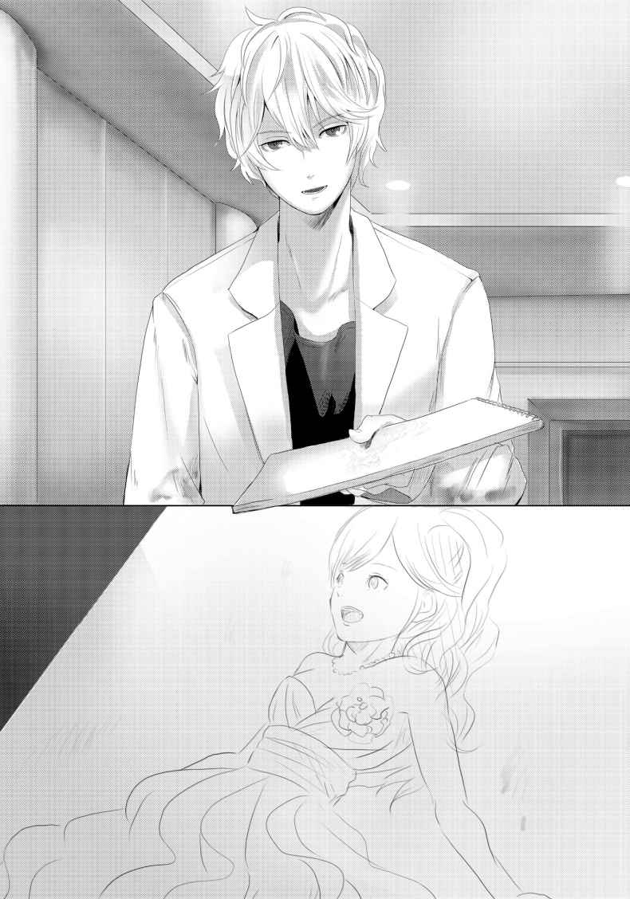
続けて芝居の感想を何やら語っていたみたいだったが、既に俺の耳には届いてこなかった。
この衣装は、俺も観に行った舞台のだ。俺が行ったのは凱 旋 公演となった東京のだけど。
昨日まで一緒にいたのに、絵の中の真希がとても懐かしく感じられて、俺は涙が止まらなかった。
「良ければ、そのクロッキー帳ごとあげるよ」
「え？ い、いやそんなの悪いよ。て言うか、貴志の絵が描かれてるクロッキー帳なんか貰えないって」
簡単にあげるといわれても、間違いなくこれはとんでもない値打ちものだ。
「その、嬉しいけど、もらえるなら真希のページだけでいいよ」
「いや、ページが抜けたクロッキーを使うのは好きじゃないんだ。それに、丸ごとあげるつもりで取ってきたんだしね。瑠河さんのこと、そして僕の話を判ってくれた君なら、どこかに売ってしまったりはしないだろう？」
「当たり前だろ。そんな事するくらいなら、貰わないほうがマシだ。真希とも、貴志とも、仲良くなれたことを利用するような真似だけは俺は絶対したくない」
俺は真っ直ぐ貴志を見つめ返した。
真希ともそうだった。
あいつは才能があって、俺よりもずっと凄い世界で頑張っているのに、俺なんかと対等に接してくれた。今の貴志もそうだ。
取り柄のない俺に出来るのは、その信頼を決して裏切らない事だけだ。
「うん。そう言ってくれると思ったよ。だから、受け取って欲しい。こんな場所、こんな状況だけど出会えた友人への贈り物だと思ってくれれば幸いさ」
「サンキュー、貴志。大事にするよ。......明日以降の《感染ＨＲ》、絶対に生き残ろう。前に興味ないなんて言ってたけど、俺を友人って呼んだからには勝手にゲームオーバーなんかさせねーからな」
「フッ、そうだね。なんだかんだ僕も、ここで描いたものがあるし、ここを出て描きたいものもある。絵に関係ないこと、とは言えなくなってきたみたいだ。努力することにするよ。僕自身の目的のためにも、ね」
貴志は少し笑って、湯飲みを掲げて見せた。
俺もつられて自分の湯飲みを上げた。
すっかり冷めてしまったお茶で誓いの乾杯をした。
＊
貴志と別れ、食堂から先にエントランスへと戻った俺は、貰ったばかりのクロッキー帳を手に抱えてめくりながら歩いていた。
人物画だけではなく、風景や静物も全て鉛筆の濃淡だけで描かれている。美術の先生がデッサンは才能よりも技術と、それを習得するための努力だと言っていたのを思い出す。素人の俺が見ても感心するようなデッサンを描くために、貴志はどれほどの努力をしたのだろうか。
そして、この中に描かれていた真希もまた、天才女優と呼ばれるようになるまでどれだけの努力を重ねたのだろう。
そんな努力の積み重ねを、死は理不尽に奪い去ってしまうのだ。これ以上、ＧＭの好きにさせるわけにはいかない。
「あ、メンバーの絵も描いてたんだな、貴志の奴」
めくっていった先のページには《感染ＨＲ》メンバーの絵も描かれていた。
三峰の絵は血を吐いて倒れた時のもの、そして往南の絵は本性を剝き出しにして俺とノンナを罵倒している時の姿だった。
改めて見せられると、胸を締め付けられる思いがする。だが、かと言ってこのページだけ破るような真似もしたくなかった。
それはクロッキーを譲ってくれた貴志への裏切りだと思うから。
「......ん？ 俺の絵は描いてないんだな。ノンナのもない」
俺なんか確かに描いたって何にもならないだろうし、実際ついさっきまで俺のことは芸術的に興味が湧かない対象だ、みたいな事も言っていたので、別に不思議ではないけど、ノンナを描いていないのは何だか妙な感じがした。
貴志にとって、ノンナはインスピレーションを与えてくれる人間ではないという事なのだろうか。カルロスよりノンナを描く方が余程楽しい気がするんだが。
そんな事を考えながら歩いていると、通路の方から話し声が聞こえてきた。
女子の声なのはわかったが、誰と誰の声なのかまではわからない。エントランスから通路への入り口部分で、俺は少し身を隠すように通路を覗 き込んだ。
（シルヴィアと......ノンナ？）
通路に立っていたのは、シルヴィアとノンナだった。
（何の話をしてるんだ......）
バレないように、耳を二人の会話にそばだてる。
盗み聞きなんてあまりしたくないけど、のこのこ出て行った所で二人は話の内容を教えてくれない気がした。
「違う......」
「あなたは、やはりマキ......」
（真希!? 今、真希って言ったよな!? ）
どっちがどっちに対して言ったのかまではハッキリと聞き取れなかったが、間違いなく真希という名前を口にしていた。
──しかも、あなたが真希、だって？
どくん、と胸が高鳴る。まさか、本当に真希が生きているのか？ 俺の空想なんかではなく、あの二人のどちらかが、真希が変装した姿だとでも言うのか？
もし真希の変装だとして、幼馴染みの俺が気付けないなんてことがあるのだろうか。
（いや、真希ならやってのけちまうかもしれない......）
そんな気もする。
あの真希なら、天才女優なら実の親にだって正体を見破られずに他人になりすませるだろう。
──でも、だとしたら何のために？
真希は元々討論会へ招待されていたゲストなのだ。わざわざ変装なんかしなくてもここへ入ることが出来る。
もし、何かしらのイベントの一環だとしても、この状況下ならばもうとっくに名乗り出た方が良いはずだ。わざわざ正体を隠したままでいる必要が無い。
いや、必要は一つだけあった。それは、最も考えたくない可能性。
──真希がＧＭだから。
それなら、正体を隠して潜伏し続けている説明がつく。
「盗み聞きとは感心しませんわね」
「っ......！ ノンナ......」
いつの間にかエントランスへ戻ってきていたノンナに声をかけられ、俺は我に返った。
シルヴィアの姿は見えない。部屋に戻ったのだろうか。
「今の話、どういう事だ？ 真希って、どっちがそうなんだ？」
「マキ？ ああ、それでしたらあの女の方で......」
ノンナが話を終えるよりも前に、俺は思わずノンナの肩を摑 んでいた。
「な、何を......」
「本当なのか!? 本当にシルヴィアは真希なのか!? 真希は、生きているのか!? 」
激しく揺さぶられたノンナが、苦悶の表情を浮かべる。
「い、痛いですわ......」
「あ、悪い......」
俺は謝罪し、ノンナの肩から手を放した。
ノンナは少し非難めいた視線を俺に向けたが言葉にはしなかった。
「それで、どうなんだ？ 真希は生きているのか？」
「生きているか、と聞かれれば生きていますわ。今さっき部屋に戻っていきましたし」
「そんな......何で俺にあいつは俺に教えてくれなかったんだ!? 」
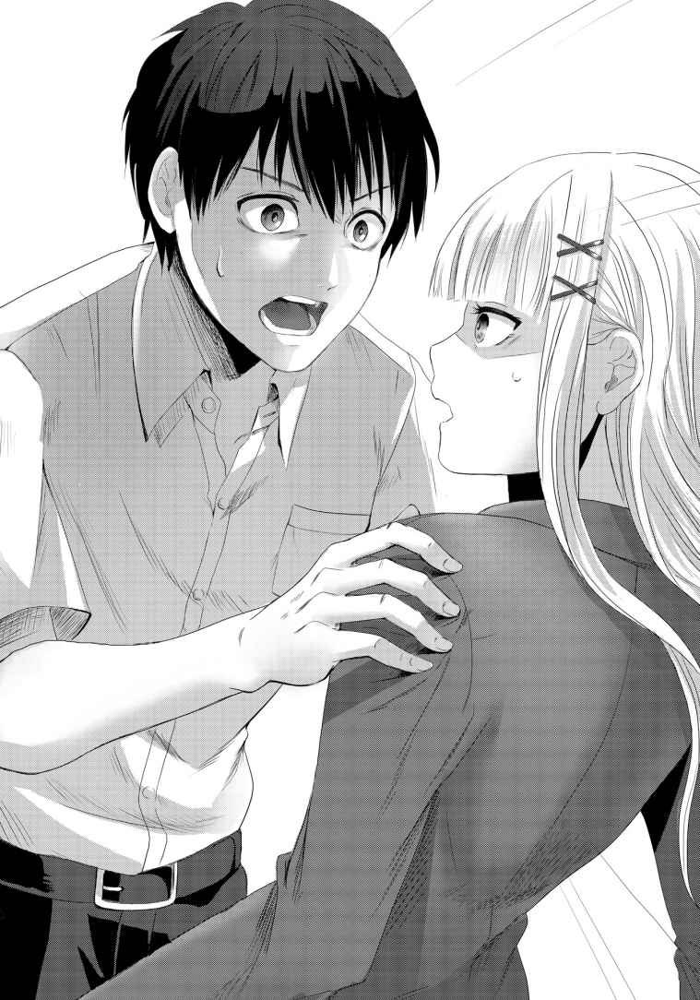
「それは、直接本人からお聞きすれば良いのではないかしら？ 私はあくまで確認しただけ。隠していた理由なんて容易に想像できますし」
言われなくてもそうする。
俺はノンナに一言かけると、シルヴィアの部屋へと走った。
「真希！ 開けてくれ！ 真希！」
乱暴にブザーを鳴らし、ドアを激しく叩きながら、聞こえないとわかっているのに声を上げて中にいるシルヴィアを、いや真希を呼んだ。
「真希！」
ガチャリ、と鍵が開く音がして、小さくドアが開かれる。
小さな隙間から、シルヴィアの銀髪と、蒼い瞳が覗けた。
「あけてくれ、真希！ 話がしたいんだ！」
「......！ 勇人くン、どうしてそれヲ？」
「ノンナが教えてくれたんだ！ 頼む、全部話してくれ！」
「......そウ。わかったワ、入っテ」
そう言って扉を大きく開け広げると、シルヴィアは俺を部屋の中へと招き入れてくれた。
「適当な所に座っテ」
そう言うとシルヴィアは簡易キッチンの方へと向かう。
俺は言われた通り、ベッドへ腰かけた。
内心は一秒でも早く問いただしたい気持ちで一杯だったが、逸る想いを何とか押さえつける。ここでまた、はぐらかされるわけにはいかない。
少しすると、シルヴィアが湯気の立ち上るコーヒーカップを二つ持って戻ってきた。片方を俺へ手渡すと、隣に並んでベッドへ腰かける。
「さて、ト。どこから話せばいいかしらネ」
コーヒーカップを口につけるシルヴィア。
俺には真っ先に訊きたいことがある。
「お前は真希......なのか？」
俺の質問に、シルヴィアはすぐには答えなかった。
静かにカップをソーサーへ置くと、小さく深呼吸する。
俺はその所作を邪魔せず、返事を待った。
「......そうヨ」
「何で......」
返ってきた答えは、肯定。
俺は、この返事を望んでいたのだろうか？
それとも、否定して欲しかったのだろうか？
「何でこんな事をしたんだ!? てっきり死んだとばかり......」
「死んダ？ 何を言っているノ？」
「だって、お前は上で殺されたんだとばかり思ってたんだぞ！ モニターにだって写って......変装までして何で俺に本当の事を言わなかったんだ!? 」
「勇人くン。アナタが何を勘違いしているのかわからないけれド、ワタシは死んでいないし、変装もしていない」
一瞬、シルヴィアが何を言っているのかわからなかった。
そして、次の一言は俺をますます困惑へと引きずり込んだ。
「ワタシの別名は、マキ──シルヴィア＝マキシマ。アナタの言う真希さんではないワ」
「──は？」
一体何を言っているのだろう。
マキだけど、真希じゃない。
苗字がマキ？ だって、最初の自己紹介でノーマンって......。
「ワタシ、小さい頃日本に住んでいたノ。まだ小学校にも上がる前。あの頃はハーフであることがコンプレックスだっタ。母譲りのこの髪も瞳も、自分だけが周りと違うみたいで好きになれなかったワ」
とつとつと昔語りを始めたシルヴィアの話を、完全に整理が追い付かなくなった脳でなんとか処理していく。
「だから、父の姓をもじって名乗ってたノ。槙島、だからマキ。どウ？ マキなら日本の女の子の名前でしょウ？ そう名乗りだした頃、ワタシはある分野で天才少女と呼ばれ始めていタ。その分野でもマキは通名だったノ。ふふ、文字通り頭でっかちな子供だったワ」
懐かしそうなシルヴィアの言葉は、完全に思考停止した俺の前を流れていくだけだった。
とにかく一つ。たった一つ確認しないといけない事があった。それだけは、混乱した脳でもちゃんと把握できている。
「じゃ、じゃあお前は、シルヴィアは真希じゃないんだな？ 俺の幼馴染みの瑠河真希じゃないんだな？」
「エエ。何故そんな発想に至ったのかわからないけれド、ワタシはシルヴィア＝ノーマン。アナタの幼馴染みではないワ」
「そっか......」
良かった、と言えば良いのか、それとも残念だ、と言えば良いのだろうか。
どちらも当てはまり、どちらも違うような気がした。
ただ、今の俺は憑 き物が落ちた気分だった。
「そうであって欲しいって気持ちが先に出ちゃったんだな。あんな状況で、生きていられるはずがないのに......」
外にいた人たちが次々と倒れる中、血だまりの中で横たわっていた真希の姿を思い出す。
「真希さんじゃなくてゴメンナサイ、とでも言うべきかしラ？」
「悪かったよ。......話の続きを聞かせてくれ。お前が今言っていた『ある分野』ってのが、討論会に呼ばれた理由......なんだろ？ 美花さんも、ノンナも知っているような口ぶりだった。俺にも教えてくれないか」
シルヴィアは、暗く沈んだ表情で俺の疑問を聞いていた。無言のまま、カップに残っていたコーヒーを飲み干す。
話してくれるまで待つつもりだったが、すぐに表情と気持ちを切り替え、俺の目を真っ直ぐ見据えて話してくれた。
「バイオ研究。とりわけ、細菌やウィルス及びそのワクチンの開発生成を行う研究チームの若きプロジェクトリーダー。それがワタシがここへ呼ばれた理由。そしテ......」
決意を秘めた表情で、シルヴィアは決定的な一言を口にした。
「昨日、オセアニアとアフリカに散布されたウィルスの開発者ヨ」
俺は、昨日と今日だけで一体どれだけの回数、耳を疑ったんだろうと思う。一生分の耳への疑惑を使い果たしてしまったんじゃないだろうか。
この二日間の経験から知ったのは、耳を疑う時は、得てして耳はちゃんと仕事をしているということだ。
そして、俺の胸中に一つの疑惑が浮かぶ。
「じゃ、じゃあ、まさかお前がＧＭ、なのか......？」
「チガウ！」
シルヴィアは声を荒げつつ、はっきりと否定した。
「違うって、だってお前が作ったウィルスなんだろ!? それが使われているなら、作った本人が一番怪しいじゃないか！」
「お願い、信じテ！ ワタシは、ＧＭなんかじゃナイ！ ワタシは......」
「どっちにしたって、お前が作ったウィルスでとんでもない数の人間が死んだんだぞ！ 明日のＨＲの結果次第じゃもっと！ 何とも思わないのかよ！」
「だからワタシは生き残らなくてはならないノ！」
「！」
シルヴィアが叫んだ。
ポーカーフェイスの生きた見本みたいな女の子が、目に涙を一杯に浮かべて、唇を震わせて、でもその瞳は真っ直ぐ俺を捉えて決して離そうとはしない。
「......言い訳になるけれド」
ぽたぽたとシーツに流れ落ちる涙を拭 うことすらせず、シルヴィアは語り始める。
「殺人ウィルスなんて作りたかった訳じゃないノ。ワタシの父は、ワタシをお金儲けの道具にしか考えていない人だっタ。だから、ある組織にワタシを売ったノ」
「............」
「売った、と言っても酷い目に遭わされたわけではないワ。閉じ込められていたとかそういうわけでもナイ。むしろ、待遇はとても良かった位ヨ。研究環境が整っていたし、飛び級で大学にもいったワ。そこでワタシは何が組織の目的かも知らず、ただ大人たちに望まれた研究と、開発を行っていたワ。そして、ある日施設は米軍によって攻撃、制圧されタ。その時、ワタシは『保護』されたノ。二ヵ月ほど前の事だったかしラ」
シルヴィアの話に、俺も思い当たることがあった。
「二ヵ月前......俺もニュースで見た。アメリカで研究施設が襲撃されて、研究者や警備員が何人も死んだって」
「あれは真実ではないノ。本当は組織の幹部と警備員が米軍に殺害されタ。アメリカ国内で反社会的な組織によって細菌兵器の研究と開発が行われていたなんて、発表できるわけがないでしょウ？ ワタシへの罪状追求も無かったワ。サイエンスの世界では既に名は通っていたし、政府側とのある種の取引によってワタシは母の祖国である日本に帰ってきたノ。そしてこの討論会に呼ばれタ。もちろん、ただの高校生イベントに参加する気なんてなかったワ。でも、討論会に組織の影が見られると諜報機関から連絡を受けタ。参加するしかないでショ、自分の研究から逃げられはしないワ。結果は、この通りだけどネ」
話すことは大体話した、とばかりにシルヴィアは大きく溜 め息をついた。
「まさか、こんな大がかりな事を計画していたなんテ、それもワタシが作ったウィルスを使っテ......。悔やんでも悔やみきれなイ。どれほど謝っても許される事ではないワ。覚悟はしていル。ここから出られたら、どんな裁きでも受けル。ただ、その前に血清だけは開発しなければならなイ。あのウィルスは爆発的な感染力を持っている代わりに、死に至るまでに時間がかかル。長い時間人を苦しめる残酷なモノだけど、今この状況においては逆に希望足りえル。だから、何が何でも出なければならなイ。絶対に生き残らなければならないノ」
とめどなく涙をこぼしながら、シルヴィアは俺に訴えてきた。
シルヴィアの本当の気持ちは、俺なんかには到底想像もつかない。まさに、想像を絶する。
でも、罪滅ぼしでもなんでもなく、助けるために生き残りたいと訴えるシルヴィアの気持ちはよくわかった。
ならば、支えたい。
俺は素直にそう思った。
目の前の少女を守って、ここから出すことが、希望に繫 がる。
それが、世界を救う事に繫がるのだ。
「じゃあ、一刻も早くここを出ないとな」
「......勇人くン。エエ、そうネ。でも、ＨＲは残り四回。それを生き残らないと外には出られなイ......」
「なら、ルールを変えてしまえばいい」
「え？」
シルヴィアが驚きの表情で俺を見上げた。
今まで俺の方が驚かされる事ばかりだったから、何だかしてやったりの気分だ。
まぁ、でもその事 を思いつけた自分にバンザイだった。
「勝手にそんな事が出来るわケ......」
「勝手に変えちゃうんじゃないさ」
俺はこんな時でもカッコつけて返事をした。
いや、シルヴィアの前で一度はカッコつけてみたかった。
「ＧＭに、自分から変えさせるんだから」
＊
シルヴィアと打ち合わせを済ませ、自室に戻ろうとした俺は、部屋のドアへ背をもたれかけて立つ人影に気づいた。
「ノンナ......？」
「随分と長話でしたわね」
両手を組み、俺を睨みつけるノンナ。
（あれ......？）
何だろう、今の感覚。どこかで覚えがあるような......。
「あの女の正体はわかったかしら？ 何やら勘違いをしているみたいでしたけど」
「ああ、ちゃんと教えてもらったよ。それに、真希がやっぱり生きてないって事も、けじめがついた」
「そう。そもそも、どうしてそんな発想をしたのか理解に苦しみますわね。あなた自身が見たでしょう？ 血だまりの中で横たわる彼女の姿を」
「願望......だったんだろうな。生きてて欲しいって、そんな願いにしがみ付きたかったんだと思う。だけど、もう大丈夫だ」
俺はノンナに笑ってみせた。
正直、うまくいった笑顔とは思えないけど。
「つか、お前もしかして俺の心配してくれたのか？」
「な、何を言っているのかわかりませんわ。くだらない」
「ありがとうな」
「......フン」
鼻息荒く俺に一睨み入れると、ノンナは自室の方へと歩いて行った。
後姿を見送りながら、俺は決意を新たにする。
──みんなで一緒に外に出ようぜ。
その為にも、明日の《感染ＨＲ》で、俺は戦わなければいけないんだ。
生か死か。
文字通り、命を賭けて。
＊
三日目の朝、午前九時。
《感染ＨＲ》の会場である部屋の電子ロックが解除され、扉がゆっくりと開く。
恐る恐る入って行ったが、昨日殺された三峰と往南の遺体は既に無かった。全員が出た後、いつの間にか片付けられたようだ。おそらくは、ＧＭの手で。
往南も、そして三峰の野郎も、せめて遺体は地上へ戻してやりたかったけどな。
残りの参加者を見渡す。
美花さんと、とりまきのようにシャーナさん、そしてカルロスの姿がある。
自分を選ばれた者だの、自分の為に他人に死ねだの言っていたが、それは死への恐怖の裏返しだったのだろう。とにかく死にたくないって思っている人間に、ウィルスカード９枚は強烈な脅迫の道具だ。
貴志とノンナは、俺と美花さんの中間に立っている。そのまま二人の立場を示しているかのようだった。
そして、俺の横にはシルヴィアがいる。
ウィルスを作ってしまった張本人でもある銀髪の美少女。
第二回目のＨＲを、最後のＨＲにするための、俺の相棒。
「なぁ、そういえばもう一つ気になってることがあったんだ」
「なぁニ？」
秘密を打ち明けられてから、シルヴィアの語り口調が少し柔らかくなった気がする。前までのクールな口調も良かったけど、こっちのが可愛いかな。
「どうしてホームズの恰好なんかしてたんだ？ そりゃ、ウィルス作成者なんて面と向かって言いづらかったのはわかるけど、科学者だとでも言えばいいし、それに、組織が完全に絡んでるのに気付いたのは中に入ってからなんだろ？」
「そんなの、決まってるでショ？」
「ん？」
「ウケると思ったからヨ」
「............」
真顔で言われた。
「そんな理由かよ。でもまぁ、俺にとっては名探偵さ。頼むぜ、銀髪のホームズさん」
「エエ。頑張りましょう、頼れるワトソンくン」
俺は頷き、昨日と同じ席へと座る。
右隣にはシルヴィア。
左隣は空席になってしまった。
これ以上、空席は作らせない。
『揃 ったようだね。では、《感染ＨＲ》第二時限目を始めるよ』
ＧＭのアナウンスが流れ、天井からモニターがゆっくりと降下してくる。
美花さんは自信ありげに笑っている。
カルロスはそんな美花さんにへらへらと愛想を振りまいている。
シャーナさんは青い顔をして縮こまっている。
貴志はまたブツブツと何事か呟きながらモニターを見上げている。
ノンナは好戦的な目を全員へ向けている、
シルヴィアは俺の隣で静かに時を待っていた。
俺も、それに倣う。
『準備はいいかな？ では、二時限目の開幕を宣言する！』
俺とシルヴィアの賭けが、いよいよ始まる。
ＬＥＶＥＬ ５
「ゴメンナサイ、ＧＭ。開始前に一つ提案させてもらいたいノ」
挙手しながらシルヴィアが発言した。
返事は無かったが、構わずシルヴィアは続けていく。
「ちょっとだけルールを変えて欲しいノ。難しいことではないワ」
美花さんグループがギョッとした顔でシルヴィアを見る。
それはそうだろう。まがりなりにも一回目のゲームは終わり、死者も出ているのだ。今になってルールを変更してくれ、などと普通で考えれば通るはずがない。
だが、ここを通さないと先に進まない。
それは、シルヴィアと俺とで話し合った結論だった。
シルヴィアは提案を続けていく。
「アナタの、ＧＭの言葉が録音されたモノであって、ライブじゃないとは気付いているワ。そして、この生き残った七人の中に、ＧＭが紛れ込んでいることモ」
相変わらず反応は無い。
無理やりゲームを開始しろ、と言ってもこない辺り、相手も様子を窺 っているのだろう。
「だから、もうＧＭも無理な会話をする必要は無いワ。こちらの話には肯定、否定と分かる音声を使って答えてくれればイイ。その位の操作は出来るでしょウ？」
ほんの少しの沈黙の後。
『そうだね』
そんな音声が返ってきた。
（よし、乗ってきた！）
ここからが正念場だ。
とにもかくにも、こちらの言葉にＧＭが直接返事をする形を作り上げる必要があった。
そうしないと俺たちに勝ち目がない。
「やっとアナタと会話ができますネ。もう少しだけよろしいかしラ？」
『そうだね』
会話の流れとしてはおかしいが、肯定的な一言はそれしかなかったのだろう。まぁ、意味は通じるから構わないのだが。
「このシェルターは現在閉鎖されて、誰も出入りすることは出来なイ。でも、アナタにはそれを解除する権限があル。どうカシラ？」
『そうだね』
これも成功。
つまりは、ＧＭを突き止めてとっちめれば、シェルターを解放させることができるのだ。少なくとも、このゲームに勝っても五日間ここに居続けなきゃいけない、という事にはならない。
「ならば、五日間もいらなイ。今日、このゲームで全ての決着を付けましょウ。プレイヤー間で争わせるのがアナタの狙い。でも、その思惑に気付いてしまった以上、そうはさせなイ。だからこそのルール変更をお願いすル。ワタシ達は制限時間以内に、アナタが誰なのかを突き止めてみせル。それが出来たらワタシ達の勝ち。それが出来なかった、もしくは間違った場合はアナタの勝ち、すなわちすべてのプレイヤーの敗北、というルールに変更しテ」
「なっ!? 」
弾かれたように美花さんが大きな声を上げた。
それもそのはずだ。このルールでは、美花さんがどれだけカードを持っていた所で、ＧＭを暴くことが出来なければ結局は皆殺しにされる。だから美花さんがＧＭで無いのであれば、俺たちのＧＭ探しに協力せざるを得なくなってしまうのだ。
この賭けがうまくいけば、ＧＭを表舞台に引きずり出しつつ、美花さんのカードも無力化できる。まさに一挙両得のルール変更作戦と言えた。
その反面、これを却下されるとどうにもならなくなる。
ルール変更自体、ＧＭ自身にはメリットはさほど無いのだ。
ただ、ＧＭがメンバー内に潜んでいると話した以上、ルールが変わらなくともＧＭ探しの議論が始まる。そうなれば、また疑心暗鬼になって混乱するだけだ。その結果パンデミックが起きてしまえば、ＧＭ自身に被害が及ぶ可能性がある。それは、ＧＭにとって間違いなくデメリットのはずだ。
俺は固唾を飲んでＧＭの返事を待つ。
同じく黙って待っているシルヴィア。もしくは、全てが自作自演で、彼女こそがＧＭなのかもしれない。
疑いたいわけじゃない。真実を暴くために、これからの時間があるんだ。
ＧＭは迷っているのか、中々返事をしなかった。どちらが得か考えているのだろう。
『そうだね』
そして、肯定の時の言葉が返ってきた。
「......それは、ルール変更了承と捉えて良いのかしラ？」
『そうだね』
（よし！）
俺は心の中でガッツポーズした。まず第一段階クリアだ。もう後に引くことは出来ない。ＧＭを見つけなければ、俺たち全員殺されてゲームオーバー、そして世界は滅亡だ。
「ちょ、ちょ、ちょっと待てよ！ また勝手に話決めてんじゃねーよ！ どうして俺に聞かねぇんだよ!? 俺無視でいいと思ってんのか？ てめえらは俺にパス回してりゃいいんだよ、雑魚どもが！」
「またお前か、カルロス......」
俺は呆 れた声で発言者の名を呼んだ。
つーかパスってなんだ。じゃあ今ここで、お前にパス出したら何かできるのか？
全く、天才ってのは歪 むとどうしてこう面倒くさいんだろうか。
とりあえず無視して他のみんなに話を振る。
「美花さんはどうですか？」
「やられたわ。せっかく死体漁りなんざケタくそ悪い事までしたんになぁ。......でもまぁ、ＧＭが飲んでもうたんならしゃーない。ウチの持ってるカード、有効に使いや」
胸元からごっそりカードを取り出し、円卓の上へ置いた。
それは、戦力になってくれるという意思表示だった。
「ありがとうございます」
「これは貸しやで。よーく覚えとき、えろう高うつくで」
「お手柔らかにお願いします。......シャーナさんは？」
「わ、わ、私は......」
シャーナさんはせわしなく手を動かし、キョロキョロと視線を泳がせて落ちつきが無い。完全に挙動不審状態だ。昨日、自己紹介を聞いた時の凛 々 しさはもはや欠片も見られない。
「私は死にたくない。死にたくない。しにたくない、シニタクナイ、シニタク......」
遂には同じ言葉を繰り返し、目を虚ろにさせたまま顔をうつむかせてしまった。
その状態でも、ひたすら「シニタクナイ」と、まるで念仏のように唱え続けている。
「シャーナさん......」
「明確に反対していない以上、賛成とすべきですわ。精神的に死んだものを、気遣っている余裕は無いのではなくて？」
ノンナが金髪を優雅に搔きあげながら言った。
その言いぐさは冷酷そのものだったが、確かに回復を待っている余裕はない。
「ノンナは、どうなんだ？」
「私は......そうですわね。貴方がたと一緒に殺されるのなんてお断り、ですわ」
「そうだよな！ こいつらと一緒に死ぬなんざバカげてる！ お前も、俺も、選ばれたアスリートなんだ！ こいつらとは違う！」
カルロスうるせぇ。
が、ノンナもまたこの作戦に反対という事なんだろうか。
（それとも、カルロスかノンナ、どちらかがＧＭだから、反対している......？）
その可能性はあると思った。
四方のカメラから、《感染ＨＲ》の映像は世界に配信されていると言っていた。まがりなりにも《ＧＭ》を名乗る以上、プレイヤーの挑戦から逃げては大きな恥のはずだ。
勿論、ＧＭがそんな事を全く意に介さない人間である可能性もあったが、やれることは全部やる。プライドをつつくことも、絶対にやっておくべきことだった。
ＧＭとして反対が出来ない以上、参加プレイヤーとしてこのルールに異議を唱える。意思統一されるよりは遙 かにＧＭにとって有利だろう。
となると、二人の内のどちらかがＧＭなのか......？
「ですが、それ以上にこんな好き勝手やってくれたＧＭをシベリア送りにしてやらねば気が済みそうもありませんわね。好きにすればいいですわ」
「ノンナ！」
「て、てめぇ！」
「ああ、それとそこの貴方。貴方と私が一緒、などとふざけたことをぬかしていると、貴方もＧＭともどもブチ殺しますわよ」
「ひっ......！」
ノンナの迫力にカルロスが怯 えた声を上げる。
これがサッカー界の至宝って言われているのかと思うと、情けない。
こんな場所でなければ、情けない姿を世界中に晒 す羽目にはならなかっただろう。シャーナさんもそうだ。二人とも、本来なら俺にとって雲の上のような存在なのに、醜態を世界中に配信してしまっている。
俺も、自分ではわからないけど、みんなに本性を見せているのだろうか？
自分でも気付いていない、醜くて汚い部分を曝 け出してしまっているのかもしれない。
そして、もう一人、本性が摑 みづらい奴がいる。
「貴志は、どうだ？」
「うーん。ルール変更には反対しないよ。確かに、その方がゲームとしては早いし、スリリングだ。要するに、ゲームを個人参加型から、ＧＭ対パーティーに変更する、という事だろ？」
こんな状況でもほわほわした雰囲気のまま貴志は隣の席に座るシルヴィアに確認する。
シルヴィアが、小さく頷く。
「そうか。なら、僕はＧＭ側につくことにするよ」
〝えっ？〟
数人の疑問符が重なり合い、その後円卓は静寂に包まれた。
それくらいに、貴志の発言は予想外だった。
「ＧＭ。僕は君が誰かわかったら、君を守るように動くよ。だから、一つだけ条件を呑 んでくれないかい？」
「てっ、てめぇ一人だけ助かろうってのか!? なら俺だってＧＭの味方を......」
「違うよ。ルールはＧＭが勝利した場合、僕たちは全滅する。ルールに異論はない、と言ったはずだよ。だから、例えＧＭに味方しても僕は殺される。それは変わらない」
「なっなっなっ......」
もうカルロスは泡を吹き出しそうだった。
俺も、貴志の意図が全く読めない。自分だけ助けて欲しいと言わないのであれば、一体何を要求するつもりなのだろう。
その疑問の回答は、貴志自身の口から与えられた。
「プレイヤー側の敗北が決まった場合、僕を少しの間だけ生かして欲しい。絵を、描きたいんだ。君が撒いたウィルスで滅びゆく終末の世界を。数多 の画家が自分の想像力を糧に描いてきたそのモチーフを写実として描ける機会なんて、まさに一度きりのチャンスだ。僕はそれを描きたい。そうだね、三日で描いてみせる。それ以上は求めないよ。先に逝く皆にも悪いしね」
言い終えると、何とも人のよさそうな笑顔を浮かべる。
ズレてるにもほどがあるが、貴志なりの仲間意識なんだろう。
「本気かよお前......あ、頭おかしいんじゃねーのか？」
「正常な芸術家なんていない、と君も思っているんじゃないのかい。普通の人が異常だと思う事が芸術として評価される世界なのだからね。誰もが考え、誰もが出来ることをする人だったら、その作品がどんなに上手くても決して芸術家とは呼ばれないよ。そう、君のようにね。君は、自分のためにサッカーはしても、サッカーのために命は投げ出せないだろう？ それでは、芸術家たりえない。あくまでも僕の持論では、だけどね」
笑顔を絶やさず貴志は答える。
逆にカルロスは、口をパクパクさせているだけで声も出ない。まるで陸に打ち上げられた魚みたいになっている。
あれほどのプライドを持っていた男が、自分と全く異次元の価値観を持った人間に『お前はサッカーの才能があるだけの凡人』と判断された瞬間だった。
俺自身、貴志の考えは到底理解できるものではなかったが。
「説得、しても無駄なんだろうな」
「そうだね涌井くん。これはもう、僕の生き方の問題だ。今が死ぬか生きるか、という局面である以上、曲げることは出来ない」
「そっか。ＧＭの味方をする、ということなんだよな？」
「ああ。それがどういう形になるかはゲームの流れ次第、という所かな」
ＧＭの味方をする。君たちの邪魔はしない。
そう言っているのだと俺は解釈することにした。
それに、俺の事を友人と呼んでくれた男の決断に、これ以上注文も付けたくない。
「わかった。ただ、その絵の構想は練るだけ無駄になるぜ」
「ふっ、その時は他の絵を描くよ。どうせ僕にはそれしか能が無いしね。君は本当に不思議だな、涌井くん。君には、才能ある人間への嫉妬心が無い。正直、これだけのメンバーの中に入って、君は特に何の業績も無いイレギュラーだ。なのに、君は今この円卓の中心にいる。ますます興味が湧いたよ」
「ありがとう、と言っておくべきなのか？ でも、モデルはやらないぞ」
「それは残念だ」
悪戯っぽく笑い、貴志はＧＭへ「どうなんだい？」と是非を問いかけた。
『そうだね』
ＧＭからは相変わらずの返事があった。
「承認を得られたようだね。僕からは以上さ。後はお互い、ゲームを頑張ろう」
言いたい事は全て言い終わったらしい。
貴志は目を閉じると、いつものように何やら呟 き始めた。早速、終末の絵の構想をイメージしているのかもしれない。
後は俺とシルヴィアが意思表示していなかったが、元々俺たちが言い出したことだ。今更確認されるまでもない。
一人だけ文句を言っている形になったカルロスは、ついにはドレッドヘアーを抱えて突っ伏していた。
「てめえらなんかのせいで、俺が、この俺が、ふざけんなよ......」
「いいのネ？」
シルヴィアの念押しにも答えない。
「何も言わないなら進めるワ。ＧＭ、改めてゲームの再開を要求すル。ワタシ達とアナタ、どちらが生き残るか、勝負ヨ」
『ゲームを始めよう。制限時間は三十分。未来ある若者たちの、実りある議論を期待しているよ』
開始のアナウンスが響き、全員の命、そして人類の存亡を賭けた《感染ＨＲ》が始まった。
「さて、まずはこん中の誰がＧＭかっちゅー事やな」
美花さんが主導権を取る勢いで切り出した。
この中にＧＭがいるのなら、そいつは自分に疑惑が来ないように話を攪 乱 させ、推理を妨害してくるだろう。議論は慎重に進めなければいけない。
「いきなり結論を出すのは難しイ。ミスは許されないのだから、慎重に行くべキ」
「つまる所、ＧＭは二人を殺しているのだろう？ なら、二人を殺したのが誰か？ という考えから導き出せるかもしれないね」
「なんや芸術家。アンタ、ＧＭの味方するんやなかったんか？」
「そうだよ。でも、せっかくの議論に参加できないのは残念じゃないか。なにせ昨日はほとんど涌井くんが決めてしまったからね」
「いや、あれは......」
確かに昨日は議論という議論はほとんど無かった。そこで、ＧＭを割り出す手かがりを探さなかったのはミスだったと思う。
ただ、あれからヒントはいくつか見出していた。
「昨日《発病者》になってしまった往南は、俺との信頼関係を利用してカードを溜 め込もうとしていた。シャーナさんにワクチンを使用せず、ウィルスを１枚だけ打ち込んだんだ。７枚を手元に残した結果、俺からの８引く７の１枚と、おそらくそれを見抜いたＧＭからセットされたカードによって往南は《発病者》にされた」
「お、お前がやったんじゃねーのかよ！ ワクチンをセットしねーで、ウィルスだけ使えば殺せたはずだ！」
カルロスは俺が往南を《発病者》にしたと思い込んでいるようだった。
確かに往南を脱落させた疑いが一番に俺にあるのは間違いない。
まずは、その疑いを晴らさなければならない。
「俺の手元には、元々残っていたウィルス１枚に今さっき支給された分を合わせて、ウィルス４枚、ワクチンが２枚ある。この通りだよ」
俺は卓上に手持ちのカード全てを公開した。全員の視線が集中し、その中身を確認している。特にカルロスは何度も何度も繰り返し見ていた。
「ふ、ふん！ それが全部だなんて限らないだろ！ そうだ、隠し持ってるに違いない！」
カルロスは案の定、ツッコミを入れてきやがった。
全裸にでもなれば持ってない事は証明できるんだろうけど、そうなると今度は『俺たちが見てないうちにセットしやがったんだ！』とか言いそうだ。
「興奮している所を悪いけれど、勇人くンはユキナを《発病者》にしたプレイヤーではないワ。もちろん、ＧＭでもナイ」
「な、何を根拠に言ってやがる！」
「カルロスくん。アナタが、ユキナがウィルスカードを溜め込むつもりだったのを見抜いたとすル。それを逆手に、彼女をゲームから脱落させようとした場合、ウィルスを何枚セットすればいいかしラ？」
「そ、そんなの２枚だけでいいじゃねーか。相手は１枚だけしかウィルスを送らないんだから、残りは７枚、隣から１枚なわけで......」
「エエ、そうネ。手元に残っているカードを見ていると、そして結果を見て頭の中で計算していると、そういう風に思ってしまうワ。でも、実はそうじゃなイ」
「ど、どういう事だよ！」
「あんた、アホやな。冒険家ちゃんが自分にワクチンを何枚セットするかがわからんやないか」
「あ......」
「そう、ユキナがウィルスを残すのは読むことができル。でも、ワクチンを何枚セットするかはどうしてもわからなイ。わからない以上は、確定でユキナを《発病者》に出来る枚数のウィルスをセットしなければならなイ」
シルヴィアの推理を聞きながら、俺は頭で計算をしてみる。
往南が元々持っていたウィルスは８枚。これを１枚だけ隣のシャーナさんに送るから、その時点での手持ちは７枚になる。
そして、右隣りの俺がウィルスを８枚、ワクチンを７枚セットする。これが相殺されて１枚だけ残るからこの時点で８枚のウイルスカードを所持している。
だから、必要最低枚数はカルロスが言った通り２枚だ。往南がワクチンカードを１枚もセットしていなかった場合にのみ、２枚セットするだけで往南を《発病者》に出来る。
勿論、俺が往南を《発病者》にしようとした場合は、最低枚数は＋３枚となる。
だが、往南は自分にワクチンをセットしていなかったのだろうか？
ウィルスカードを手元に残すのは危険な行為だ。見破られていない保証も無い。
それが計算できるヤツが、防御で手抜きをするだろうか？
そう考えると、『必要最低枚数』は２枚じゃない。
「俺なら10 枚、他の奴なら９枚ウィルスが必要って事だよな......」
「エエ、正解よ勇人くン」
９枚のウィルスをセットすれば往南が手持ちの７枚全てのワクチンをセットしていても２枚オーバーし、10 枚に到達する。俺以外の誰かが往南にワクチンをセットすれば話は別だが、昨日の《感染ＨＲ》でそんな事をする奴はいなかったはずだ。
誰もが隣の人間にウィルスとワクチンを使い切る。ウィルスを９枚セットすれば、往南が《発病者》になることが確定する。
でも、それだとどこかおかしい。
「昨日の時点で９枚って、ありえなくないか？」
最初に配布されるのは５枚、そして追加されるのが３枚。どう転んでも一人が持っている枚数は往南を感染させるのに１枚足りない。
「あ、あんた確か三峰の野郎のカードを取ってたよな！ ならそれを使って！」
「じゃかあしいわ、こんのクソアホォが！」
「ひいいいぃっ！」
うざったい発言に遂にキレた美花さんの怒号に、カルロスが縮み上がる。
しかし、さっきからボッコボコだな、カルロス。ここを無事に出られたとして、サッカー選手としての名声は大丈夫なんだろうか。いやまぁ、知らんけど。
「さっき私がアンタに見せたウィルスは何枚やった？」
「へ？」
「何枚やったって聞いとんのや！」
「ひっ！ え、えっと、えっと、９枚、でした......」
「そうや。ほれ、この通りや」
さっき俺がやったみたいに、美花さんも円卓の上にカードを並べる。ウィルスカードが12 枚、ワクチンカードが９枚の計21 枚。
「今日出てきた分と合わせてや。三峰の奴のＩＤは差し込んでみたけど出てこんかった。どうやら、ゲームオーバーになったＩＤからはカードが出てこなくなるみたいやな」
「そのようネ。ワタシも、ユキナのＩＤカードを回収していル。先ほど使ってみたけど、やはり何の反応も無かったワ」
「出てきたら出てきたでウィルスが15 枚になってまう。《パンデミック》一歩手前や。ま、どちらにせよ、今で10 枚は超えてまってるから、誰かにセットせな死ぬ羽目になるのはウチや。どうせならＧＭにセットして消費したいとこやな」
そう言って美花さんは好戦的な笑顔を見せた。
カードの残り枚数が美花さんの潔白を証明していた。三峰のカードをいつ回収していたのかわからないが、昨日のＨＲ中と仮定しても、往南に９枚セットしていたら残りは７枚。１枚は貴志へセットしていたはずだから最終的には６枚。
俺が見せてもらった時のウィルスの枚数も、カルロスが言っていたのと同じ９枚だった。所持している実枚数よりも少ない枚数を見せてごまかすことは出来ても、枚数を多く見せる事は不可能だ。
あの時、既に支配下においていたシャーナさんから借りていたとしても、７枚にしかならない。まして、ルールではカードの貸し借りは禁止されている。
つまり、美花さんは三峰の８枚を足した結果、９枚のウィルスを所持していた事になり、昨日俺が提案した作戦をきちんと守ってくれていたという事になる。
この人、言う事もやる事もえげつないが、本当に約束はちゃんと守るんだな。
「でも、今の話で一つ判明したことがありますわね」
ノンナが会話に加わってきた。その瞳もまた、美花さんに負けず劣らず好戦的な光を放っている。
「つまり、往南さんを《発病者》に仕立て上げて殺害したプレイヤーは、昨日の時点でカードを最低でも９枚以上所持していた、という事になりますわ」
「いや、それはそうなんだが......」
確かにそれしか方法が無いが、物理的に不可能な話でもあった。
配布される初期手札はウィルス、ワクチン共に５枚。そこに、開始時にそれぞれ３枚と２枚が追加される。
昨日は参加者全員、ウィルスカードを８枚しか持っていなかったのだ。
カードの貸し借りは禁止されているし、ゲーム開始前に殺された三峰のカードは美花さんが回収して今卓の上にある。
となると、誰にも往南にウィルスを９枚セットする事は不可能になってしまうのだ。
まさか、ワクチンをセットしている可能性を捨てて、半ばギャンブルのような形で往南にウィルスをセットしたのだろうか？
「一つだけ方法があるワ」
「ふぅん。それは何かしら？」
「まだ生きている参加者のＩＤを使えば、昨日の《感染ＨＲ》開始時に９枚以上のウィルスを確保することが出来たハズ」
「参加者間のカードの貸し借りは禁止やろ？ ＩＤだって同じことや。ここに入ってこれんかった涌井っちの幼馴染みかて、ＩＤは涌井っちが持ってるんやろ？」
「いや、シルヴィアが言っているのは多分、会場に現れず、ゲームにも参加しなかった代表の事だと思います」
「はぁ？ そんなんおるんかい」
訝 しむ美花さんに、俺は開かずの客室、そしてぽっかり穴の開いた形になっている中東地域の代表、それらから推理するに、本来もう一人参加者がいたのではないか、という仮定が成り立つことを伝えた。
美花さんは興味深そうに聞きつつも、少し呆れた様子で言う。
「とは言え、完全な根拠が無いんちゃうか？」
「根拠ならあるワ。昨日の《感染ＨＲ》で、不参加者による失格者はいなかっタ。ＩＤが本人じゃなくても使えるのは勇人くンで証明されていル。そして、ユキナにセットされたウィルスの枚数。中東代表かはともかく、ＩＤを２枚持っている人がいるのは間違いないワ」
「なるほどなぁ。でも、そいつはここに来てへんのやろ？ どうやってカードを奪うん？」
「おそらくは、逆ヨ」
「どういう意味や？」
シルヴィアはすぐには答えず、一度深呼吸をした。
彼女自身、自分の考えを整理しながら話している状態なのかもしれない。事実、情報はまだまだ足りていない。何とか、少ない情報から真実を導き出すしかないのだ。
「中東代表の選手はおそらくこの会場、少なくとも地上までは来たはズ。そこで、ＧＭにカードを奪われたカ......」
「もしくは中東代表が、他の代表選手からカードを奪ってその人物に成りすましているか、という事かしら」
「エエ。どちらかは現時点ではわからなイ。でも、２枚のＩＤを持っている者がこのゲームを主催した張本人である《救済のゲームマスター》。その最大の目的は、文字通り世界を破滅させる事、そして世界に散布されているウィルスのワクチンを唯一生成しうるワタシをここに閉じ込め、そして殺害することだと推測するワ」
そして、自分が元凶となったウィルスを作り出した事を、シルヴィアは淡々と語った。
頭を抱えたままだったカルロスと、うなだれていたシャーナさんはそれぞれ弾かれたかのように頭を上げ、殺気立った目をシルヴィアに向ける。
「てめぇが、元々の原因だってことかよ！ 偉そうに推理を披露しといて、本当はＧＭともグルなんじゃねぇのか!? 作ったウィルスの効果を試してるだけとかよ！」
「何でそんなもの作るのよ！ 悪魔！ 人でなし！ 人殺し！」
「おい、シルヴィア本人が何かしたわけじゃないだろ！」
「いいノ。何を言われても仕方ないのは理解していル。研究者としての名前はシルヴィア＝マキシマ。今回の騒動を引き起こした『組織』の元で、細菌兵器を作らされていたワ。そうとは知らないままネ」
「信じられるか！ この殺人女！」
「いい加減にしろよ、てめぇ！」
キレそうになった俺を、シルヴィアが手で制した。ポーカーフェイスのまま、その手と肩が小刻みに震えていた。
「奴らは、今回の討論会にワタシが招待されているのを知るや、色々な手を打ち始めタ。おそらくは、ここの施設の工事に工作員を紛れ込ませ、今回のゲームを行うように手を加えタ。そして仕上げとして《救済のゲームマスター》を送り込んダ。ＧＭイコール中東代表かもしれないし、違うかもしれなイ。少なくともわかっているのは、ＧＭは外部で参加者一人の命とカードを奪い、この会場へ潜り込んだという事ヨ」
シルヴィアが語る推理を聞いているうちに、俺はだんだんと複雑な気持ちになっていた。
昨日の時点で判明している事は予め教えてもらっている。シルヴィアも全てを解明出来ているわけではないらしく、今日この議論の中で決着を試みると言っていた。
（でも......本当にそうなのか？）
何だか、全てが結果だけから導き出された答えのような気がした。
そもそも、その『組織』とやらはどうして『人類絶滅感染ゲーム』を開催したのだろうか。
ただのテロリズムならやっぱりこんな回りくどい事をする必要はない。あるいはこれを世界中に流す事で、各国の政府に脅迫をするつもりなのかもしれないが、それもやはり『ゲームである必要性』が無いように思えた。
組織の目標が、シルヴィアをここに閉じ込め、そして抹殺する事だとしたら、『なぜ一時限目でシルヴィアは殺害されなかったのか？』。
俺にはその疑問が浮かんでいた。
ＧＭは自分と中東代表（もしくは逆）の合計16 枚のウィルスを持っていたはずだ。自分の疑いを逸らすために１枚は隣のプレイヤーにセットする必要はあるが、それでも15 枚残る。
カルロスからのウィルスに全ワクチンを使い切っていたシルヴィアに、９枚のウィルスをセットすれば確実に《発病者》とすることができたはずだ。
９枚、とは往南をゲームオーバーさせるために必要な枚数と同じ。
つまり、どちらかしか《発病者》に出来ない状況下で、ＧＭは往南を脱落させることを選んだ、という事になる。それでは、シルヴィアを殺害するのが目的、という推理とは食い違う。
そもそも、シルヴィアが邪魔ならば彼女だけを殺害すればいい。こんなゲームを開催する事も、それを利用してシルヴィアを狙う必要も無いはずだ。
こんな大がかりな舞台が用意できる組織ならば尚更、その気になれば可能だったはずなのに。
（......舞台？）
ふと、頭の中に浮かんだ言葉が引っかかる。
「だけど、その推理ではこの中にいる全ての人に可能ではなくて？ 勿論、貴女も含めて」
ノンナの声が、俺を思考の渦から連れ戻した。議論はなおも続いている。
「エエ。だから呉羽くんの言うように、昨日行われた殺人から考えてみましょウ。三峰くんを殺したのはＧＭ。カメラを破壊されては困るから、彼は処刑されタ。あの場面で、それが可能だった人が、すなわち犯人」
一気にまくし立てるシルヴィアは、まさに服装通りの探偵役になりきっているかのようだった。心なしか、顔も紅潮しているように見える。
「それが可能だったのは、アナタよ、シャーナさン」
「......え？」
プレイヤー全員の視線が一斉に注がれる。
かけられた言葉が信じられない。シャーナさんはそんな顔をしていた。
「な、なんで......」
「三峰くんとアナタは隣同士の席だっタ。アナタは彼がカメラに近づく前、多分席に着いたあたりで、隙を見て彼に毒針か何かを仕掛けた。苦しむ彼がさも自分へ倒れ込んできたかのように見せかけて止 めを刺した。一瞬の出来事だったし、結果死んでしまった彼を見れば、誰もが毒で倒れたと考えル。でも、実際は逆で、彼は倒れてから致命的な毒を打ち込まれたノ」
「違う！ 私じゃない！ 私は、そんな事していない！ 毒だって持ってないわ！」
両手を大きく広げ、身の潔白を訴えるシャーナさん。
だが、シルヴィアの反応は冷たい。
「開かずの客室に隠してきたのでショウ？ あそこなら誰も入れなイ。見つかる心配も無イ」
「そんな部屋知らない！ 入ったことも無いわ！」
「ほぉー、ウチに従うような顔しておいて、本当は寝首をかくつもりだったんやな。コワイコワイ」
「てめぇが何もかも仕組んでやがったのか、このクソ女！」
「違う......違う......」
シャーナさんは絶望した表情で目に涙を浮かべ、無実を訴え続ける。
その姿は迫真のもので、とても演技には見えなかった。
「アナタの負けヨ、《救済のゲームマスター》」
「どうすりゃいいんや？ コイツにカードをセットすればいいんかな？ 12 枚全部、ぶっこんだるわ」
「俺も全部てめぇにくれてやんよ！」
「おいおい、やりすぎるとパンデミックになるんやで？ っても、ＧＭが死ぬんなら関係ないやな」
「違う......違う......私じゃない......」
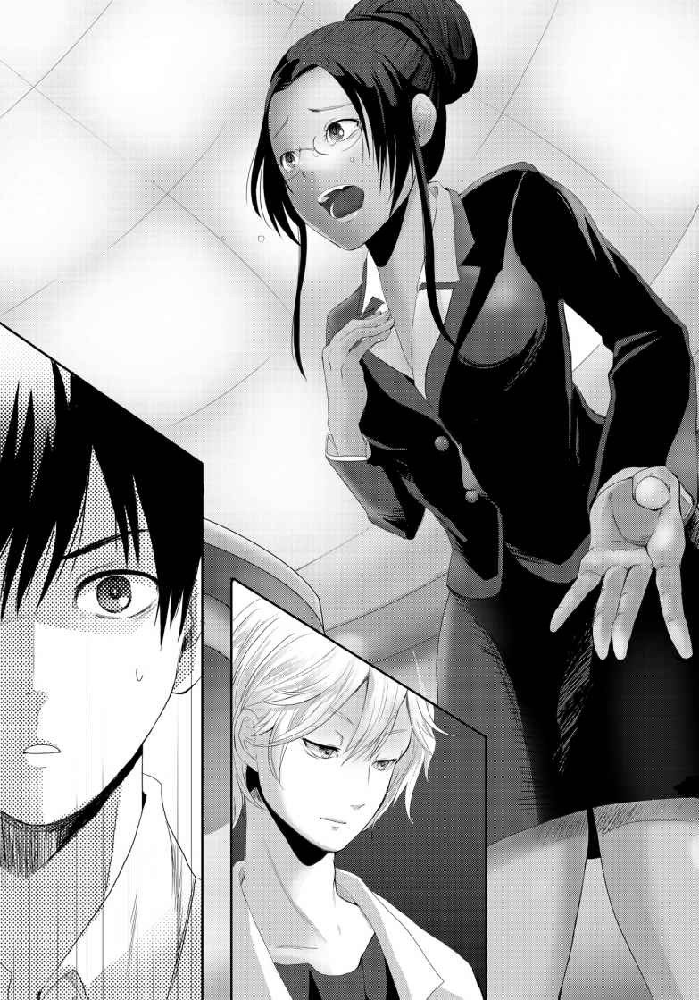
必死に訴えかけるシャーナさんだったが、誰もまともに取り合わない。むしろ、完全に決めつけている。
だが俺はなんとなく納得できなかった。シルヴィアの推理でシャーナさんが怪しいのはわかる。だけど、決めつける程かと言うと怪しい気がする。なのに、どうして皆こんなに......。
そう思った時、フト貴志と目が会った。
先ほどから貴志は特に何も発言していない。シャーナさんを庇 うことも、非難することも、どちらも全くしていない。
さっき、貴志はＧＭの味方をする、と言っていたのに。
今まさに、味方すべきＧＭが危機にさらされているんじゃないのか？
──まさか......。
何も言わないでいることが、ＧＭにとって好都合なのか？
だとしたら、シャーナさんはＧＭじゃない。このままシャーナさんを《発病者》にしてしまったら、俺たちはゲームオーバーで全滅することになる。
──もしそうなら貴志は、ＧＭが誰なのかわかっているのか？
それは判断できないが、少なくともシャーナさんはＧＭではないという事には貴志は気付いているのだ。
でも、どうやって見抜いたんだ？ 何かを感じ取りでもしたのだろうか。
貴志の芸術的センスで感じ取ることの出来るＧＭの正体とは一体......。
「涙まで流して、ずいぶんと迫真の演技ネ。でも、もう舞台は終わリ。これで終幕にしましょウ」
「！」
シルヴィアの言葉に、俺は心の中で何かが弾け、そして再び形を成していくのを感じた。
一つ一つのピースが綺麗にはめ込まれていく。
「そうだよ、『舞台』だ！ 『舞台』だったんだよ、これは！」
気付けば俺は声の限り叫んでいた。
みんなが一斉に俺の方を向く。
「勇人くン？ 一体何を言っているのかしラ？」
「だから、劇だったんだよ。俺たちはいつの間にか『舞台』に立ってしまってたんだ！」
「ちょ、アンタ大丈夫かいな？」
「もちろん、大丈夫。いいですか、これはどこまでも『舞台』なんだ。俺たちが殺し合うだの、敗者には国ごと死の制裁を与えるだの、バカバカしくて、恐ろしくて、救いようのない『悲劇』なんだ」
俺がまくし立てる姿を、皆一様にぽかんとした表情を浮かべて見つめていた。
気でも触れたのかと思われているのかもしれない。
「与えられている役目はそれぞれ、探偵役がシルヴィア、対立する悪のライバルが美花さん、三峰とカルロスはその手下、そしてシャーナさんは犯人役だ」
「だから私は犯人なんかじゃない！」
叫ぶシャーナさんに、俺は頷く。
「その通り、シャーナさんは犯人じゃないし、ＧＭでもない。犯人の役目を与えられ、犯人として処刑される役だったんだ。シルヴィアも美花さんも、ＧＭが割当てた役割をきっちり演じる役者だった。このシェルターの中は、一つの『舞台』になっていたんだよ」
一つ深呼吸を入れる。
ここからが核心になる。
核心で、真実で、そして残酷な。
「でも、役割が無い人間、と言うか役者になれない人間がいた。俺と、貴志だ。俺にはこの、言ってみれば『能力』の特性からだ。貴志は、完全に一つ距離を置き、この『舞台』の中をカンバスに収めるような目で見ていた。だから、登場人物になりえなかった。三峰は見せしめの処刑される役、往南は最初の犠牲者の役。皆、『舞台』の上で、台本通りの『演技』をしていたんだ。用意されていたことを自分でも意識しないままに」
相変わらず皆は信じられないといった表情だ。
その中で、シルヴィアひとりが顔を青ざめさせている。
俺の言っていることが伝わっているのか、それとも自分の推理ミスに気付いたのだろうか。
どちらにせよ、まだ話は終わっていない。
「そして、役割の無い人間がもう一人いる。この舞台において、何の役割も持たず、傍観者に徹していた、言わばジョーカー的存在」
俺はそいつの名前を、いや、本当の名前を告げる。
「ノンナ。──いや、真希。お前が《救済のゲームマスター》だったんだな」
その場にいる誰もが一斉にノンナへと視線を向けた。
当のノンナは、驚いた表情を浮かべ、そして笑った。
「とうとう気でもおかしくなりまして？ 私が貴方の知り合いの真希さんであるはずがないでしょう？」
そう言って金髪の髪を手でたくし上げる。
確かに真希は黒髪だった。金髪じゃない。
「カツラなのかウィッグなのかは知らないけど、そういうやつだろ。そもそも、こんな疑惑を向けられない限り、高校生にもなって女の子の髪の毛を無理やり引っ張ろうとする奴なんかいるわけがない。女の子同士なら髪を触ったりするかもしれないけど、それを警戒してお前はシェルター内の人間、特に女子とは関わりを持とうとしなかった」
「言いがかりも良い所ですわね」
「ほなら、ウチが確認したる。そのけったいな金髪、引っこ抜いたるわ！」
「あら、席を離れない方が良いのではなくて？ そのウィルスカードの本当の持ち主と同じ事になっても知りませんわよ」
「ぬぐっ......」
美花さんは浮かしかけた腰を席へと下ろす。歯ぎしりがここまで聞こえてきそうな剣幕だ。
あるいは、これをも見越して離席した三峰を処刑したのか？
ならば、言葉で証明しなくてはならない。
ノンナは、真希なのだと。
「お前は、俺にＩＤを渡して先にシェルターへ行かせた後、中東代表の選手と落ち合った。そいつはきっとシルヴィアの言う『組織』の工作員だったんだろうな。そこでロシア代表のノンナのＩＤを受け取り、変装も済ませた。荷物がめちゃめちゃ重かったのは『ノンナとしての私服』とかがたくさん入ってたからなんだろ。だから先に運んでおくって俺の提案も断った。そして中東代表を殺害してＩＤカードを奪い、『ノンナ＝セルゲイヴィッチ』としてシェルターへと降りてきた。今思えば、お前が降りてきた直後にＧＭが語り始めたよな。本来の参加者である真希も、中東代表もいないのにもかかわらず、だ。あれは、もう誰も降りて来ないことを知っていたから、だろう？」
「空論、いえ詭 弁 ですわね」
ノンナは高をくくったような声で俺の意見を否定した。
「そもそも真希さんは殺されていたではありませんか？ ＧＭが映した映像の中に、真希さんの遺体があったはずですわ。誰よりも、あなた自身がそれを見て、みっともなく喚き散らしていたじゃありませんか。残念ですが私、ゾンビではありませんの」
「そうだな。確かに、真希の遺体が映像の中に映っていた。血まみれになったセーラー服に、あの髪型、間違いなく真希のものだったよ」
俺の言葉に、ノンナはそれみたことかとでも言いたげな表情を浮かべる。
ここからだ。
「なら、どうしてお前はあの血まみれのセーラー服の女の子が真希だってわかったんだ？」
「............！」
ノンナの表情が一変する。
「昨日、お前と俺の部屋の前で話した時も、お前はこう言ってたよな。『──血まみれの彼女を見たでしょう？』と。あの時は何とも思わなかった。でも、後になって違和感があったんだ。
あの時、まだ俺たちはお互いの自己紹介すらしていなかった。つまり、俺は誰にも真希の事を話していなかった」
「あ、あなたがマキと叫ぶからには、女の子の事だったのだろうと推測したまでですわ」
「そうか？ まぁ、シルヴィアが苗字のマキシマをもじってマキというあだ名を使っていたくらいだ。確かにマキは女性名ととれるさ。ここは譲ってそうだとする。それであの時、お前はシャッターを殴り続ける俺を止めてくれたよな？」
「......ええ」
「お前が見ろと、見て諦めろと示した指先は間違いなく真希を指し示していた。
マキ、と俺が叫んだから女性だと判断したのはわかる。だけど、あの時モニターには真希以外にも女性は何人か写っていたが、血だまりに倒れた真希が映っているのは一画面だけだった。真希を知らないはずのお前が、あれだけのおびただしい数の画面、そして倒れる人の中からピンポイントで真希を指定できたのは何故なんだ？」
「そ、それは......」
「あの遺体は多分、ここに来なかった中東代表の女子だ。お前は殺した女子に自分の服を着せ、モニターを見た俺に自分が死んだと誤認させた。言ってたよな。夏に入って急に切った髪を『今度演じる役の役作りのため』だって。それは中東代表の子と同じ髪型にした、って事なんじゃないのか？ 同じ服、同じ髪型の女の子が血まみれになってりゃ誰だって勘違いする。まして、ここであの制服を着ていたのはお前だけだ。俺がいくら馬鹿でも、いや馬鹿だからこそ、ちゃんと勘違いしてくれるって寸法だ」
自分でも驚くくらいに、次から次へと推理が進んでいく。
もしかしたら、自分に推理の才能があったのか などと思ってしまう程に。
その発掘された才能が、初めて行っていることが大切な人を追い詰めていく事だというのが、何とも皮肉だった。
ノンナの表情はすっかり青ざめていたが、それでもなお強気の姿勢を崩さない。
ここで言い負かされては、少なくともゲームの標的にされてしまうのだから、文字通り必死のはずだ。
「何故そのような回りくどいことをしなければならないのですか？ わたしが瑠河真希なのであれば、そのまま招待客の瑠河真希として降りてくればいいではありませんか。たとえ中東代表のＩＤを奪っていても」
「真希のままじゃ演技ができないから、じゃないのか？」
「............」
初めての沈黙。
肯定とも否定とも取れるその静けさが、周囲の緊張を高まらせているのがわかった。
誰かが唾を呑む音が、聞こえた。
「お前はこの、全人類が注目する最低最悪のゲームで、演技する側でいたかった。俺にはわからないけど、それが女優の本能ってやつか？ それこそ、終末の絵を描きたいなんて言い出した貴志と同じで、さ」
俺は貴志を見た。
困ったような、諦めたような、そんな顔で貴志は小さく笑う。
「お前がくれたクロッキー帳。あれはヒントをくれたんだな。あの中にはメンバーで俺とノンナの絵だけが描かれてなかった。俺の方は興味が無かったからなんだろうけど、ノンナは既に描いていたから、だったんだろ？」
『一期一会の芸術家 』
そう呼ばれている貴志は、一度描いた対象と同じモチーフの絵を二度と描かない。
真希を既に描いていた貴志にとって、ノンナは描くモチーフ足りえなかったのだ。
「それに、女優の瑠河真希として認識されてしまうと、皆が引っかかっていた『舞台演技』の仕掛けもバレちまいかねない。こんなゲームじゃ『女優』なんて肩書きは、一番に警戒されちまうからな。誰だって、演技に騙されないように気を付ける」
「ま、待って勇人くン。ワタシも、皆も、彼女が仕掛けた『舞台』に飲み込まれていた、というのは何となくわかル。でも、どうしてアナタは平気だったノ？」
シルヴィアの顔色は青く、強張ったままだった。
悪い夢から覚めた直後のようなそんな顔。今まで自分が調子よく話していたことが、全て真希の仕組んだ事だったのだから無理もない。
「ノンナには、いや、真希には俺を『舞台』に引き込むことがそもそも出来なかったから、じゃないかな」
「ど、どうしテ？」
「俺が『真希』を好きだから」
自嘲気味な笑みが勝手にこぼれた。
そうだ、今でもこの気持ちは変わらない。
真希の演劇を観に行った時も、普段の学校生活でも、お互いの家を行き来していた時も。
常に俺が見ていたのは『真希』だった。
劇になんか興味は無い。同じ舞台に立ちたいとも、同じフィールドに並びたいと思った事も無い。
「俺にとって真希が立っている『舞台』は、自分が上がる場所じゃない。真希だけを見に行く場所なんだ。それをずっとずっと、子供の頃から十年以上続けてきたんだ。そんな俺を、今さら同じ『舞台』に上げられるわけがない。そうだろ？ 真希」
俺はノンナを、いや、真希を真っ直ぐに見つめた。
ノンナは、一つ溜め息をつくと、諦めたように金髪に手を伸ばし、
──そして、外した。
金髪の下からは、セミロングの黒髪が現れる。
昨日、一緒にここまでやってきた真希の姿がそこにあった。
「まさか、勇ちゃんに何もかも暴かれるとは、思ってもみなかったな」
「俺も、まさか自分の頭がこんなに回るとは思って無かったよ」
「ふふ、勇ちゃんらしいよ」
こんな時でもまたすぐに幼馴染みの二人に戻れそうな気がする。
だが、決定的に変わってしまった深い溝が、いまの二人の間にある。
「どうして、こんな事をしたんだって聞いていいか？」
「つまらない話だよ？」
「構わない。聞かないと、後悔しそうだ」
聞いても後悔しそうだけど、それなら聞きたい。
真希がこんな事をした理由を。
「......私の本当のお母さんもね、女優だったの」
「一度だけ聞いた気がする」
「うん。でもね、女優として育ててくれたのが『組織』だった。ねぇ、シルヴィア。アナタは組織の研究部門に『売られた』と思っているんでしょう。教えてあげるわ。アナタのお父さんも私の母と同じ、特別な遺伝子を残すことを強制されていたのよ。アナタも私も生まれた時から、組織の所有物だったのよ」
「そんなノ、噓 ヨ......信じられナイ」
冷たい真希の微笑みに、シルヴィアが初めて動揺を見せていた。
俺は息苦しくなって、何度も呼吸するんだと自分に言い聞かせた。真希の吐き出す言葉が恐ろしかった。
「女優として活躍すれば、文化交流と称して世界各地を回ることが出来る。政府高官と親しくなることも、町中でロケすることも可能でしょう」
「お母さんって、スパイだったのか？」
俺はうっかり口を挟んでしまった。真希はいきなり吹き出して、一瞬、いつもの笑顔になる。
「そうだったら、良かったのに」
「え？」
「特定の人物の遺伝子を盗む。それがどういうことか、わかる？ 勇ちゃん」
「......」
真希の目が笑っていなかった。背中がぞくり、とした。
知らない世界の暗闇がこんな身近に口を開けている。
「......だから、私の母は本当に好きな人と結ばれたくて、逃げたの。逃げて、私を産んでくれた。でも、『組織』から逃げ切れはしなかった」
少し遠くを見つめながら真希は言葉を紡いでいく。
茶々を入れる者は誰もいない。美花さんも、シャーナさんも、カルロスさえも静かに、その話に聞き入っている。これもまた、真希の力なのかもしれない。
「母は私に、物心つく前からレッスンを付けた。母の純粋な夢を叶 えるため、母の無念さを晴らすため、女優になる以外に生きている価値なんかないとまで言われた。そんな毎日を過ごしていたある日、母が交通事故で死んだの」
「それも『組織』だったのか？」
「正解～」
真希は嬉 しそうに笑顔を振りまく。
同じ笑顔のはずなのに、昨日見た笑顔と全く違う気がした。
「それからは表の顔は新進気鋭の女優のまま、『組織』の指示で動いてきたの。勇ちゃんも知ってる私のママいるでしょ？ あの人、『組織』から派遣された監視者だったりしてね。でも、まぁまぁ楽しかった。レッスン地獄のような日々と比べたら天国って位に穏やかな毎日が過ごせた。勇ちゃんもいてくれたしね」
今度は少し寂しそうな笑顔。
「でもね。私は『組織』を許せなかった。中に入ることで時間をかけて『工作員としての私』という演技に巻き込み、いずれ組織の指揮系統を分断することを考えついた。米軍が襲撃したのは、情報取引したから。私に従わないグループだったの」
「あ、あんたが『組織』のボスになろうっちゅー腹づもりだったんかい？」
「そんな肩書きには興味ないよ。犯罪に手を染めてる連中の上に立ったって何も嬉しくなんかないし。このゲームの舞台を準備をさせて、各地にウィルス発生用の装置を仕掛けさせたのは、実は『組織』と取引した各国政府の一部高官だとしたら納得する？ 中東代表として来た子も私の協力者だったのよ。身代わりに死ぬことを笑って引き受けてくれた。ここに来る前にあらゆる情報を各国の公安警察や国連にもリークしてきたから、今頃大混乱していると思うわよ。計画が丸つぶれだってね」
「何故、『組織』だけでなく、政府や他の国まで巻き込むノ？」
「だって、母さんを殺したから」
静かに、静かで、ゾッとする位に冷たい声で、真希は言った。
「私を自分の夢の続きを叶えるための道具としか見ていない、最低の母親だったけど、私を産みたくて逃げてくれた。だから、私は母を愛していた。大好きだった。あんなレッスンに耐えてきたのも、いつか母が私を愛してくれると信じていたから。笑顔を見せてくれると信じていたから。なのに、奴らは母を殺し、私に〝母と同じになれ〟と言ってきた。許せなかった」
「真希......お前は」
「いいの、勇ちゃん。狂ってるって、わかってる。自分でもこれは間違ったやり方だってわかってる。でもね、正しい道なんてもうわからないの。だって、何が正しいの？ 国？ 政府？ 親？ わからない！」
「真希！ もういい！」
「うんん。やらなきゃだめなの。私、あの計画を知ってしまったから......」
真希が全員を見回してから、モニターを見上げた。モニターの紳士が白いピエロの顔とオーバーラップして歪んでいた。
「それは『二万人計画』。シルヴィア、これなら知ってるでしょう」
「......っ」
シルヴィアは視線を反らして、唇を嚙 んでいる。
「最初は政府によるただの試算だった。核戦争など世界的な危機が訪れた時、最も保護すべき有用な人材、未来に生きるべき人の数を決めたのよ。それがいつの間にか『世界に必要な二万人』になり、それ以外は不要という考え方になった。地球環境問題から言っても人類が多すぎるって......」
俺は喉がからからになっていた。だからって、ゲームで殺すのか。不要な人間として。
「勇ちゃん、どっかで〝ジョーカーゲーム〟って聞いたことない？」
「な......ないよ」
「そう、良かった。知らなくて。人類を淘 汰 するゲームなんだよ。人口増加に悩む国では教育実験として行われているけど、日本でも実施されているの。それがこの『二万人計画』の初期プログラムで、その次の段階がグローバルユース討論会なの。ここで最後の選別になる。『二万人計画』の中に日本人は二人しか入れないから......」
真希の表情は暗く、凍り付いていく。
「真希......」
「来ないで！」
俺が席を立とうとすると、真希は立ち上がって壁にへばりついた。その手には、何かのスイッチのようなものが握られている。
「誰も席を立たないで。このスイッチは、全世界のウィルス散布装置と、このシェルター内の毒ガス発生装置に連動している。これを押すだけで、全人類が滅亡するわ」
「お、おい！ やめろよ！ この後に及んで、ずりぃぞ！」
カルロスが情けない声を上げる。本当にこいつは最後まで締まらない奴だ。
「シルヴィアさん」
「......何？」
「貴女には少し自分に近いものを感じていたわ。だけど、『二万人計画』もその立案者たちにも復讐するには、どうしても貴方の作ったウィルスが必要だった。ごめんなさいね。使ったのはあくまでも私。貴方が気に病む必要はないわ」
「......エエ。組織なんか関係なく、アナタとは知り合いたかっタ。きっと......友達になれたと思うカラ」
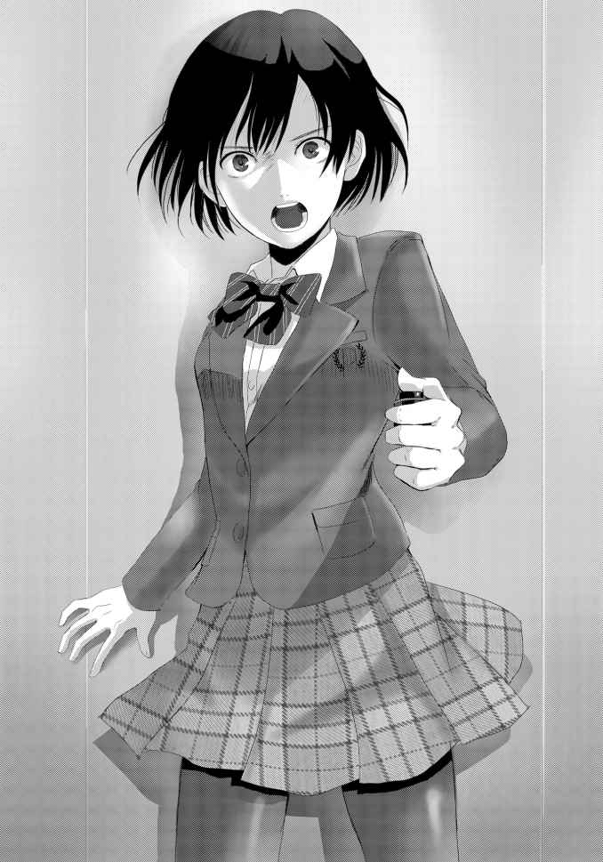
「ありがとう。すごく、嬉しい」
真希は俺に向き直る。
「勇ちゃん、ごめんね。こんな事に巻き込んで」
「別にいい......とは言えないな、今回は流石に」
「そうだよね」
ペロっと舌を出す。
「ねぇ、勇ちゃん。こっちに来てくれるかな？ 今なら席を立っても平気だから」
「ああ」
俺は席を立ち、ゆっくりと真希の方へと歩いていく。
周囲が固唾を飲んでいるのがわかる。何せ、真希の手には全てを終わらせる、まさにハルマゲドンのスイッチが握られているのだから。
やがて、俺は壁にもたれかかった真希の前に立った。
「迎えに来たぜ、真希」
「......ありがとう、勇ちゃん」
真希はニッコリして、手にしたスイッチを俺に差し出した。
「さっきのは噓。これは、シェルターの閉鎖を解除するスイッチだよ。今すぐ押したらまだ危ないから、円卓で羊 羹 でも食べて明日の昼くらいにでも押すといいと思う。ノンナの荷物も私のだから、一緒に持って出てね。中身は外に出てからのお楽しみにしておくと良いかも？」
「真希、最初の荷物は......」
「もしもの時のね、非常食」
「それじゃ......」
俺は真希からスイッチを受け取る。
手渡される瞬間、指と指が少し触れた。
「二人、が......勇ちゃんと私だったらいいなって......ちよっとだけ思ったから、さ......」
「もう計画は潰れたんだろ？ なら、自由なんだろ、真希も」
「ふふ、こんな時でも心配してくれるんだね、勇ちゃんは。でも、大丈夫だよ」
そう言って真希は、静かに両手を組む。
俺の目を見つめるその瞳には、反射した俺の姿が映っていた。きっと、俺の瞳には真希が映っているのだろう。
「もう死ぬから 」
「......！ 真希、お前っ！」
真希の目から大量の血が噴き出していた。
この症状は、昨日往南が死んだ時と同じものだ。
「心配しなくていいよ。これも『舞台の役』だから。《発病者》はね、こういうウィルスの《発病者》みたいな死に方をする設定になってるんだ。私の能力、ちょっとした超能力みたいでしょ？ 強烈な暗示みたいなものらしいんだけどね。今の私は《発病者》じゃないけど、勇ちゃんの目を借りちゃった。あ、『舞台』が終われば効力は消えるから、心配いらないよ」
後ろにいるみんなに声をかけると、真希は改めて俺に向き直った。
「ねぇ、勇ちゃん。最後にお願いを聞いてもらっていいかな？」
「......何だ？」
「キス、して欲しいな」
「ああ」
既に真希の顔は血まみれになっていたけど、俺には何の躊躇 いもなかった。
真希の肩に手を置くと、ゆっくりと顔を近づけ......。
「ふぎっ！」
鼻に頭突きされた。
「お前っ！」
「あは、は、引っかかった。言ったでしょ？ そういう『役』をやるんだって」
最期の力を振り絞った頭突きだったのかもしれない。
真希は、もはや自分の体重すら支える事が出来ないのか、壁にもたれたまま床へとずり落ちていく。
ぽつりぽつりと、棒読みのような言葉が聞こえてきた。
「私ね、勇ちゃんの事、本当は好きでもなんでもないの。いつかこうやって利用するためだけに一緒にいたの。私に騙 されて、私の言う事を聞いて、私に気を使って、私を大事にしてくれる勇ちゃんを見て、本当は笑ってた。騙されて、馬鹿な男だって、ずっと馬鹿にしてたんだよ。幻滅したよね？ だから、私のことなん......か、キラ、イに......」
真希の声はそこまでだった。
壁にもたれかかったまま崩れ落ちた体からは、とめどなく鮮血が溢 れ、床に水溜りを形成していく。
確認しなくてもわかる。真希は、俺の幼馴染みだった瑠河真希は、今度こそ死んだんだ。
「何だよ、今の演技」
いつだって最高の舞台を見せてきたのに。素人の俺でも凄いと思える演技がお前の魅力だったのに。
「初めて見たよ、こんなへたくそな演技......。お前らしくないじゃないかよ......」
とめどなく流れる涙を拭うことなく、俺はもう物言わなくなってしまった真希に語りかけた。
「真希の、大馬鹿野郎......」
こうして、全世界を恐怖に陥れた殺人ゲーム《人類滅亡感染ゲーム》こと《感染ＨＲ》は、ゲームマスターの死亡により幕を閉じた。
【二日目《感染ＨＲ》『二時限目』及び全日程終了】
［敗者］
●瑠河 真希
●三峰 海洋
●飛瀬 往南
［感染地域］
●オセアニア
●アフリカ大陸
ＬＥＶＥＬ The End
ゲームは終了した。
あの後、俺が真希の遺体を調べた所、ウィルスカードが12 枚、ワクチンカードが４枚、ノンナのＩＤ、そして『ＩＴＳＵＫＩ ＴＡＫＡＳＨＩＮＡ』と書かれたＩＤが見つかった。
中東代表で真希の協力者だった女の子の名前なのだろう。俺はせめて名前を覚えていようと思った。
そのＩＤで、やはり開かずの間だった客室のロックは解除された。
室内には、三峰と往南の遺体が寝袋に包まれて安置されていた。無造作に放置されていなかった事に、俺は少しだけ安堵した。
自分たちが外へ出れば、ここにも警察が入るはずだ。その時に変な疑いをかけられないよう、この部屋の中は下手に触らない事が話し合われた。
そして俺は、真希の遺体をこの部屋まで運び込み、室内に残っていた寝袋へと寝かせた。
こんな悲しい作業は、これからの人生でもう二度と無いだろうと思った。
「勇人くン」
作業を終え、イツキの部屋から出てきた所でシルヴィアに声をかけられた。
「ああ、シルヴィアか。お疲れさま」
「疲れているのはアナタのほウ。......ありがとウ。全てアナタのおかげヨ。ワタシの推理は、大外れだっタ。危うく、全て終わりになってしまう所だっタ......」
「シルヴィアの推理があったから、俺も真希の正体まで辿 り着けたんだ。だから、俺の方こそお前のおかげだよ。ありがとうな、シルヴィア」
「どうしテ......？」
思いつめた表情でシルヴィアは俺に問いかける。
「どうしてワタシを責めないノ？ アナタの大切な人を狂わせてしまったのは、ワタシの作ったウィルスだっタ！ ワタシがあんなものを作らなければ、もっとしっかり管理して『組織』の手に渡していなければ、真希サンはあんな事をしなかったかもしれなイ！ ワタシが憎くないノ!? ワタシを、殺したいと思わないノ!? 」
堰 を切ったかのように、自己批判を繰り返すシルヴィアを、俺は少しだけ哀れに感じた。
いっそ、俺が罵倒してやった方が救われるのかもしれない。殺してやりたいほど憎い、と言われた方が気が済むのかもしれない。
でも、そんな『演技』は俺には出来なかった。
「......部屋に戻って休みなよ。明日、ここから出たら俺なんかより遙 かに忙しくなるだろ。休めるうちに休んだ方がいい」
「......アナタは、本当に優しいのネ。でも、優しさは時に毒にもなル」
「そうかな......っと」
シルヴィアが急に俺のシャツを引っ張った。
そんなに強い力ではなかったが、いきなりだったので俺はバランスを崩し、シルヴィアの方へと引き寄せられ、
「............ン」
キスをされた。
少しの間唇を重ね合い、やがてゆっくりとシルヴィアは俺から離れた。
「ワタシはウィルスの研究者だかラ」
「へ？」
「アナタの毒を調べたくなったノ。今後の研究に活かさせてもらうワ。それじゃ、ネ」
耳まで真っ赤にしたシルヴィアが走り去っていく後姿を、俺は茫 然 と見送った。
この二日間だけで、こういった事は何度目だろう。
あいにく、真希とはとうとうキスする事はなかったけれど......。
本来であれば、シルヴィアのような美少女とキスが出来たのだから飛び上がって喜んでも良いくらいかもしれない。
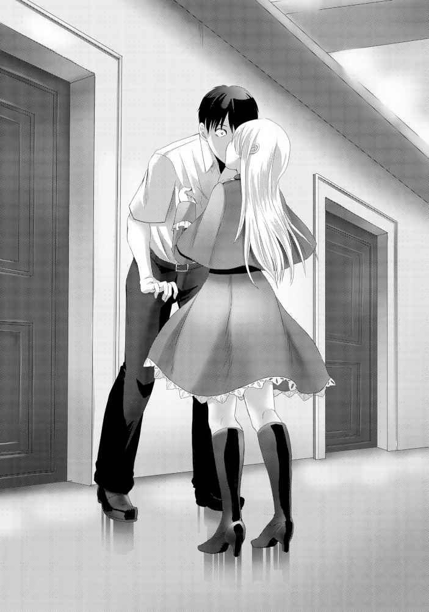
だが、今の俺には到底そんな気分にはなれなかった。
「せめて、お前とちゃんとキス出来ていたら違ってたのかもな」
施錠された扉の向こう側に、俺は小さく文句を言った。
＊
「やぁ、こんばんは」
「貴志......どうしたんだよ、こんな時間に」
夜も十一時を回った頃、来訪者を告げるチャイムにドアを開けると、満面の笑顔で貴志が立っていた。
「ここで過ごす最後の夜だろう？ せっかくだから君とより友好を深めておきたいと思ってね。部屋に入ってもいいかな？」
「ああ、別に構わないけど......」
「それじゃ、お邪魔するよ」
言うや、貴志は部屋へと入り小棚の上に置かれていたクロッキー帳を手に取った。
「さぁ、そこに座ってくれ。さっさと描いてしまうから」
「描くって、何をだよ？」
「絵に決まっているだろう？ このクロッキーに君の絵は描かれていなかったはずだよ。今からそれを描こうと思ってね」
「おいおい、今何時だと思ってんだよ」
俺は呆 れた声を上げたが、当の貴志は平然としていた。
「似顔絵なんか十分もあれば描き上がるよ。君と同じ感覚で考えないで欲しいな」
「そんな早く描けるもんなのか？」
「手抜きでいいなら三分で終わるよ」
「いや、なら十分で頼む」
よしきた、とばかりに貴志はクロッキー帳へ鉛筆を走らせ始めた。
動いて良いのかどうかもわからないので、固まるしかない。何せ、モデルになんかなるのは初めての体験なのだ。
「なぁ、貴志」
「............」
声をかけてみたが、返事は無い。正しく一心不乱、という状態だった。
ものの十分で描けるなどと言っていたが、そんな手短な絵にすら瞬時にこれだけの集中力を見せてしまうのだから、やはり凄いなと感心してしまう。
（そういえば真希も、瞬間的に役に入ってたな。よく驚かされた）
『演技』と『素』の切り替えが、演技では大事だって言ってたよな。
振り幅が大きいほど、『演技』へと人を引き込める......
ガタン！
俺はベッドを蹴 り上げるように、思わず立ち上がっていた。
「おいおい、勝手に動かないでくれるかな？ まだ描き途中だよ」
「悪い、貴志。一つ頼まれてくれないか？」
「何だい？ 絵を描くのを中断させるほどの用件なんだろうね？」
俺は貴志に頼み事を伝えた。
意外な内容だったらしく、貴志は驚いた表情を隠さなかった。
「何のために？ それに、そう言うなら君が全て自分ですれば済むことじゃないか」
「頼む。描きたいと言っていた終末の絵が描けるかもしれないぜ」
「......どうやらワケありみたいだね。わかった、引き受けるよ」
貴志はクロッキー帳を閉じると、ベッドの上へと投げ捨てた。
「明日、そのクロッキー帳に描く事になるのは、君の似顔絵の続きか、それとも終末の絵のデッサンかな」
俺は何も答えない。
そんな俺に、おやすみと一言告げて貴志は部屋を出て行った。
一人になった俺は、夜空へは遙か遠い天井を見上げ呟 いた。
「明日、何もかも終わらせるよ、真希」
翌朝九時、エントランスに残りのメンバーが全員集合していた。
「おいおい、ようやく出られるって日に、なんなんだよ」
「そ、そうよ。こ、こんな時間にエントランスだなんて、ま、まるでまた《感染ＨＲ》が行われるみたいじゃない......」
不満げな声を上げるカルロスと、いまだに恐怖が抜けきっていないシャーナさん。
「何や、今さらウチら集めて何しようっちゅーねん」
「勇人くン......」
訝 しげな態度を隠そうとしない美花さんと、真意を測りかねている様子のシルヴィア。
「頼まれ事は済ませたよ。後は君の時間さ」
一仕事終えたとばかりにすました顔を見せる貴志。
そして俺は、大きな声で皆を集めた目的を告げる。
「これから、最後の《感染ＨＲ》を始める！」
まるで俺の言葉に呼応したかのように時刻は九時を指し示し、《感染ＨＲ》会場への扉が音を立てて開かれた。
「《救済のゲームマスター》瑠河真希は死んだ。今日のゲームマスターはこの俺、涌井勇人が代行する。さぁ、皆席に着いてくれ！」
皆、一様に絶句していた。
俺が何かするつもりだと知っていた貴志でさえも、予想外の行動だったのか驚きを隠せないでいるようだった。
「ふ、ふ、ふざけんじゃねーぞ！ もうゲームは終わったんだ！ ＧＭやってたテメェのふざけた女も死んだじゃねぇか！ 俺はやんねぇぞ！」
メンバーの中で意外にも最初に口を開いたのはカルロスだった。
美花さん辺りだと予想していた俺としては、むしろ言いくるめ易そうで都合が良い。
「別に嫌なら参加しなくてもいい。ルールにもあったはずだぜ。『不参加は敗北』だと。せめて席にくらい着いた方が身のためだと思うけどな」
「うっ、そ、それは......」
「わからんなぁ。ゲームは終わった。もうすぐこっからも出られる。わざわざ危険に身を晒 すとか、アホのする事や。何や理由あるんやろ？ せめてそれ位教えてくれんと納得できんで」
美花さんが俺を詰問する。その口調はいつものように飄 々 としたものだったが、目は射抜くような殺気で満ちていた。
俺はその目を真正面から受け止める。
「復讐の続きですよ」
「はぁ？」
「言った通りです。真希の復讐はまだ終わってないから。
なら、俺が引き継いで終わらせないといけないでしょう？」
「......そんな理由でウチらが納得すると思ってんのか？」
「思ってませんよ。でも、席には着いてもらう。扉は開き、ゲームの準備は整っている。もう俺にも止める事は出来ません」
「どうしてしまったノ、勇人くン？ 復讐の続きという事は、世界を滅ぼすつもりなノ？」
「それが必要ならね」
「そんな事を、真希さんは望んでいると思っているノ？」
「思ってるよ。真希は、間違いなく俺に復讐の完遂を望んでいる」
俺はシルヴィアを見た。
蒼 い瞳が悲しみに満ちていくのがわかる。
「なるほどね、これなら確かに終末の絵が描ける可能性が残っているというわけだ。僕は乗るよ。何もしないままに殺されるくらいなら、昨日に引き続きＧＭの味方をして絵を描かせてもらう努力をしたほうがずっといい」
言うや貴志はＨＲ室内へと歩いて行き、二日間座っていた席へと着席した。
「ちっ、しゃーない。落とし前はゲームん中でつけたたるわ」
美花さんが俺に毒づきながら着席した。
「ま、待ってください。わ、わたしも！」
「昨日の同盟はまだ続いているんだろうな!? 」
美花さんに追従するようにシャーナさんとカルロスも部屋へと入る。
「............」
シルヴィアはもう何も言わなかった。
俺の横をすり抜けると、いつもの席へと座る。
俺もまた、昨日までと同じ席へ座った。
右隣にシルヴィア。左隣、そして正面は既にいない。
たった二日間、それもたった二回しか座っていない席なのに、何だか見える景色が懐かしくもあり、そして様変わりした様子が寂しくもあった。
「それじゃあ、《感染ＨＲ》三時限目を始めよう。これが俺たちの、ラストゲームだ！」
俺はＧＭとして、高らかにゲームの開催を宣言した。
ＦＩＡＮＬ ＧＡＭＥ
開催が宣言されたものの、皆黙ったままだった。それもそうだろう。
昨日の時点で既に目的意識も希薄となっているゲームなのだ。今になって再開されても、自分の身を守る以外に重要視すべき事など何も無い。
「......で、何や。《感染ＨＲ》もっかい開いて、あんさんは人類皆殺しにするつもりかい？ なんせ《人類絶滅感染ゲーム》やさかいな」
口火を切ったのは美花さんだった。
俺は議論をスタートさせてくれた事に心の中で感謝する。
「まさか。そんな事、真希が本気で望んでいるわけないじゃないですか」
「ナっ......」
弾かれたように隣のシルヴィアが顔を上げる。さっきと話が違うと言いたいのだろう。
だけど、俺としては何も違ってはいない。
「どういう意味や？ 昨日、瑠河ちゃんが自分で言ってたやないけ。なんとかちゅー計画を人類丸ごと一緒に潰したるって。せやから、あんたが言うとる事はさっきから滅茶苦茶やで」
「そうですね。それは本当の事です。でも、一つ言えるのは、真希はそう考えたことはあっても、本気で人類の絶滅を願い、また狙っていたわけじゃないって事です」
美花さんは俺の言葉に少し呆 れたような表情を見せた。
「何やそら。もしかして『俺の幼馴染みがこんな酷いことをするわけがない！』とか思ってるんか？ 勝手に女にクリーンなイメージ押し付けるのは男の悪い癖やけどな。現に瑠河ちゃんはもう、何億人という人間をウィルスに感染させとるんやで。そんな事しといて、そこまでする気はありませんでしたーなんて話があるかいな！」
ドン！ と美花さんが円卓を叩 き、隣に座っていたシャーナさんが身をすくませた。
「真希が意図的に殺したのは、三峰と往南、それと自分だけだとしたら？」
「はぁ？」
今度こそ美花さんは意味がわからないといった顔をした。
他のメンバーも概ね俺の言葉に不思議そうな表情を浮かべて耳を傾けている。
ただ一名を除いて。
「考えてみて下さい。もし真希が本気で『組織』や政府に復讐したいと願っていたなら、または、本当に世界の滅亡を狙っていたとしたら、この中には一番に殺さなければいけない相手がいる──」
俺は一呼吸おいて、その名を告げた。
「それはシルヴィア、君だ」
俺は隣に座ったシルヴィアを見た。
彼女はいつものポーカーフェイスで、俺の言葉に耳を傾けている。
「......そうネ。ワタシが死ねば、少なくとも今すぐにワクチンを開発する事は出来なイ。本気で人類を絶滅させる気なら、誰よりもワタシを狙うべキ」
「でも往南っちが悪巧みしてると気付いたから、先に狙ったんやないのか？ ウィルスカードを大量に握られたまま放置しとったら、自分の身も危ないやろ」
「真希は、俺に見破られた後に平然と自分に制裁を加えて死にました。身を守るつもりがあったとは思えない。むしろシルヴィアを殺した上で往南を放置した方が、ゲームは混乱して世界を破滅させる目的には好都合だったはずです。そうせずに、往南を《発病者》にしたのは、真希には別の目的があったからだ」
もう俺の言葉に誰も口を挟まなくなっていた。
死んだ真希が、今もなおこの《感染ＨＲ》の鍵を握り続けていることを、誰もが感じていた。
「......そもそも根っこから考えなくちゃいけない事なんだ。昨日、俺は真希の正体を暴いた。シェルターの中で行われたこの《人類絶滅感染ゲーム》のＧＭがノンナ、つまりは真希なんだと。真希はそれを素直に認めて、事件を引き起こした理由を話してくれた。だけど、ある大事なことを話してくれなかった。──それは、どうしてこのゲームが行われなければならなかったのか？ という事だ」
俺は一呼吸だけ置いた。
これから話の核心へと繫 がっていく。そして、そこに辿 り着いた時、全てが終わる。
「どうして《人類絶滅感染ゲーム》なんてやって、それをショーみたいに世界に流さないといけないのかってことなんだ。『二万人計画』だか何だか知らないが、優秀な人間を選別しようってんなら一斉抜き打ちテストでもやればいい。ショーを見せるのが目的だとしても、それこそテレビか映画みたいにこのメンバーで殺し合って、死んだ奴の国に制裁、なんてのでも良いはずだろ。それだって十分ショーになるだろうよ。俺は見たいと思わないけどね」
吐き捨てるように俺は言うと、黙って聞いているメンバーに話を続ける。
「でも、《感染ＨＲ》は文字通りのショーだったんだ。そして、このゲームを主催した奴は、このショーをコントロールする必要があった。ただの殺し合いじゃそれは出来ない。だから、こんな一見すると簡単そうだけど、その実は面倒なカードゲーム方式を取った。ウィルス、ワクチンのカードは、敗北するとウィルスが散布される事への視覚的な説明と、真希の『舞台』において敗者が〝ウィルス感染のような死に方〟をする暗示への補助も兼ねていたんだと思う。ウィルスが10 枚溜 まれば《発病者》となって《殺処分》される、なんていかにもだろ」
「そ、それは全て貴方の推測に過ぎないわ！」
怯 えを振り払うかのようにシャーナさんが反論の声を上げた。
俺が視線を向けるとシャーナさんはビクっと体を震わせたが、反論の声を続ける。
「世界を滅亡させるためじゃない、復讐でもない。その上ゲームの目的はショーだった、だなんて勝手な妄想もいいところだわ！ 彼女は、瑠河真希はただ悲劇の中で主演女優を演じていただけだとでも言うの!? 」
「その通りです」
「な......なんですって......？」
信じられない。
そう言いたいのに、口から出てこない。シャーナさんの顔はそんな風だった。
「真希はただ演じていただけです。このシェルターに入り、死の瞬間までずっと『演技』していただけだったんです。《救済のゲームマスター》でありながら、ノンナ＝セルゲイヴィッチに変装してゲームに参加し、復讐のために世界を滅ぼそうと企む瑠河真希と言う少女──それが、この『舞台』における真希の役。言わば真希は『瑠河真希』を演じていたんだ」
「根拠は、あるのかい？」
今回の議論で初めて貴志が口を開いた。
「それも、君の憶測......と言いたい所だけど、君はその言葉への反論として今の話をした。つまり、明確な根拠があるんだろう？」
「ああ。と言っても、俺にとって明確な根拠なだけであって、皆にとっては完全な信 憑 性は無いかもしれない。だけど、俺は真希の女優としての〝演技〟を信じる。ここにいる皆は、俺以外は全員それぞれの分野で大成功を収めた人ばかりだ。才能も、努力も、苦労も俺なんかよりずっとしてきたはずだ。俺はここにいる皆のことをたった三日間しか知らない。だけど一つだけわかることは、皆が重ねてきた〝実績〟は噓をつかない。誇張したり飾ったりすることは出来ても、噓をつくことだけは出来ないんだ。だから、あの場面で真希が下手な演技をしたなんて、ありえないことなんだ」
あの時、とは真希が自らに死の制裁を加え、命を落とすまさにその時。
俺のことを利用していたと告げ、自分を嫌いになれと言った時のことだ。
「あれは〝演技〟じゃなかったんだ。あれは、真希の〝本音〟だった。あの瞬間から〝役としての真希〟から〝素の真希〟へと戻っていた。それは、俺に送ったアイツの最後のメッセージだったんだ」
「素って......じゃあ真希ちゃんはアンタのことほんまに利用してたって事かい？」
「違います。あれは〝噓〟です」
「はぁ？ 〝演技〟って言ったり〝噓〟って言ったりわけわからん。何がどう違うっちゅーねん」
「『演技は人を騙 すための技術じゃない』──これは真希が言っていた言葉です。ノンナに化けていた事は、確かに俺たちを騙していたと言えるけれど、あいつはどこまでも『ノンナ』だったはずです。俺たちは騙されたんではなく、真希のことを本当にノンナだと思ってしまった。それを騙された、と考えるのは結果を見て話しているからです。」
「何かものは言いようって感じもするけどな......でも、そんなら何でそんな〝噓〟をついたんや？」
半信半疑、と言った口調で美花さんは俺に疑問をぶつける。
「言った通りのメッセージですよ。『ここまでが演技。ここからは本当』──それこそが真希が俺に伝えたかったことなんです。だから真希は、本当は言いたくも無いような下手くそな噓を言ったんだと思います」
──本当に言いたかった事を言えば〝演技〟との境目が曖昧になってしまうから。
そこまで俺は説明しなかった。
「アイツは徹底して役に徹し切っていた。〝演技〟を続けている限り、口にしたことのすべては『舞台』に関わることしかありえないし、意味の無い『台詞』は存在しない。そんな中で、真希はこう言ったんだ。『今すぐ出ると危ないから、円卓で羊羹でも食べて明日の昼にでも出れば......』とね。ウィルスの専門家であるシルヴィアがいるのに、こんなことを真希がわざわざ言う必要は無いはずだ。でも、言った。それは『舞台』に必要な言葉だったからだ。今すぐ出て行ってはダメだと、『円卓』つまり今朝この部屋が再び開くから、《感染ＨＲ》を開催しろ、という事だった」
俺はこれまでの人生の中でも、これ程長く話し続けたことがあっただろうかと思える位に喋 り続けていた。
だが、話すべきことはまだまだある。
「そして真希は、自分の〝能力〟についてこうも言っていた。『一種の強烈な暗示みたいなものだよ。『舞台』が終われば効果は消えるから』とね」
そこまで言って、カルロス以外の全員が俺の言葉の意味に気付いたようだった。
そう。今開かれているのは《感染ＨＲ》。行われているのは《人類絶滅感染ゲーム》。
ここは、真希が用意した『舞台』の上なのだ。
「やられたわ。もう席を離れることも出来んちゅーことやな」
「敗者には死の制裁が待っている......。なるほど、確かに終末の絵を描くチャンスが再び巡ってきたと言えるね」
「あ、あなたは、あなた達は狂っています！ 私を勝手な復讐劇に巻き込まないでちょうだい！」
「もうゲームへ参加する他に道は無イ......。そういう事ネ」
「へ？ 何？ 何がなんだっつーんだよ、オイ!? 」
一人を除き、置かれた状況を完全に理解していた。
そう。《感染ＨＲ》はもう取りやめる事は出来ない。終了のチャイムが鳴るまで、ＨＲは終わらないのだ。
「俺はこの三時限目で、真希の復讐を完成させる」
そう言って俺は『真希』『ノンナ』『イツキ』のＩＣカードを懐から取り出し、卓上へと放り投げた。
「俺が所持しているウィルスカードは20 枚を超えている。俺はこれを全て、真希の目的を達成するために《セット》する。皆は俺を狙おうが、自分の身を守るのに専念しようが好きにすればいい。自分が真希の目的に含まれていない自覚があるなら、無理に参加する必要は無い 」
俺はタブレットを操作し、カードを《セット》した。
──これでいいんだよな、真希。
心の中で真希に話しかけ、タブレットを置く。
メンバーもまた、各自タブレットを操作して、円卓へと静かに置いていく。
最後に貴志が操作を終え、全員の《セット》が完了した。
「それじゃあ、始めよう。──いや、終わりにしよう」
天井が開き、モニターがゆっくりと降下してくる。
俺たちの頭上で停止すると、画面には髭 の紳士《救済のゲームマスター》が映し出された。
『ＨＲ終了の時間だね。運命の選択は済ませたかい？ さぁ、では今回の《感染ＨＲ》の発表といこう』
誰かが唾を飲む音が、聞こえた。
『三時限目の《発病者》は、瑠河真希、です』
プレイヤー名・瑠河真希。
すなわち、俺が《発病者》になった。
メンバー全員の視線が俺へと集中する。
そう、ここまでは狙い通りだ。
『ゲーム不参加による、失格者を発表します』
「え？」
俺が《発病者》となっても顔色一つ変えなかったポーカーフェイスのプレイヤーが、顔色を変えて声を漏らした。
『失格者は
ノンナ＝星城原
イツキ＝タカシナ
王美花
カルロス＝コインブラ
シャーナ＝イシュマル
呉羽貴志
以上のプレイヤーは、ゲームボイコットにより失格とします』
「そんな！ 一体、どういう事!? 」
いつもの冷静さを失い、顔色も血相も失って叫ぶプレイヤー。
ただ一人、《発病者》にも失格にもならなかったプレイヤー。
シルヴィア＝ノーマン。
「見たまんまだよ、シルヴィア。君以外のプレイヤーは全てゲームに敗北した」
俺は隣に座るシルヴィアへと向き直って話しかけた。
「結局、一番単純な話だったんだ。こんなゲームをして、こんな風に世界にウィルスバラ撒いて、誰が一番得するんだって。
ウィルスを作った張本人で、ワクチンを作ることができる人間。シルヴィア、お前だよ」
ここから出る事が出来た時、シルヴィアという人間の価値はどれほど上がるだろう。確かにウィルスを作った事で恨みも買うはずだ。
だが、それ以上にワクチンを生成する事によって英雄となる。そして、それによって得られる利益は、俺には到底想像にも及ばないものになるはずだ。
「ウィルスの散布を巡ってゲームが開催される。そこに参加させられ、閉じ込められている唯一ワクチン開発が可能な科学者。これ以上無いデモンストレーションだよな。言ってみれば、これはお前のプレゼンだ。こんな凄いウィルスを作れる。そしてワクチンも作れるぞってな」
「生き残った国の中で、どこが自分を一番高く買うか、っちゅーことか......クソッタレが！」
美花さんがノンナに毒づく。
「ウチらはな。今朝呉羽っちに呼び出された時にこう言われたんや。『もしゲームがスタートしても、絶対にカードをセットしないでくれ。ＧＭの仲間をあぶり出すから』とな。アンタらもそうなんやろ？」
美花さんが促すと、シャーナさんとカルロスがこくこくと首を縦に振った。
「昨日、僕は涌井くんにそう皆に言うよう頼まれたんだ。『シルヴィアには俺が自分で伝えに行く』ともね。人を使い走りにしておいて、彼女には自分で言いに行くのかと思ったけど、なるほどこういう事だったのか」
貴志が納得した表情で頷いていた。
「なんだかんだでゲームに参加しちまう人がいるんじゃないかってヒヤヒヤしたけど、指示に従ってくれて助かったよ」
「そら、さっきからあんだけゲームに参加せんでええって言葉を暗に散りばめられたらな。うちらの〝演技〟もなかなかやったろ？ ま、瑠河ちゃんにはかなわんけどな」
言って美花さんはニヤリと笑った。
シルヴィアは顔を引きつらせて言葉を絞り出す。
「ワ、ワタシが裏で糸を引いていたと言うノ？ それこそ、勇人くン、アナタの妄想だワ」
「真希はワクチンカードを４枚しか持っていなかったんだ」
俺の言葉は他の皆からすれば、話のつながりが見えないものだっただろう。
だが、それこそ俺が、真希がＧＭではあっても首謀者ではないのだと確信させる重要なファクターだった。
「真希は初日にノンナとＩＴＳＵＫＩのカードでウィルスを16 枚、ワクチンを14 枚持っていたはずだ。最初に、美花さんと喧 嘩 したようなフリをして、俺にウィルスを１枚セットしたと言った。そして、その後で往南には確定で《発病者》となるウィルス９枚をセットした。つまり、真希はワクチンカードを使用していないはずなんだ」
「いや、そうとは限らんのやないか？ 涌井っちにウィルスとワクチンを《セット》し直してたやないか」
「このゲームは、一回に《セット》できるカードの枚数は自由ですが、一回の操作で《セット》できるのは一人だけです」
「あ......」
思い出したとばかりに美花さんは唸 った。
「そか、あの時ノンナはタブレット操作を二回しかしとらんかった。最初の《セット》が言葉通り涌井っちに１枚だけウィルスを《セット》したんやったら、二回目は絶対に往南っちをターゲットにしたってことやな」
「ええ。そして、あの時の真希は〝演技〟をしていた。〝台詞〟には必ず意味があったはずです。噓をついていた、という話を真希はしなかった。つまり、一回目に俺にウィルスを１枚だけ《セット》したのは事実です。往南にワクチンを《セット》する意味は何もない。なら、真希の手元には14 枚のワクチンが残った事になる。昨日、二人分のカード追加をしたなら、18 枚あるはずだ。だけど、真希の遺体からはウィルスカードが12 枚、ワクチンカードが４枚しか見つからなかった。昨日行われた二時限目は、結局カードのセットを行わなかった。じゃあ、ワクチンはどこに消えたのか？」
俺はそこまで言うと、改めてシルヴィアに向き直った。
「シルヴィア、お前が真希からワクチンカードを全て受け取っていたんだろ？ 自分の身を守るために」
「............」
返事は無い。
表情も先ほどまでの狼 狽 したものではなく、元のポーカーフェイスに戻っていた。
「ま、待てよ！ カードの貸し借りはできねーんじゃねーのか!? 」
「ああ、出来ない。貸し借りは、な」
「どういう事だよ!? 」
「譲渡は出来る、って事かな？」
慌てふためいたカルロスの声とは対照的に、貴志が落ち着いた声で補足してくれた。
「ウィルスなんて誰も受け取らないし、自分の身を守るワクチンを人にあげるなんて誰も考えるはずがない。これは、そういう盲点を突いたルール、という事だね」
「ああ。元々、シルヴィアが絶対に負けないように設定されたゲームだった、という事さ。大方、《パンデミック》の発症がランダムって言うルールも、シルヴィアが選ばれる順位は最も下となっていたりするはずだ。そもそも《パンデミック》のルールは、ウィルスカードの過剰セットを防ぐためのものだ。誰か一人を犠牲にしてウィルスを全て押しつける事が出来ないようにな。こんなルールがあれば誰だって《パンデミック》が起きないように警戒する。自分がランダムで選ばれる可能性があるからな。だが、パンデミックのルールが組み込まれていた本当の目的は、『ＧＭが紛れ込んでいるが、ゲームそのものは公正に行われている』という言わばポーズだったんだ。万が一発動した所で、全日程の中で一回が関の山だろ。その一回で、シルヴィアが外れても誰も不思議になんか思わないさ。それが操作されていたとしてもね」
一度話を切る。
シルヴィアはうつむいていた。俺の言葉が聞こえているのかいないのか、それすら判断しづらい状態だった。
「シルヴィア」
「......フフフ、アハハ、アハハハハハハハハハハハ！」
突然の高笑いが部屋中に響き渡り、シルヴィアは顔を上げた。
その顔は、まさに凶悪そのものだった。
「そうヨ。ワタシがウィルスを作り、そして試しタ！ このゲームでそれを世界に示し、ワクチン作成者としての存在意義を世界中に知らしめル。それでワタシは地球上全ての生殺与奪を握る、言わば神のような存在になるノ！」
一度タガが外れた狂気の本流は、まさに堰 を切ったかのように流れ出て俺たち全員を呑 みこんでいった。
善悪など超えて、自らを絶対者としようとした狂者の姿が、そこにあった。
「でも、残念ネ、勇人くン。アナタの目論見は失敗したみたイ。だって、アナタは《発病者》になって、ワタシは無事だかラ！ アナタの言う通り、ワタシはワクチンを20 枚持っていタ！ アナタのウィルスを全てワタシに《セット》した所で届きはしなイ！ 他の連中も皆失格しタ！ 世界はウィルスに包まれ、ワタシなしではもはや生きることすら出来なくなル！ 感謝するワ！ ワタシにはここまで出来なかったかラ！ これで完全にワタシは神になれル！」
狂気で血走った目をギラつかせながら、シルヴィアは笑った。俺たちを嘲笑い続けた。
これが、あのシルヴィアなのか。
クールで、知的で、綺麗だったシルヴィアなのか。
人は、一体どれだけ裏の顔を持っているのだろう。
「悪いけど、神様にはあの世に行ってからなってくれ」
「負け惜しみかしラ？ アハハハ！」
「俺はお前に、１枚しかウィルスを《セット》していない」
「アハハハハ............エ？」
「聞こえなかったのか？ 手元にあったウィルスを１枚だけしか使って無いと言ったんだ」
俺の言葉にシルヴィアの表情がみるみると変わっていく。
何を言っているのかわからない。理解が出来ない。そんな顔だった。
「お前は俺に、何枚ウィルスを《セット》したんだ？」
俺がそう言ったのと同時に、部屋中に警報機が作動したかのようなアラートが鳴り響き、モニターからアナウンスが響いた。
『瑠河真希のウィルスカードが20 枚を超えました。《パンデミック》が発生しました。繰り返します。《パンデミック》が発生しました。新たな《発病者》がランダムに選択されます』
そして、名前が告げられる。
『シルヴィア＝ノーマンが、《発病者》となりました』
「............ハ？」
シルヴィアは何が起きたのか信じられないようだった。
「な、何デ？ ワタシは、選ばれないはズ。《パンデミック》が発生しても、必ず他のプレイヤーが選ばれるようニ......」
「他のプレイヤーなんか残ってないだろ」
「！」
俺はノンナとイツキのタブレットからカードを《セット》しなかった。
美花さん、カルロス、シャーナさん、貴志も、俺の根回しでゲームに参加していない。
三峰、往南は既にゲームオーバーとなっている。
《パンデミック》で選ばれるのは、もう一人しか残っていないのだ。
「これが、最初からこれが目的だったと言うノ......？」
「ああ。俺の、そして真希の、な。あいつはこの計画に自分を巻き込んだお前を許せなかった。お前がここを出た後、世界の頂点みたいになるのを止めようと考えていたんだ。だから〝演技〟の中に俺へのメッセージを託した。お前を止めるという〝役〟を、俺に与えたんだ」
いつも真希の『舞台』を眺めるだけだった俺が、初めて〝役〟を得て『舞台』に立った。
それは真希がいないからこそ、可能だった。真希は、自分が死ぬことも見越して、この『舞台』を用意したんだ。
「フフ......フフフ......アハハ、アハハハハハハハアハハハアハハアハァ！」
「ちょ、何がそんなにおかしいねん！ 気でも触れたかいな!? 」
「これが笑わずにいられるかしラ!? ワタシを追い詰めたつもりかもしれないけれど、ワクチンを作れるのはワタシだケ！ アナタたちにワタシは殺せなイ！ だけど、ワタシにはそんな事は関係なイ！」
言うや、シルヴィアは懐からスイッチの付いたリモコンを取り出した。
「このボタンはゲームの敗北者と連動していル！ 《発病者》や失格者が明確になった際、押せばその地域のウィルスが散布されるワ！ ワタシも含め、全員がゲームに敗北していル！ 世界中にワタシのウィルスがまき散らされ、誰もワタシに逆らえなくなル！ アハハハハ！」
「お、おい冗談だろ!? やめろ！」
「お、お願い、やめてぇ！」
カルロスとシャーナさんの懇願は、もうシルヴィアの耳には届いていないだろう。
それほどまでに、今のシルヴィアは狂気に取り憑 かれていた。
「アハハハハ！ さようなら、古い世界！ 今こそ、ワタシの世界になるノ！」
スイッチが押された。
しかし、モニターに映し出された世界には、何の変化も起こらなかった。
「......ハ？」
茫 然 とするシルヴィア。
代わりに、閉ざされていたはずのＨＲ室の外から、音が聞こえてきた。
「サンキュー、シルヴィア。出口を開けてくれて」
「ど、どういう、こト......？」
「お前が言っていたボタンは、こっちだよ」
俺は昨日、真希から受け取ったスイッチを見せた。
「真希は言ってたぜ。危ないから明日の昼まで押すな 、ってな。ゲームが終了するまでは押しちゃいけないボタンって、つまりそういう事だろ」
「い、いつの間ニ......？」
「最初からだろうさ。ここにゲーム用の小道具を持ち込むのは真希か、もしくはＩＴＳＵＫＩの役目だったんだろ？ 少なくとも、ここへ開閉スイッチを持って降りてきたのは真希だった。あいつが降りてきた時点で入り口を塞がないといけないからな。そして、真希はお前に開閉スイッチをウィルスの起爆スイッチだと言って渡した」
「で、でも一昨日はちゃんと発動して......出入口のロックも解除されていなかっタ！」
「お前はそのスイッチを二回押したはずだ。三峰の時、そして往南の時。なんのこたない、俺たちが気付いてなかっただけで、あの時エントランスじゃ鍵が開いてまた締まってたのさ」
「そ、そんなの不確定すぎるワ！ 一回しか押す状況にならなかったらどうするつもりだったというノ！」
「真希は一日目、二人殺すつもりだった。アイツはその覚悟はしていたんだ。だが大勢の人たちを巻き込むのは避けたかった。だから、ここに降りる前に全部情報をリークしてきた。あの時の真希が〝演技〟である以上、あの言葉はそのままの意味だった。真希は期待していたんだ。自分が流した情報で、既にウィルス発生装置が除去されていることに。だが、現実は違った。間に合わなかったのか、それとも信じて貰 えなかったのかは知らないけどね。あの時、あいつは自分の死の覚悟もしたんだと思う」
そこに至るまでに三人の命を奪い、自分の行動で何億もの人たちが倒れていく様を見せつけられた真希は、どんな気持ちだったんだろう。
死を選ぶ以外にもはや、道なんかなかったのかもしれない。体中から血を吹き流して倒れていく時、自分の罪も流れ落ちていく気持ちだったのだろうか。
決して許されない罪だとしても。
「まぁでも、本当にスイッチが入れ替わっているかどうかは賭けだったけどな」
「なるほど、終末の絵が描けるかもしれないとは、この事だったのか」
貴志が納得した表情を浮かべる。
「この場合、残念だったと言うべきかな」
「俺の絵の続きで勘弁してくれ」
「フッ、外に出たら考えるよ」
貴志とのやり取りを終え、俺は今一度シルヴィアへと顔を向けた。
シルヴィアは既に焼き切れた導線のように、張り詰めていたものが切れてしまったようだった。
「ウフフ、でも、やっぱりワタシの勝ちネ」
薄気味悪い笑みを浮かべながらシルヴィアは呟いた。
「ワクチンはワタシにしか作れなイ。誰もワタシを殺せなイ。誰もワタシを捕まえる事なんて出来なイ。ここを出ればワタシはあらゆる国から招かれル。そうしたら、アナタ達には復讐をしなくちゃネ。ワタシをこんな目に遭わせた復讐ヲ......」
「最初に言っただろ。復讐をするのは、俺だ」
「エ？」
「ゲームの敗者には死の制裁を。でも、その制裁は不発だ。スイッチを俺が持っている。だが、真希が言っていた言葉をもう一度だけ思い出してみろ。アイツはこう言ってた。『《発病者》になったプレイヤーは、ウィルス感染のような死に方をするようになっている』ってな。今ここで《発病者》になっているのはお前と俺の二人だけだ」
「ま、まさか......ワタシを殺す気なノ!? ワタシを殺せばオセアニアとアフリカの感染者たちは助からなイ！ アナタのような甘ちゃんにワタシを殺せるはずがなイ！」
「できるさ」
俺は朝の挨拶に応じるような気軽さで答えていた。
「それが真希の望みだから。真希は、お前を決して許さない。だからあいつは俺に何度も何度も見せていたんだ。俺が気付いていなかった、あいつの癖を。それがトリガーなんだとな」
「い、いヤ......。助けテ、勇人くン。ワタシ、アナタの言う事なら何でも聞くワ。アナタを世界を操れる立場にしてあげル。だから、ダカラ、許しテ......」
シルヴィアが激しく首を振り、怯えた様子で許しを請う。
俺は悲しくなった。泣きたくなった。
このシェルターの中で、最も親しくなり、最も頼りにしていた女の子の変わり果てた姿に。
出来る事ならばこんな姿は見たくなかった。真希の死に顔も、往南の裏切りも、みんなみんな全部、見たくなかった。
──もう終わりにしよう。
俺は静かに両腕を組み、シルヴィアを見た。
シルヴィアの瞳に俺の姿が映っている。
俺の瞳にはシルヴィアが映っているのだろう。
「俺と一緒に、死のう 」
──ＨＲ教室が最後の鮮血に染まり、ゲームは完全な終幕を迎えた。
ＬＥＶＥＬ Ｘ
俺たちは、三日ぶりに外へと出ていた。
エントランスを途中で封鎖していたシャッターは上がり、エレベーターにはきちんと電気が通っていた。
地上にはガスマスクを付けた自衛隊員がたくさんいて、外へ出てきた俺たちにもすぐにマスクを渡し、保護してくれた。ずっと突入のタイミングをはかっていたらしい。
結局、俺は死ねなかった。
あの後、全身から血を吹き出し死んでいくシルヴィアを尻目に、俺の体には何の異常も起こらなかった。
これもまた、真希の望み、なのだと思う。
復讐を遂げて自分の後を追うような事はするな、そう言われている気がした。
シルヴィアが死に、ワクチンを生成する方法は現状では無くなってしまった。
彼女が生きていれば救われたかもしれない命に、俺は何ら責任を持つ事は出来ないのだ。
その事実が俺の心に重くのしかかり、いっそ死なせてくれた方が楽だったと真希に文句を言いたくなっていた矢先、俺は驚くべき事実を耳にすることになった。
「ウィルスが、ばら撒かれていない？」
現場にいた自衛隊員にそう聞かされた俺は、ここ数日で何度目かと思うような青天の霹靂を体験していた。
全世界の放送を半ばジャックして中継されていた《感染ＨＲ》だったが、そこで映し出されたオセアニア、アフリカの惨劇は現実に起きたものではなかったらしい。その映像を目の当たりにした当の地域の人たちは、一体何のジョークなのかと思ったそうだ。
「だが、映像の中で少年と少女が死に、そしてここに来ていた文部省職員やマスコミとは連絡が途絶えていた。我々と警察が厳重装備で現着した所、ここは地獄絵図だった。早急に世界中に今回の事件は本当だと打診した、というわけだ」
数十では足らないかもしれない死体の入れられた袋が横たえられたテントに目をやりながら、その隊員は教えてくれた。真希、シルヴィア、往南、三峰の遺体も既にあそこへ運び込まれている。
まさしく狐につままれたような話に、俺は頭が混乱していた。もちろん、犠牲者は考えていたよりもはるかに少なかったという事であり、喜ぶべきなのだろう。
だが、一体どうしてそうなっているのか......。
そんな俺の混乱を余所に、ガスマスクをした男が飄々とした声を出しながら近づいてきた。背格好からすると、貴志だろう。
「終わったね」
「貴志か。お前には世話になったな」
「僕は何もしてないよ」
「そんな事無いさ」
俺たちは少し、笑った。
「......聞いたか？ オセアニアとアフリカのこと」
「ああ。良かった、と言うべきなんだろうけどね。何だか腑に落ちないのも本音だよ。あの時の映像は一体なんだったんだろうね」
貴志もまた、俺と同じ気持ちを抱いているようだったが、続けて口に出したのは別の話だった。
「ねぇ、涌井くん。僕はもう一つ気になっていることがあるんだ」
「何だ？」
貴志は声のトーンを落として続けた。
「『二万人計画』なんて、本当にあったのかな？」
「それは......」
確かに、そんな計画も何とかゲームというのも、信じられないような話だった。
「ここからは僕の独り言だよ」
貴志は空を見上げながら話し始めた。
「シルヴィアさんが所属していた研究所は、アメリカ軍の攻撃を受けて壊滅した。その時、シルヴィアさんだけでなくウィルスも奪取されたと考えるのが妥当じゃないかな。そして、どちらかがこの話を持ちかけた。『二万人計画』にかこつけた、世界の覇権を握る計画を、ね」
「貴志、お前......」
「真希さんは、それに気付いていた。動いている計画が、『組織』の手を離れた別のものになっている事に。だけど、この話を断ることが出来なかったんだ。それは、敵に回すには余りにも強大な相手だったから。......大切な人を守るためだったのかもしれないね」
確かにそれは、あくまでも独り言だった。
そして、独り言は終わりとばかりに貴志は俺へと向き直る。きっとマスクの下は笑顔なんだろう。
「まぁ、僕が言いたいのは、どちらにせよこれはそういうレベルの話なんだってことさ。君が気に病むことは無い。むしろ君は大切な人の願いを果たした。胸を張って良いとさえ思うよ。あくまでも、僕の持論だけどね」
「貴志」
「なんだい？」
「ありがとう」
「どういたしまして、さ」
貴志が言った事がどれほど本当かはわからない。もしそうなのだとしても、俺の力なんかじゃどうにもならない。
そんなどうにもならない力に巻き込まれて、俺の幼馴染みは死んだ。たくさんの人たちも死んでしまった。
「真希......そういえば」
貴志の話で思い出した。真希は「ノンナの荷物は外に出てからのお楽しみ」と言っていた。あの時の真希は『演技』をしていたはずだ。ならば、その言葉には意味がある。
俺は持って出ていた、真希がノンナとして持ち込んでいた鞄の中を探ってみた。
そこには化粧品や着替えの他に、綺麗なカバーがかけられた本が一冊だけ入っていた。相当読み込まれていたのか、中身のページのあちこちがボロボロになっている。
ペラペラとページをめくった俺は、全てを察した。
「ふ、ふふ。はは、ははははは！」
「どうしたんだい？」
突然笑い出した俺に、貴志が心配そうな声をかけてきた。俺は、それ を無言で手渡した。
怪訝そうに貴志もまた、ページをパラパラとめくっていく。
「......なるほど、何もかも真希さんの手のひらの上だったって事か」
「あいつ、役作りの為に髪切ったって言っていたんだぜ。本当に『この役』のためだったんだな。俺も、お前たちも、この映画 も、全部全部利用した。そして、目的を果たしたんだ。スゲー奴だよ、ホント。呆れて、何も言えねぇよ......」
堪えきれなくなった涙が、マスクの中を流れていく。口に入ってきてしょっぱかったが、それでも涙は止まらなかった。
貴志は本を閉じると、俺の前にそっと差し出した。
「尊敬するよ。君と、そして君の幼馴染みを。世界は、君たちによって救われたんだ」
そう言って、貴志は俺を一人にしてくれた。
返された本を、再びめくる。
それは、台本だった。
真希の初主演作として公開されるはずだった、外国の映画。
日本人の真希のためなのか、台本は全て日本語で書かれている。
あいつは言っていた。『世界を救う素敵なお話』だと。だが、内容は全然世界なんか救っちゃいない。世界を凶悪ウィルスが脅かし、混乱の世界を救おうと主人公の少女が相手役の少年と駆け回る。だが、世界は滅亡し、二人だけが生き残る。何ともシュールで絶望的な話だった。
「誰も見てない作品だもんな。そりゃ、全世界を騙せるはずだ」
その中には、オーストラリアとエジプトにウィルスがまき散らされ、人々が虐殺されるシーンもあった。
真希は、それを使ったのだ。
全て、この為に。受けたくもなかった映画の仕事を引き受けてまで、自分が命を落とすことを前提にした計画、いや、『舞台』の準備をしていたのだ。
俺は台本を閉じ、ブックカバーをはずして表紙に目を落とした。
決して、上映されることはないであろう瑠河真希の初主演作にして遺作となった映画のタイトルが大きく書き込まれていた。
そのタイトルは──。
──『ＰＡＮＤＥＭＩＣ ＧＡＭＥ 』
ＧＡＭＥ ＯＶＥＲ
あとがき
初めまして、本作を執筆させて頂きました山口洋一と申します。
『パンデミック・ゲーム』いかがだったでしょうか？ 少しでも楽しんで頂けていれば幸いなのですが、作者個人としては大変不安な部分も多々あるのです。それは何かと申しますと、わたくしは所謂 ホラーとかサスペンスとか、その枕 詞 にサイコとかグロとか付くようなジャンルの作品が大の苦手でして、見ない、読まない、話も聞かないという「三ない」状態なのです。そんな私が書いたこの作品が、果たして皆様の満足に応えうるものとなっているのかどうか......不安でもあり、楽しみでもあります。
そんな私がこの作品を書くチャンスを頂けた事、それにはちゃんとした理由があります。私が昨年度まで在学していたアミューズメントメディア総合学院では「産学共同プロジェクト」として、在学中から出版化を前提とした企画コンペが実施されています。その中で「デスゲームもの」募集の企画がありました。苦手を承知で私も鋭意制作し提出した所、何と、この本を出す機会を与えて頂くことになったのです。正直な所、通る自信は全くなかったのですが、苦手であろうと、兎に角チャンスはチャンス。ダメでもともと挑戦してみようと頑張ったことが、今回の執筆及び出版へつながったと思うと、何だか感慨深いものがあります。ですから、これから本を書こう、小説家を目指そうと思っても中々一歩を踏み出せない方も、兎に角まずは書いてみることをお勧めします。『成せばなる！』ならぬ『書けば成る。書かねば成らぬ、何事も』ですよ、本当に（笑）。
さて、執筆が決まってからは、友人などからも参考になりそうな作品に何か目を通しておいた方が良いんじゃないか？ と散々言われ、何本かチャレンジしてみました。
......開始十分と持たずに挫折しましたが（涙）。
怖いです！ どの作品も怖すぎます！ こんなに怖い作品を見続けたら途中で心臓止まってしまって原稿書けなくなってしまいますよ！ と、いうわけで己の限界を明確に悟り、本当にダメで苦手で怖いままに書き上げたのが、この『パンデミック・ゲーム』です。いやはや、英語が話せないまま外国留学に行く時はこんな気持なのでしょうか。その意味では、従来のデスゲームものとは少し毛色が違った作品になっているのかもしれません。他作品を最後まで見られないため、正確な自己分析すらできませんが。
さて、へたれ執筆者の話ばかりしていても仕方ありませんので、少し内容についても。多くの方は本編を読んで頂いてからこちらを読まれていると思うのですが、あとがきから読まれる方もいらっしゃると思いますので、ネタバレはしない方向で参ります。
タイトルの通り、この作品は世界的ウィルス感染、すなわち「パンデミック」をゲームの題材としたものです。パンデミックという言葉は、ここ数年ニュース等でも割と使われるようになったので、聞き覚えのある方もいらっしゃるかと思います。人類にとってマイナスの最たるものの一つと言えるこのパンデミックを、ゲームとして主人公たちが仕掛ける側になるのか、はたまた人類を守る側に立つのか、そして参加者たちはどうなってしまうのか。ゲームのルールは簡単なものにしましたが、だからこそのハイリスクな緊張を感じられるのではないかと思っております。一度読み終えてあとがきをご覧になっている方は、是非もう一度読み返してみて下さい。あとがきから読んで下さっている方は、是非最初から読んでみて下さい。ゲームの中で、ハラハラドキドキを共有して貰えたら、作者としてこれ以上無い喜びです。
最後に、この本を制作するに辺りお世話になりました皆様に感謝の言葉を述べさせて下さい。
この作品を世に出す機会を与えて下さいました竹書房さま。審査通過のお知らせを頂いた時は、まさに天に昇る想いでした。
色々なアドバイスを下さいました学院の先生方。連絡への返信が遅くなることがあり、ヤキモキさせてしまった事もあったかと思いますが、無事執筆を完了できました。
素敵に無敵なイラストを描いて下さいましたヤグチミナトさん。直接お礼を言えていないのですが、ここで一足先に感謝の言葉を贈らせて下さい。
話し作りをする際に相談に乗ってくれた友人たち。容赦ないダメ出しをくれたＦ、的確なアドバイスをくれたＫさん、話を聞いているだけで右から左に受け流していたＭくん。ありがとう、おかげでここまで来られたよ。
そして何よりも、この本を今、手に取って下さったあなた、読んで下さったすべての皆様へ。
本当にありがとうございます。ほんのちょっとでも、この本が皆様の心や記憶に残る事が出来たら、これ以上の喜びはありません。
それでは、またどこかでお会いできれば幸いです。
二〇一四年 九月
山口洋一
［著］
山口洋一
Youichi Yamaguchi
神奈川県出身。アミューズメントメディア学院ノベルス学科卒業生。本・映画・ゲームが趣味で恋愛モノからミステリまで幅広く好むが、唯一ホラーが大の苦手。観賞中に気絶経験あり。ホラー映画のＣＭが夢に出てくる始末。本作をきっかけにサイコホラー作品も書いてみたくなったものの、参考のために作品を見るかどうかは葛藤の日々。
パンデミック・ゲームPANDEMIC GAME ［電子書籍版］
発行日 ２０１４年11 月１日 発行
著 山口洋一
イラスト ヤグチミナト
協 力 未々月音子
アミューズメントメディア総合学院
発 行 ＡＭＧ出版
電子版出版 株式会社竹書房
〒１０２－００７２
東京都千代田区飯田橋２－７－３
ＴＥＬ ０３－３２６４－１５７６
データ加工 有限会社ワイズネット
©山口洋一／アミューズメントメディア総合学院 ＡＭＧ出版／竹書房
本書の一部あるいは全部を著作権者および株式会社竹書房に無断で複写・複製すること、および放送・上演・公衆送信（ホームページ上への掲載を含む）などは、法律で認められた場合を除き著作権の侵害となります。